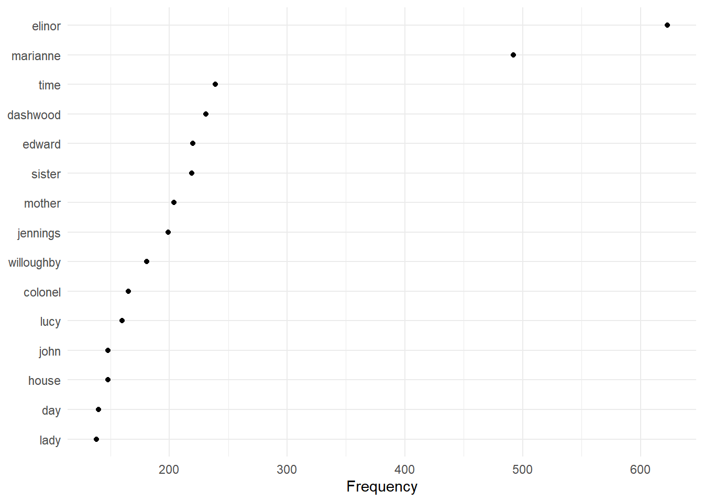
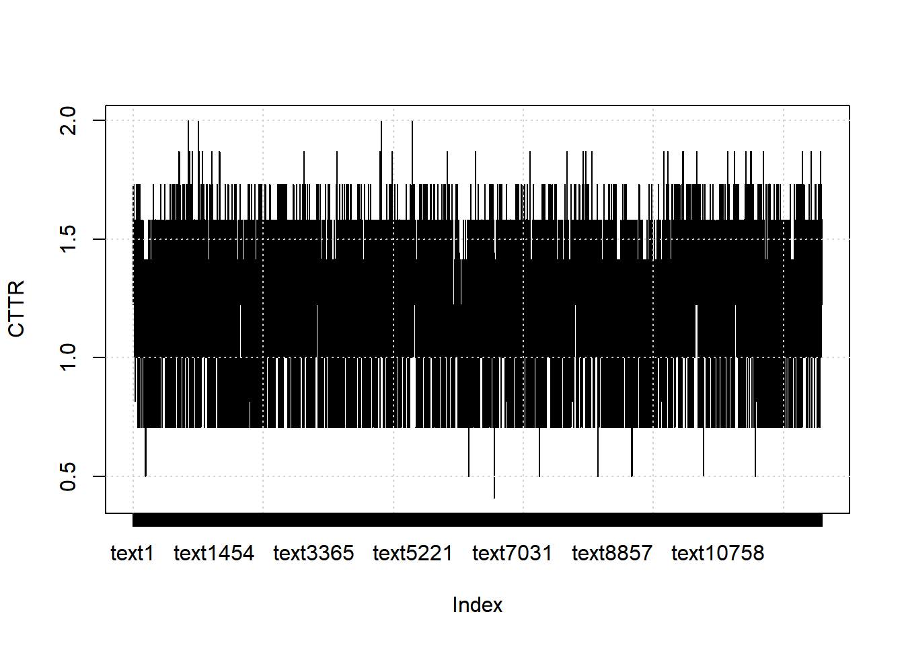
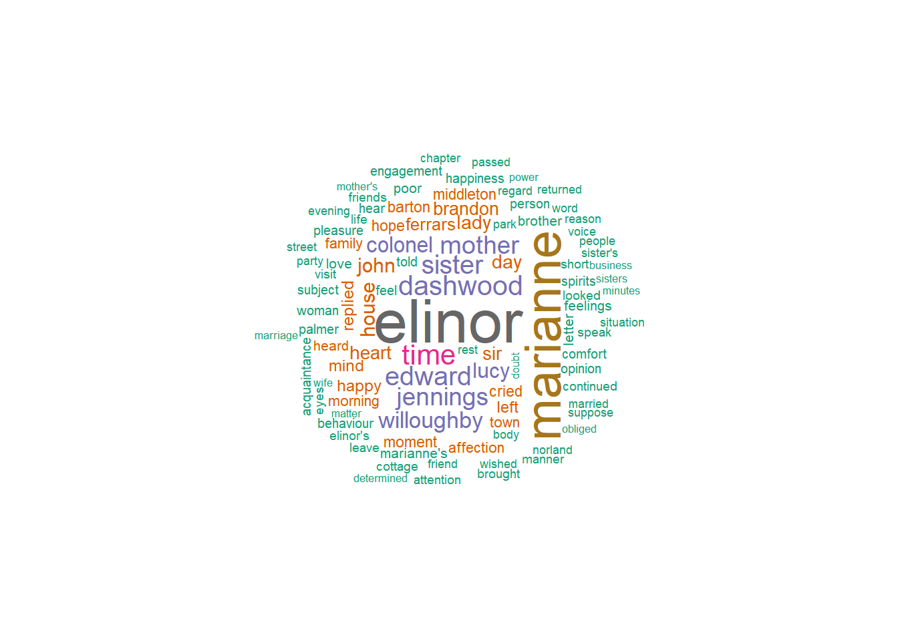
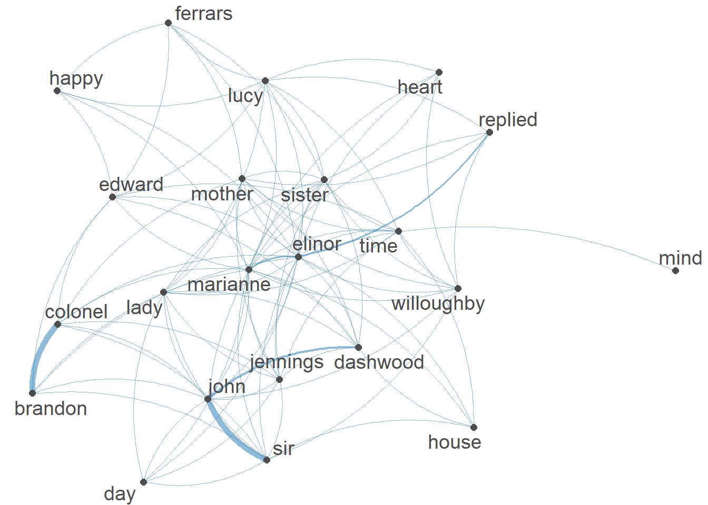

6.2 janeaustenr
6.2.2 Look into data
And we can get the top 60 rows from “sensesensibility”
## [1] "SENSE AND SENSIBILITY"
## [2] ""
## [3] "by Jane Austen"
## [4] ""
## [5] "(1811)"
## [6] ""
## [7] ""
## [8] ""
## [9] ""
## [10] "CHAPTER 1"
## [11] ""
## [12] ""
## [13] "The family of Dashwood had long been settled in Sussex. Their estate"
## [14] "was large, and their residence was at Norland Park, in the centre of"
## [15] "their property, where, for many generations, they had lived in so"
## [16] "respectable a manner as to engage the general good opinion of their"
## [17] "surrounding acquaintance. The late owner of this estate was a single"
## [18] "man, who lived to a very advanced age, and who for many years of his"
## [19] "life, had a constant companion and housekeeper in his sister. But her"
## [20] "death, which happened ten years before his own, produced a great"
## [21] "alteration in his home; for to supply her loss, he invited and received"
## [22] "into his house the family of his nephew Mr. Henry Dashwood, the legal"
## [23] "inheritor of the Norland estate, and the person to whom he intended to"
## [24] "bequeath it. In the society of his nephew and niece, and their"
## [25] "children, the old Gentleman's days were comfortably spent. His"
## [26] "attachment to them all increased. The constant attention of Mr. and"
## [27] "Mrs. Henry Dashwood to his wishes, which proceeded not merely from"
## [28] "interest, but from goodness of heart, gave him every degree of solid"
## [29] "comfort which his age could receive; and the cheerfulness of the"
## [30] "children added a relish to his existence."
## [31] ""
## [32] "By a former marriage, Mr. Henry Dashwood had one son: by his present"
## [33] "lady, three daughters. The son, a steady respectable young man, was"
## [34] "amply provided for by the fortune of his mother, which had been large,"
## [35] "and half of which devolved on him on his coming of age. By his own"
## [36] "marriage, likewise, which happened soon afterwards, he added to his"
## [37] "wealth. To him therefore the succession to the Norland estate was not"
## [38] "so really important as to his sisters; for their fortune, independent"
## [39] "of what might arise to them from their father's inheriting that"
## [40] "property, could be but small. Their mother had nothing, and their"
## [41] "father only seven thousand pounds in his own disposal; for the"
## [42] "remaining moiety of his first wife's fortune was also secured to her"
## [43] "child, and he had only a life-interest in it."
## [44] ""
## [45] "The old gentleman died: his will was read, and like almost every other"
## [46] "will, gave as much disappointment as pleasure. He was neither so"
## [47] "unjust, nor so ungrateful, as to leave his estate from his nephew;--but"
## [48] "he left it to him on such terms as destroyed half the value of the"
## [49] "bequest. Mr. Dashwood had wished for it more for the sake of his wife"
## [50] "and daughters than for himself or his son;--but to his son, and his"
## [51] "son's son, a child of four years old, it was secured, in such a way, as"
## [52] "to leave to himself no power of providing for those who were most dear"
## [53] "to him, and who most needed a provision by any charge on the estate, or"
## [54] "by any sale of its valuable woods. The whole was tied up for the"
## [55] "benefit of this child, who, in occasional visits with his father and"
## [56] "mother at Norland, had so far gained on the affections of his uncle, by"
## [57] "such attractions as are by no means unusual in children of two or three"
## [58] "years old; an imperfect articulation, an earnest desire of having his"
## [59] "own way, many cunning tricks, and a great deal of noise, as to outweigh"
## [60] "all the value of all the attention which, for years, he had received"6.2.3 Transform to a dataframe
sensesensibility_DF <- sensesensibility %>%
data.frame()
sensesensibility_DF <- sensesensibility_DF[-c(1:12),]
sensesensibility_DF %>%
head(60)## [1] "The family of Dashwood had long been settled in Sussex. Their estate"
## [2] "was large, and their residence was at Norland Park, in the centre of"
## [3] "their property, where, for many generations, they had lived in so"
## [4] "respectable a manner as to engage the general good opinion of their"
## [5] "surrounding acquaintance. The late owner of this estate was a single"
## [6] "man, who lived to a very advanced age, and who for many years of his"
## [7] "life, had a constant companion and housekeeper in his sister. But her"
## [8] "death, which happened ten years before his own, produced a great"
## [9] "alteration in his home; for to supply her loss, he invited and received"
## [10] "into his house the family of his nephew Mr. Henry Dashwood, the legal"
## [11] "inheritor of the Norland estate, and the person to whom he intended to"
## [12] "bequeath it. In the society of his nephew and niece, and their"
## [13] "children, the old Gentleman's days were comfortably spent. His"
## [14] "attachment to them all increased. The constant attention of Mr. and"
## [15] "Mrs. Henry Dashwood to his wishes, which proceeded not merely from"
## [16] "interest, but from goodness of heart, gave him every degree of solid"
## [17] "comfort which his age could receive; and the cheerfulness of the"
## [18] "children added a relish to his existence."
## [19] ""
## [20] "By a former marriage, Mr. Henry Dashwood had one son: by his present"
## [21] "lady, three daughters. The son, a steady respectable young man, was"
## [22] "amply provided for by the fortune of his mother, which had been large,"
## [23] "and half of which devolved on him on his coming of age. By his own"
## [24] "marriage, likewise, which happened soon afterwards, he added to his"
## [25] "wealth. To him therefore the succession to the Norland estate was not"
## [26] "so really important as to his sisters; for their fortune, independent"
## [27] "of what might arise to them from their father's inheriting that"
## [28] "property, could be but small. Their mother had nothing, and their"
## [29] "father only seven thousand pounds in his own disposal; for the"
## [30] "remaining moiety of his first wife's fortune was also secured to her"
## [31] "child, and he had only a life-interest in it."
## [32] ""
## [33] "The old gentleman died: his will was read, and like almost every other"
## [34] "will, gave as much disappointment as pleasure. He was neither so"
## [35] "unjust, nor so ungrateful, as to leave his estate from his nephew;--but"
## [36] "he left it to him on such terms as destroyed half the value of the"
## [37] "bequest. Mr. Dashwood had wished for it more for the sake of his wife"
## [38] "and daughters than for himself or his son;--but to his son, and his"
## [39] "son's son, a child of four years old, it was secured, in such a way, as"
## [40] "to leave to himself no power of providing for those who were most dear"
## [41] "to him, and who most needed a provision by any charge on the estate, or"
## [42] "by any sale of its valuable woods. The whole was tied up for the"
## [43] "benefit of this child, who, in occasional visits with his father and"
## [44] "mother at Norland, had so far gained on the affections of his uncle, by"
## [45] "such attractions as are by no means unusual in children of two or three"
## [46] "years old; an imperfect articulation, an earnest desire of having his"
## [47] "own way, many cunning tricks, and a great deal of noise, as to outweigh"
## [48] "all the value of all the attention which, for years, he had received"
## [49] "from his niece and her daughters. He meant not to be unkind, however,"
## [50] "and, as a mark of his affection for the three girls, he left them a"
## [51] "thousand pounds a-piece."
## [52] ""
## [53] "Mr. Dashwood's disappointment was, at first, severe; but his temper was"
## [54] "cheerful and sanguine; and he might reasonably hope to live many years,"
## [55] "and by living economically, lay by a considerable sum from the produce"
## [56] "of an estate already large, and capable of almost immediate"
## [57] "improvement. But the fortune, which had been so tardy in coming, was"
## [58] "his only one twelvemonth. He survived his uncle no longer; and ten"
## [59] "thousand pounds, including the late legacies, was all that remained for"
## [60] "his widow and daughters."6.2.4 Create a corpus
## Corpus consisting of 12,612 documents.
## text1 :
## "The family of Dashwood had long been settled in Sussex. The..."
##
## text2 :
## "was large, and their residence was at Norland Park, in the c..."
##
## text3 :
## "their property, where, for many generations, they had lived ..."
##
## text4 :
## "respectable a manner as to engage the general good opinion o..."
##
## text5 :
## "surrounding acquaintance. The late owner of this estate was..."
##
## text6 :
## "man, who lived to a very advanced age, and who for many year..."
##
## [ reached max_ndoc ... 12,606 more documents ]Given that we have many empty lines in this corpus, we clean it by excluding any empty line.
sensesensibility_corpus <- corpus_subset(sensesensibility_corpus, ntoken(sensesensibility_corpus) >= 1)6.2.5 Tokens
tokens() segments texts in a corpus into tokens (words or sentences) by word boundaries.
We can remove punctuations or not
6.2.5.1 With punctuations
## Tokens consisting of 10,592 documents.
## text1 :
## [1] "The" "family" "of" "Dashwood" "had" "long"
## [7] "been" "settled" "in" "Sussex" "." "Their"
## [ ... and 1 more ]
##
## text2 :
## [1] "was" "large" "," "and" "their" "residence"
## [7] "was" "at" "Norland" "Park" "," "in"
## [ ... and 3 more ]
##
## text3 :
## [1] "their" "property" "," "where" ","
## [6] "for" "many" "generations" "," "they"
## [11] "had" "lived"
## [ ... and 2 more ]
##
## text4 :
## [1] "respectable" "a" "manner" "as" "to"
## [6] "engage" "the" "general" "good" "opinion"
## [11] "of" "their"
##
## text5 :
## [1] "surrounding" "acquaintance" "." "The" "late"
## [6] "owner" "of" "this" "estate" "was"
## [11] "a" "single"
##
## text6 :
## [1] "man" "," "who" "lived" "to" "a"
## [7] "very" "advanced" "age" "," "and" "who"
## [ ... and 5 more ]
##
## [ reached max_ndoc ... 10,586 more documents ]6.2.5.2 Without punctuations
sensesensibility_corpus_tok_no_punct <- tokens(sensesensibility_corpus, remove_punct = TRUE)
sensesensibility_corpus_tok_no_punct## Tokens consisting of 10,592 documents.
## text1 :
## [1] "The" "family" "of" "Dashwood" "had" "long"
## [7] "been" "settled" "in" "Sussex" "Their" "estate"
##
## text2 :
## [1] "was" "large" "and" "their" "residence" "was"
## [7] "at" "Norland" "Park" "in" "the" "centre"
## [ ... and 1 more ]
##
## text3 :
## [1] "their" "property" "where" "for" "many"
## [6] "generations" "they" "had" "lived" "in"
## [11] "so"
##
## text4 :
## [1] "respectable" "a" "manner" "as" "to"
## [6] "engage" "the" "general" "good" "opinion"
## [11] "of" "their"
##
## text5 :
## [1] "surrounding" "acquaintance" "The" "late" "owner"
## [6] "of" "this" "estate" "was" "a"
## [11] "single"
##
## text6 :
## [1] "man" "who" "lived" "to" "a" "very"
## [7] "advanced" "age" "and" "who" "for" "many"
## [ ... and 3 more ]
##
## [ reached max_ndoc ... 10,586 more documents ]6.2.6 Stop words
It is best to remove stop words (function/grammatical words) when we use statistical analyses of a corpus.
sensesensibility_corpus_tok_no_punct_no_Stop <- tokens_select(sensesensibility_corpus_tok_no_punct, pattern = stopwords("en", source = "stopwords-iso"), selection = "remove")
sensesensibility_corpus_tok_no_punct_no_Stop## Tokens consisting of 10,592 documents.
## text1 :
## [1] "family" "Dashwood" "settled" "Sussex" "estate"
##
## text2 :
## [1] "residence" "Norland" "Park" "centre"
##
## text3 :
## [1] "property" "generations" "lived"
##
## text4 :
## [1] "respectable" "manner" "engage" "opinion"
##
## text5 :
## [1] "surrounding" "acquaintance" "late" "owner" "estate"
## [6] "single"
##
## text6 :
## [1] "lived" "advanced" "age"
##
## [ reached max_ndoc ... 10,586 more documents ]6.2.7 Statistical analyses
We can start by providing statistics (whether descriptives or inferential) based on our corpora.
6.2.7.1 Simple frequency analysis
Here we look at obtaining a simple frequency analysis of usage.
6.2.7.1.1 DFM
We start by generating a DFM (document-feature matrix)
sensesensibility_corpus_tok_no_punct_no_Stop_dfm <- dfm(sensesensibility_corpus_tok_no_punct_no_Stop)
sensesensibility_corpus_tok_no_punct_no_Stop_dfm## Document-feature matrix of: 10,592 documents, 5,894 features (99.95% sparse) and 0 docvars.
## features
## docs family dashwood settled sussex estate residence norland park centre
## text1 1 1 1 1 1 0 0 0 0
## text2 0 0 0 0 0 1 1 1 1
## text3 0 0 0 0 0 0 0 0 0
## text4 0 0 0 0 0 0 0 0 0
## text5 0 0 0 0 1 0 0 0 0
## text6 0 0 0 0 0 0 0 0 0
## features
## docs property
## text1 0
## text2 0
## text3 1
## text4 0
## text5 0
## text6 0
## [ reached max_ndoc ... 10,586 more documents, reached max_nfeat ... 5,884 more features ]6.2.7.1.2 Frequencies
sensesensibility_corpus_tok_no_punct_no_Stop_dfm_freq <- textstat_frequency(sensesensibility_corpus_tok_no_punct_no_Stop_dfm)
sensesensibility_corpus_tok_no_punct_no_Stop_dfm_freq## feature frequency rank docfreq group
## 1 elinor 623 1 621 all
## 2 marianne 492 2 491 all
## 3 time 239 3 237 all
## 4 dashwood 231 4 231 all
## 5 edward 220 5 220 all
## 6 sister 219 6 219 all
## 7 mother 204 7 203 all
## 8 jennings 199 8 199 all
## 9 willoughby 181 9 178 all
## 10 colonel 165 10 165 all
## 11 lucy 160 11 158 all
## 12 house 148 12 148 all
## 13 john 148 12 148 all
## 14 day 140 14 136 all
## 15 lady 138 15 138 all
## 16 heart 127 16 127 all
## 17 sir 120 17 120 all
## 18 brandon 119 18 119 all
## 19 ferrars 114 19 113 all
## 20 replied 102 20 102 all
## 21 mind 100 21 100 all
## 22 happy 100 21 99 all
## 23 left 98 23 97 all
## 24 barton 89 24 89 all
## 25 hope 88 25 87 all
## 26 moment 87 26 87 all
## 27 middleton 87 26 87 all
## 28 cried 87 26 87 all
## 29 town 86 29 85 all
## 30 family 83 30 83 all
## 31 morning 83 30 83 all
## 32 affection 79 32 79 all
## 33 heard 78 33 76 all
## 34 love 76 34 76 all
## 35 letter 75 35 72 all
## 36 marianne's 74 36 74 all
## 37 feelings 73 37 73 all
## 38 brother 71 38 70 all
## 39 poor 71 38 71 all
## 40 hear 70 40 70 all
## 41 spirits 69 41 69 all
## 42 told 69 41 68 all
## 43 woman 68 43 67 all
## 44 subject 68 43 68 all
## 45 person 67 45 67 all
## 46 pleasure 66 46 66 all
## 47 feel 66 46 66 all
## 48 happiness 66 46 64 all
## 49 palmer 65 49 65 all
## 50 acquaintance 64 50 64 all
## 51 behaviour 64 50 64 all
## 52 opinion 63 52 63 all
## 53 comfort 63 52 61 all
## 54 engagement 63 52 62 all
## 55 elinor's 62 55 62 all
## 56 friends 62 55 61 all
## 57 visit 62 55 62 all
## 58 looked 61 58 61 all
## 59 cottage 61 58 61 all
## 60 speak 61 58 60 all
## 61 life 58 61 58 all
## 62 attention 58 61 58 all
## 63 leave 58 61 57 all
## 64 brought 58 61 58 all
## 65 short 57 65 57 all
## 66 manner 56 66 56 all
## 67 eyes 56 66 56 all
## 68 continued 56 66 56 all
## 69 suppose 55 69 54 all
## 70 wished 54 70 54 all
## 71 rest 54 70 54 all
## 72 married 54 70 51 all
## 73 situation 54 70 54 all
## 74 norland 53 74 53 all
## 75 people 53 74 53 all
## 76 sister's 53 74 53 all
## 77 friend 53 74 52 all
## 78 reason 53 74 52 all
## 79 park 52 79 52 all
## 80 returned 52 79 52 all
## 81 passed 52 79 52 all
## 82 voice 51 82 51 all
## 83 regard 50 83 50 all
## 84 evening 50 83 49 all
## 85 body 50 83 48 all
## 86 chapter 49 86 49 all
## 87 word 48 87 48 all
## 88 party 48 87 48 all
## 89 street 48 87 48 all
## 90 sisters 47 90 45 all
## 91 matter 47 90 47 all
## 92 minutes 47 90 47 all
## 93 obliged 47 90 47 all
## 94 mother's 46 94 46 all
## 95 determined 46 94 46 all
## 96 business 46 94 46 all
## 97 doubt 46 94 46 all
## 98 power 45 98 45 all
## 99 marriage 44 99 44 all
## 100 wife 44 99 44 all
## 101 account 44 99 44 all
## 102 glad 44 99 43 all
## 103 days 43 103 43 all
## 104 perfectly 43 103 43 all
## 105 called 43 103 43 all
## 106 edward's 43 103 43 all
## 107 kindness 42 107 42 all
## 108 fanny 42 107 42 all
## 109 return 42 107 41 all
## 110 engaged 42 107 42 all
## 111 pounds 41 111 41 all
## 112 carriage 41 111 41 all
## 113 equally 40 113 39 all
## 114 conversation 40 113 40 all
## 115 surprise 40 113 40 all
## 116 entered 40 113 40 all
## 117 talk 40 113 40 all
## 118 received 39 118 39 all
## 119 hand 39 118 39 all
## 120 spent 38 120 38 all
## 121 fortune 38 120 38 all
## 122 child 38 120 37 all
## 123 expected 38 120 38 all
## 124 real 38 120 38 all
## 125 hours 38 120 38 all
## 126 steele 38 120 38 all
## 127 settled 37 127 36 all
## 128 coming 37 127 37 all
## 129 conduct 37 127 37 all
## 130 daughter 37 127 37 all
## 131 husband 37 127 37 all
## 132 months 37 127 35 all
## 133 satisfaction 37 127 37 all
## 134 silent 37 127 37 all
## 135 object 37 127 37 all
## 136 door 37 127 37 all
## 137 ma'am 37 127 37 all
## 138 sat 37 127 37 all
## 139 live 36 139 36 all
## 140 girl 36 139 36 all
## 141 dashwoods 36 139 36 all
## 142 impossible 36 139 36 all
## 143 pretty 36 139 36 all
## 144 jennings's 36 139 36 all
## 145 living 35 145 35 all
## 146 arrival 35 145 35 all
## 147 appeared 35 145 35 all
## 148 spite 35 145 35 all
## 149 spoke 35 145 35 all
## 150 head 35 145 35 all
## 151 ready 35 145 35 all
## 152 willoughby's 35 145 35 all
## 153 london 35 145 35 all
## 154 character 34 154 34 all
## 155 manners 34 154 33 all
## 156 week 34 154 33 all
## 157 children 33 157 33 all
## 158 attachment 33 157 33 all
## 159 sake 33 157 32 all
## 160 deal 33 157 33 all
## 161 margaret 33 157 33 all
## 162 answer 33 157 33 all
## 163 ladies 33 157 33 all
## 164 night 33 157 32 all
## 165 country 33 157 33 all
## 166 hour 33 157 33 all
## 167 care 33 157 33 all
## 168 invitation 32 168 32 all
## 169 set 32 168 32 all
## 170 assure 32 168 32 all
## 171 pleased 32 168 31 all
## 172 talked 32 168 32 all
## 173 silence 32 168 32 all
## 174 son 31 174 30 all
## 175 common 31 174 30 all
## 176 sense 31 174 31 all
## 177 fancy 31 174 31 all
## 178 convinced 31 174 31 all
## 179 instantly 31 174 31 all
## 180 confidence 31 174 31 all
## 181 happened 30 181 30 all
## 182 wishes 30 181 30 all
## 183 comfortable 30 181 30 all
## 184 stay 30 181 30 all
## 185 judgment 30 181 30 all
## 186 natural 30 181 30 all
## 187 believed 30 181 30 all
## 188 usual 30 181 29 all
## 189 delaford 30 181 29 all
## 190 robert 30 181 30 all
## 191 remained 29 191 29 all
## 192 opportunity 29 191 29 all
## 193 marry 29 191 28 all
## 194 company 29 191 29 all
## 195 easily 29 191 29 all
## 196 circumstances 29 191 29 all
## 197 anxious 29 191 28 all
## 198 change 29 191 28 all
## 199 walked 29 191 29 all
## 200 steeles 29 191 29 all
## 201 strong 28 201 28 all
## 202 knowledge 28 201 28 all
## 203 resolved 28 201 28 all
## 204 concern 28 201 28 all
## 205 future 28 201 28 all
## 206 question 28 201 28 all
## 207 countenance 28 201 28 all
## 208 misery 28 201 28 all
## 209 repeated 28 201 28 all
## 210 feeling 28 201 28 all
## 211 appearance 28 201 28 all
## 212 affair 28 201 28 all
## 213 lord 28 201 28 all
## 214 daughters 27 214 27 all
## 215 handsome 27 214 26 all
## 216 notice 27 214 27 all
## 217 occasion 27 214 27 all
## 218 considered 27 214 27 all
## 219 talking 27 214 27 all
## 220 expect 27 214 27 all
## 221 truth 27 214 27 all
## 222 favour 27 214 27 all
## 223 taste 27 214 27 all
## 224 declared 27 214 26 all
## 225 hearing 27 214 27 all
## 226 suffered 27 214 27 all
## 227 cleveland 27 214 27 all
## 228 produced 26 228 26 all
## 229 gentleman 26 228 26 all
## 230 nature 26 228 26 all
## 231 expectation 26 228 26 all
## 232 understand 26 228 26 all
## 233 acquainted 26 228 26 all
## 234 assured 26 228 26 all
## 235 mama 26 228 26 all
## 236 exceedingly 26 228 26 all
## 237 resolution 26 228 26 all
## 238 devonshire 26 228 26 all
## 239 satisfied 26 228 26 all
## 240 surprised 26 228 26 all
## 241 fear 26 228 26 all
## 242 distress 26 228 26 all
## 243 lucy's 26 228 26 all
## 244 favourite 25 244 25 all
## 245 advantage 25 244 25 all
## 246 money 25 244 25 all
## 247 fine 25 244 24 all
## 248 scarcely 25 244 25 all
## 249 agreeable 25 244 25 all
## 250 pain 25 244 25 all
## 251 event 25 244 25 all
## 252 brandon's 25 244 25 all
## 253 meeting 25 244 25 all
## 254 bed 25 244 25 all
## 255 late 24 255 24 all
## 256 society 24 255 24 all
## 257 father 24 255 24 all
## 258 desire 24 255 24 all
## 259 proper 24 255 24 all
## 260 delight 24 255 24 all
## 261 supposed 24 255 24 all
## 262 idea 24 255 24 all
## 263 answered 24 255 24 all
## 264 painful 24 255 24 all
## 265 curiosity 24 255 24 all
## 266 joy 24 255 24 all
## 267 met 24 255 24 all
## 268 dinner 24 255 24 all
## 269 fixed 24 255 24 all
## 270 forced 24 255 24 all
## 271 disappointment 23 271 23 all
## 272 earnest 23 271 23 all
## 273 income 23 271 23 all
## 274 regret 23 271 23 all
## 275 knowing 23 271 23 all
## 276 true 23 271 22 all
## 277 worth 23 271 23 all
## 278 strange 23 271 23 all
## 279 weeks 23 271 22 all
## 280 smile 23 271 22 all
## 281 afraid 23 271 23 all
## 282 remember 23 271 23 all
## 283 formed 23 271 23 all
## 284 tears 23 271 23 all
## 285 reached 23 271 23 all
## 286 table 23 271 23 all
## 287 unfortunate 23 271 23 all
## 288 bear 23 271 23 all
## 289 constant 22 289 22 all
## 290 read 22 289 22 all
## 291 danger 22 289 21 all
## 292 easy 22 289 22 all
## 293 promise 22 289 22 all
## 294 affectionate 22 289 22 all
## 295 plan 22 289 22 all
## 296 prevent 22 289 22 all
## 297 meet 22 289 21 all
## 298 admiration 22 289 22 all
## 299 respect 22 289 22 all
## 300 journey 22 289 22 all
## 301 window 22 289 21 all
## 302 share 22 289 22 all
## 303 wrong 22 289 22 all
## 304 connection 22 289 22 all
## 305 leaving 22 289 22 all
## 306 dashwood's 21 306 21 all
## 307 temper 21 306 21 all
## 308 cold 21 306 21 all
## 309 fond 21 306 21 all
## 310 equal 21 306 21 all
## 311 avoid 21 306 21 all
## 312 disposition 21 306 21 all
## 313 eager 21 306 21 all
## 314 exertion 21 306 21 all
## 315 emotion 21 306 21 all
## 316 melancholy 21 306 21 all
## 317 address 21 306 21 all
## 318 speaking 21 306 20 all
## 319 conviction 21 306 20 all
## 320 mistaken 21 306 20 all
## 321 view 21 306 21 all
## 322 sitting 21 306 21 all
## 323 beauty 21 306 21 all
## 324 chance 21 306 21 all
## 325 wait 21 306 21 all
## 326 lived 20 326 20 all
## 327 loss 20 326 20 all
## 328 meant 20 326 20 all
## 329 arrived 20 326 20 all
## 330 eldest 20 326 20 all
## 331 times 20 326 20 all
## 332 enjoyment 20 326 20 all
## 333 friendship 20 326 20 all
## 334 particulars 20 326 20 all
## 335 inquiry 20 326 20 all
## 336 letters 20 326 20 all
## 337 walk 20 326 20 all
## 338 elegance 20 326 20 all
## 339 delighted 20 326 20 all
## 340 soul 20 326 20 all
## 341 unhappy 20 326 20 all
## 342 compassion 20 326 20 all
## 343 lost 20 326 20 all
## 344 charlotte 20 326 20 all
## 345 estate 19 345 19 all
## 346 age 19 345 19 all
## 347 required 19 345 19 all
## 348 quiet 19 345 19 all
## 349 difference 19 345 19 all
## 350 circumstance 19 345 18 all
## 351 staying 19 345 19 all
## 352 indifference 19 345 19 all
## 353 pity 19 345 17 all
## 354 delightful 19 345 19 all
## 355 hoped 19 345 19 all
## 356 difficulty 19 345 19 all
## 357 discourse 19 345 19 all
## 358 stairs 19 345 19 all
## 359 weather 19 345 19 all
## 360 eye 19 345 19 all
## 361 mentioned 19 345 19 all
## 362 secret 19 345 19 all
## 363 servant 19 345 18 all
## 364 tenderness 19 345 19 all
## 365 liberty 19 345 19 all
## 366 companion 18 366 17 all
## 367 capable 18 366 18 all
## 368 understanding 18 366 18 all
## 369 led 18 366 18 all
## 370 gratitude 18 366 18 all
## 371 style 18 366 18 all
## 372 breakfast 18 366 18 all
## 373 sight 18 366 18 all
## 374 overcome 18 366 18 all
## 375 esteem 18 366 18 all
## 376 music 18 366 18 all
## 377 praise 18 366 17 all
## 378 observation 18 366 18 all
## 379 moments 18 366 18 all
## 380 attended 18 366 18 all
## 381 calm 18 366 18 all
## 382 consequence 18 366 18 all
## 383 entrance 18 366 18 all
## 384 recollection 18 366 18 all
## 385 middletons 18 366 18 all
## 386 unable 18 366 18 all
## 387 hopes 18 366 18 all
## 388 alarm 18 366 18 all
## 389 anxiety 18 366 18 all
## 390 allenham 18 366 18 all
## 391 air 18 366 18 all
## 392 honour 18 366 17 all
## 393 joined 18 366 18 all
## 394 thinking 18 366 18 all
## 395 hair 18 366 18 all
## 396 relief 18 366 18 all
## 397 necessity 18 366 18 all
## 398 astonishment 18 366 18 all
## 399 amiable 17 399 17 all
## 400 a-year 17 399 17 all
## 401 parties 17 399 17 all
## 402 spirit 17 399 17 all
## 403 ease 17 399 17 all
## 404 intelligence 17 399 17 all
## 405 composure 17 399 17 all
## 406 calmness 17 399 17 all
## 407 simple 17 399 16 all
## 408 warmth 17 399 17 all
## 409 attempt 17 399 17 all
## 410 worse 17 399 17 all
## 411 excuse 17 399 17 all
## 412 inclination 17 399 17 all
## 413 difficulties 17 399 17 all
## 414 cousins 17 399 16 all
## 415 bring 17 399 17 all
## 416 allowed 17 399 17 all
## 417 disappointed 17 399 17 all
## 418 pause 17 399 17 all
## 419 pray 17 399 15 all
## 420 smith 17 399 17 all
## 421 charming 17 399 17 all
## 422 hands 17 399 17 all
## 423 agitation 17 399 17 all
## 424 berkeley 17 399 17 all
## 425 receive 16 425 16 all
## 426 cheerfulness 16 425 16 all
## 427 girls 16 425 16 all
## 428 quitted 16 425 16 all
## 429 affliction 16 425 16 all
## 430 civility 16 425 15 all
## 431 carried 16 425 16 all
## 432 aware 16 425 16 all
## 433 persuaded 16 425 16 all
## 434 opinions 16 425 16 all
## 435 rich 16 425 16 all
## 436 loved 16 425 16 all
## 437 grave 16 425 16 all
## 438 civil 16 425 16 all
## 439 ferrars's 16 425 16 all
## 440 john's 16 425 16 all
## 441 laughed 16 425 16 all
## 442 indifferent 16 425 16 all
## 443 influence 16 425 16 all
## 444 declare 16 425 16 all
## 445 write 16 425 16 all
## 446 purpose 16 425 16 all
## 447 combe 16 425 16 all
## 448 relations 16 425 16 all
## 449 harley 16 425 16 all
## 450 engage 15 450 15 all
## 451 alteration 15 450 15 all
## 452 increased 15 450 15 all
## 453 gained 15 450 15 all
## 454 considerable 15 450 15 all
## 455 prospect 15 450 15 all
## 456 highly 15 450 15 all
## 457 afford 15 450 15 all
## 458 altogether 15 450 15 all
## 459 imagine 15 450 15 all
## 460 pleasant 15 450 15 all
## 461 violent 15 450 15 all
## 462 unwilling 15 450 15 all
## 463 express 15 450 15 all
## 464 mutual 15 450 15 all
## 465 suspicion 15 450 15 all
## 466 disposed 15 450 15 all
## 467 delay 15 450 15 all
## 468 form 15 450 15 all
## 469 offer 15 450 15 all
## 470 suffering 15 450 15 all
## 471 exeter 15 450 15 all
## 472 match 15 450 15 all
## 473 middleton's 15 450 15 all
## 474 removed 15 450 15 all
## 475 supported 15 450 15 all
## 476 smart 15 450 15 all
## 477 observed 15 450 15 all
## 478 finding 15 450 15 all
## 479 prevented 15 450 15 all
## 480 tomorrow 15 450 15 all
## 481 aye 15 450 10 all
## 482 presence 15 450 15 all
## 483 note 15 450 15 all
## 484 writing 15 450 15 all
## 485 duty 15 450 15 all
## 486 trust 15 450 15 all
## 487 drawing-room 15 450 15 all
## 488 expressed 15 450 15 all
## 489 utmost 15 450 15 all
## 490 respectable 14 490 14 all
## 491 invited 14 490 14 all
## 492 degree 14 490 14 all
## 493 cheerful 14 490 14 all
## 494 selfish 14 490 14 all
## 495 propriety 14 490 14 all
## 496 inconvenience 14 490 14 all
## 497 frequently 14 490 14 all
## 498 consolation 14 490 14 all
## 499 treated 14 490 14 all
## 500 dreadful 14 490 14 all
## 501 assistance 14 490 14 all
## 502 support 14 490 14 all
## 503 politeness 14 490 14 all
## 504 occurred 14 490 14 all
## 505 justice 14 490 14 all
## 506 perceive 14 490 14 all
## 507 folly 14 490 14 all
## 508 wishing 14 490 14 all
## 509 encouragement 14 490 14 all
## 510 mention 14 490 14 all
## 511 relation 14 490 14 all
## 512 written 14 490 13 all
## 513 understood 14 490 14 all
## 514 suffer 14 490 13 all
## 515 drew 14 490 14 all
## 516 rose 14 490 13 all
## 517 engagements 14 490 14 all
## 518 marrying 14 490 13 all
## 519 yesterday 14 490 14 all
## 520 heavy 14 490 14 all
## 521 eagerly 14 490 14 all
## 522 news 14 490 14 all
## 523 amusement 14 490 14 all
## 524 spoken 14 490 14 all
## 525 proof 14 490 14 all
## 526 concerned 14 490 14 all
## 527 creature 14 490 14 all
## 528 sit 14 490 14 all
## 529 fresh 14 490 14 all
## 530 morton 14 490 14 all
## 531 intended 13 531 13 all
## 532 assurance 13 531 13 all
## 533 leisure 13 531 13 all
## 534 offence 13 531 13 all
## 535 earnestly 13 531 13 all
## 536 reflection 13 531 13 all
## 537 pressed 13 531 13 all
## 538 assist 13 531 13 all
## 539 consent 13 531 13 all
## 540 trouble 13 531 13 all
## 541 secure 13 531 13 all
## 542 informed 13 531 13 all
## 543 merit 13 531 12 all
## 544 private 13 531 13 all
## 545 approbation 13 531 13 all
## 546 persuasion 13 531 13 all
## 547 probability 13 531 13 all
## 548 expression 13 531 13 all
## 549 perceived 13 531 13 all
## 550 burst 13 531 13 all
## 551 calling 13 531 13 all
## 552 astonished 13 531 13 all
## 553 expense 13 531 13 all
## 554 evil 13 531 13 all
## 555 comparison 13 531 13 all
## 556 solicitude 13 531 13 all
## 557 continual 13 531 13 all
## 558 vanity 13 531 13 all
## 559 extremely 13 531 12 all
## 560 laugh 13 531 12 all
## 561 confess 13 531 13 all
## 562 fortnight 13 531 13 all
## 563 fellow 13 531 13 all
## 564 employment 13 531 13 all
## 565 o'clock 13 531 13 all
## 566 sweet 13 531 13 all
## 567 opposition 13 531 13 all
## 568 recovered 13 531 13 all
## 569 naturally 13 531 13 all
## 570 receiving 13 531 13 all
## 571 walking 13 531 13 all
## 572 grateful 13 531 13 all
## 573 dance 13 531 12 all
## 574 returning 13 531 13 all
## 575 feared 13 531 13 all
## 576 health 13 531 13 all
## 577 conscience 13 531 12 all
## 578 proved 13 531 13 all
## 579 death 12 579 12 all
## 580 remaining 12 579 12 all
## 581 terms 12 579 12 all
## 582 affections 12 579 12 all
## 583 uncle 12 579 12 all
## 584 lay 12 579 12 all
## 585 illness 12 579 12 all
## 586 promised 12 579 12 all
## 587 increase 12 579 12 all
## 588 spare 12 579 12 all
## 589 sending 12 579 12 all
## 590 excellent 12 579 12 all
## 591 resemblance 12 579 12 all
## 592 grief 12 579 12 all
## 593 restored 12 579 12 all
## 594 paid 12 579 12 all
## 595 horses 12 579 12 all
## 596 material 12 579 12 all
## 597 consideration 12 579 12 all
## 598 unnecessary 12 579 12 all
## 599 couple 12 579 12 all
## 600 acknowledged 12 579 12 all
## 601 superior 12 579 12 all
## 602 warm 12 579 12 all
## 603 enter 12 579 12 all
## 604 beautiful 12 579 12 all
## 605 drawn 12 579 12 all
## 606 smiling 12 579 12 all
## 607 warmly 12 579 12 all
## 608 imagination 12 579 12 all
## 609 lively 12 579 12 all
## 610 greatly 12 579 12 all
## 611 happen 12 579 12 all
## 612 reasonable 12 579 12 all
## 613 sudden 12 579 12 all
## 614 objection 12 579 12 all
## 615 wrote 12 579 12 all
## 616 distance 12 579 12 all
## 617 hastily 12 579 12 all
## 618 explanation 12 579 12 all
## 619 remain 12 579 12 all
## 620 hills 12 579 12 all
## 621 waiting 12 579 12 all
## 622 bringing 12 579 12 all
## 623 hold 12 579 12 all
## 624 procured 12 579 12 all
## 625 gay 12 579 12 all
## 626 prepared 12 579 12 all
## 627 finished 12 579 12 all
## 628 censure 12 579 11 all
## 629 suddenly 12 579 12 all
## 630 raised 12 579 12 all
## 631 intimate 12 579 12 all
## 632 dislike 12 579 12 all
## 633 heartily 12 579 12 all
## 634 suspect 12 579 12 all
## 635 ignorance 12 579 12 all
## 636 tea 12 579 12 all
## 637 angry 12 579 12 all
## 638 fell 12 579 12 all
## 639 bad 12 579 12 all
## 640 probable 12 579 12 all
## 641 acknowledge 12 579 12 all
## 642 exclaimed 12 579 12 all
## 643 tone 12 579 12 all
## 644 minute 12 579 12 all
## 645 forgot 12 579 12 all
## 646 moment's 12 579 12 all
## 647 palmer's 12 579 12 all
## 648 communication 12 579 12 all
## 649 miserable 12 579 12 all
## 650 wretched 12 579 12 all
## 651 consciousness 12 579 12 all
## 652 recommended 11 652 11 all
## 653 sooner 11 652 11 all
## 654 tender 11 652 11 all
## 655 eagerness 11 652 11 all
## 656 imprudence 11 652 11 all
## 657 sorrow 11 652 11 all
## 658 mistress 11 652 11 all
## 659 women 11 652 11 all
## 660 spend 11 652 11 all
## 661 raise 11 652 11 all
## 662 inquiries 11 652 11 all
## 663 pleasing 11 652 11 all
## 664 intimacy 11 652 11 all
## 665 contrary 11 652 11 all
## 666 objects 11 652 11 all
## 667 ideas 11 652 11 all
## 668 choice 11 652 11 all
## 669 striking 11 652 11 all
## 670 evident 11 652 11 all
## 671 drawing 11 652 11 all
## 672 picture 11 652 11 all
## 673 attempted 11 652 11 all
## 674 removal 11 652 11 all
## 675 garden 11 652 11 all
## 676 cousin 11 652 11 all
## 677 explained 11 652 11 all
## 678 concluded 11 652 11 all
## 679 sigh 11 652 11 all
## 680 possession 11 652 11 all
## 681 stand 11 652 11 all
## 682 design 11 652 11 all
## 683 valley 11 652 11 all
## 684 village 11 652 11 all
## 685 wondered 11 652 11 all
## 686 colonel's 11 652 11 all
## 687 meaning 11 652 11 all
## 688 amazement 11 652 11 all
## 689 employed 11 652 11 all
## 690 rain 11 652 11 all
## 691 caught 11 652 11 all
## 692 hurried 11 652 11 all
## 693 parlour 11 652 11 all
## 694 colour 11 652 11 all
## 695 remembrance 11 652 11 all
## 696 force 11 652 11 all
## 697 reproach 11 652 11 all
## 698 spared 11 652 11 all
## 699 openly 11 652 11 all
## 700 attend 11 652 11 all
## 701 judged 11 652 11 all
## 702 send 11 652 11 all
## 703 profession 11 652 11 all
## 704 uncertain 11 652 11 all
## 705 variety 11 652 10 all
## 706 secrecy 11 652 11 all
## 707 broken 11 652 11 all
## 708 reply 11 652 11 all
## 709 stopped 11 652 11 all
## 710 public 11 652 11 all
## 711 magna 11 652 11 all
## 712 absence 11 652 11 all
## 713 dared 11 652 11 all
## 714 monstrous 11 652 11 all
## 715 deceived 11 652 11 all
## 716 injured 11 652 11 all
## 717 forget 11 652 11 all
## 718 sum 10 718 10 all
## 719 advice 10 718 10 all
## 720 wholly 10 718 10 all
## 721 condition 10 718 10 all
## 722 visitors 10 718 10 all
## 723 neighbourhood 10 718 10 all
## 724 request 10 718 10 all
## 725 settle 10 718 10 all
## 726 furniture 10 718 10 all
## 727 absolutely 10 718 10 all
## 728 ceased 10 718 10 all
## 729 brother's 10 718 10 all
## 730 partiality 10 718 10 all
## 731 education 10 718 10 all
## 732 miles 10 718 10 all
## 733 united 10 718 10 all
## 734 books 10 718 10 all
## 735 mistake 10 718 9 all
## 736 thrown 10 718 10 all
## 737 sentiments 10 718 10 all
## 738 stood 10 718 10 all
## 739 indignation 10 718 10 all
## 740 attending 10 718 10 all
## 741 post 10 718 10 all
## 742 offered 10 718 10 all
## 743 waited 10 718 10 all
## 744 direction 10 718 10 all
## 745 depend 10 718 10 all
## 746 admire 10 718 10 all
## 747 dull 10 718 10 all
## 748 safe 10 718 10 all
## 749 uncomfortable 10 718 10 all
## 750 submit 10 718 10 all
## 751 assurances 10 718 10 all
## 752 fears 10 718 10 all
## 753 seated 10 718 10 all
## 754 story 10 718 10 all
## 755 ay 10 718 10 all
## 756 notion 10 718 10 all
## 757 endeavouring 10 718 10 all
## 758 justify 10 718 10 all
## 759 lips 10 718 10 all
## 760 light 10 718 10 all
## 761 lock 10 718 10 all
## 762 attached 10 718 10 all
## 763 speech 10 718 10 all
## 764 accept 10 718 10 all
## 765 apology 10 718 10 all
## 766 urged 10 718 10 all
## 767 fortitude 10 718 10 all
## 768 sleep 10 718 10 all
## 769 sunk 10 718 10 all
## 770 delicacy 10 718 10 all
## 771 forgiven 10 718 10 all
## 772 forgive 10 718 9 all
## 773 language 10 718 10 all
## 774 oxford 10 718 10 all
## 775 palmers 10 718 10 all
## 776 hurt 10 718 10 all
## 777 lucky 10 718 10 all
## 778 beau 10 718 10 all
## 779 beg 10 718 10 all
## 780 borne 10 718 10 all
## 781 watched 10 718 10 all
## 782 fancied 10 718 10 all
## 783 sussex 9 783 9 all
## 784 property 9 783 9 all
## 785 advanced 9 783 9 all
## 786 charge 9 783 9 all
## 787 produce 9 783 9 all
## 788 twelvemonth 9 783 9 all
## 789 learn 9 783 9 all
## 790 abilities 9 783 9 all
## 791 sensibility 9 783 9 all
## 792 continuance 9 783 9 all
## 793 observe 9 783 9 all
## 794 servants 9 783 9 all
## 795 unpleasant 9 783 9 all
## 796 undoubtedly 9 783 9 all
## 797 pay 9 783 9 all
## 798 moved 9 783 9 all
## 799 intentions 9 783 9 all
## 800 spot 9 783 9 all
## 801 impatient 9 783 9 all
## 802 doubted 9 783 9 all
## 803 believing 9 783 9 all
## 804 introduced 9 783 9 all
## 805 depended 9 783 9 all
## 806 reserve 9 783 9 all
## 807 merits 9 783 9 all
## 808 separation 9 783 9 all
## 809 frequent 9 783 9 all
## 810 lover 9 783 9 all
## 811 satisfy 9 783 9 all
## 812 seat 9 783 9 all
## 813 draw 9 783 9 all
## 814 matters 9 783 9 all
## 815 direct 9 783 9 all
## 816 offended 9 783 9 all
## 817 dearest 9 783 9 all
## 818 concealed 9 783 9 all
## 819 delicate 9 783 9 all
## 820 started 9 783 9 all
## 821 ashamed 9 783 9 all
## 822 laughing 9 783 9 all
## 823 behaved 9 783 9 all
## 824 result 9 783 9 all
## 825 distant 9 783 9 all
## 826 sufficient 9 783 9 all
## 827 quit 9 783 9 all
## 828 service 9 783 9 all
## 829 arose 9 783 9 all
## 830 determine 9 783 9 all
## 831 agreed 9 783 9 all
## 832 dine 9 783 9 all
## 833 confined 9 783 9 all
## 834 desirous 9 783 9 all
## 835 encouraging 9 783 9 all
## 836 active 9 783 9 all
## 837 convince 9 783 9 all
## 838 slight 9 783 9 all
## 839 extraordinary 9 783 9 all
## 840 chair 9 783 9 all
## 841 sort 9 783 9 all
## 842 catching 9 783 9 all
## 843 complexion 9 783 9 all
## 844 embarrassment 9 783 9 all
## 845 softened 9 783 9 all
## 846 sincerely 9 783 9 all
## 847 guess 9 783 9 all
## 848 humour 9 783 9 all
## 849 shocking 9 783 9 all
## 850 listened 9 783 9 all
## 851 conscious 9 783 9 all
## 852 bestow 9 783 9 all
## 853 plainly 9 783 9 all
## 854 uneasiness 9 783 9 all
## 855 actions 9 783 9 all
## 856 telling 9 783 9 all
## 857 resist 9 783 9 all
## 858 odd 9 783 9 all
## 859 motive 9 783 9 all
## 860 laid 9 783 9 all
## 861 struck 9 783 9 all
## 862 grey 9 783 9 all
## 863 beaux 9 783 9 all
## 864 fit 9 783 9 all
## 865 pardon 9 783 9 all
## 866 card 9 783 9 all
## 867 attempting 9 783 9 all
## 868 god 9 783 9 all
## 869 cruel 9 783 8 all
## 870 close 9 783 9 all
## 871 parsonage 9 783 9 all
## 872 single 8 872 8 all
## 873 supply 8 872 8 all
## 874 proceeded 8 872 8 all
## 875 goodness 8 872 8 all
## 876 existence 8 872 8 all
## 877 secured 8 872 8 all
## 878 died 8 872 8 all
## 879 improvement 8 872 8 all
## 880 strength 8 872 8 all
## 881 mother-in-law 8 872 8 all
## 882 rendered 8 872 8 all
## 883 completely 8 872 8 all
## 884 reflect 8 872 8 all
## 885 prudent 8 872 8 all
## 886 excess 8 872 8 all
## 887 agony 8 872 8 all
## 888 seeking 8 872 8 all
## 889 fair 8 872 8 all
## 890 earnestness 8 872 8 all
## 891 approve 8 872 8 all
## 892 belonging 8 872 8 all
## 893 prudence 8 872 8 all
## 894 sincerity 8 872 8 all
## 895 alike 8 872 8 all
## 896 figure 8 872 8 all
## 897 concerns 8 872 8 all
## 898 domestic 8 872 8 all
## 899 established 8 872 8 all
## 900 gain 8 872 8 all
## 901 elegant 8 872 8 all
## 902 commendation 8 872 8 all
## 903 venture 8 872 8 all
## 904 explain 8 872 8 all
## 905 deny 8 872 8 all
## 906 stronger 8 872 8 all
## 907 supposing 8 872 8 all
## 908 shew 8 872 8 all
## 909 totally 8 872 8 all
## 910 performance 8 872 8 all
## 911 hard 8 872 8 all
## 912 visitor 8 872 8 all
## 913 enjoy 8 872 8 all
## 914 visited 8 872 8 all
## 915 message 8 872 8 all
## 916 held 8 872 8 all
## 917 dining 8 872 8 all
## 918 quick 8 872 8 all
## 919 suspected 8 872 8 all
## 920 listening 8 872 8 all
## 921 regarded 8 872 8 all
## 922 conceal 8 872 8 all
## 923 hurry 8 872 8 all
## 924 self-command 8 872 8 all
## 925 restless 8 872 8 all
## 926 learnt 8 872 8 all
## 927 carrying 8 872 8 all
## 928 england 8 872 8 all
## 929 somersetshire 8 872 7 all
## 930 setting 8 872 8 all
## 931 perfect 8 872 8 all
## 932 recovery 8 872 8 all
## 933 gentle 8 872 8 all
## 934 persuade 8 872 8 all
## 935 imagined 8 872 8 all
## 936 effort 8 872 8 all
## 937 cards 8 872 8 all
## 938 shame 8 872 7 all
## 939 mere 8 872 8 all
## 940 attentions 8 872 8 all
## 941 escape 8 872 8 all
## 942 horse 8 872 8 all
## 943 comprehend 8 872 8 all
## 944 sentence 8 872 8 all
## 945 presently 8 872 8 all
## 946 credit 8 872 8 all
## 947 observing 8 872 8 all
## 948 complete 8 872 8 all
## 949 changed 8 872 8 all
## 950 madam 8 872 8 all
## 951 hitherto 8 872 8 all
## 952 pass 8 872 8 all
## 953 leaning 8 872 8 all
## 954 solitude 8 872 8 all
## 955 occur 8 872 8 all
## 956 deserve 8 872 8 all
## 957 instant 8 872 8 all
## 958 resentment 8 872 8 all
## 959 reward 8 872 8 all
## 960 whisper 8 872 8 all
## 961 assertion 8 872 8 all
## 962 longstaple 8 872 8 all
## 963 calmly 8 872 8 all
## 964 advise 8 872 8 all
## 965 positive 8 872 8 all
## 966 success 8 872 8 all
## 967 safely 8 872 8 all
## 968 measure 8 872 8 all
## 969 watching 8 872 8 all
## 970 triumph 8 872 8 all
## 971 pride 8 872 8 all
## 972 eliza 8 872 8 all
## 973 doctor 8 872 8 all
## 974 harris 8 872 8 all
## 975 residence 7 975 7 all
## 976 wealth 7 975 7 all
## 977 independent 7 975 7 all
## 978 noise 7 975 7 all
## 979 addition 7 975 7 all
## 980 source 7 975 7 all
## 981 valued 7 975 7 all
## 982 voluntarily 7 975 7 all
## 983 period 7 975 7 all
## 984 eligible 7 975 7 all
## 985 accepted 7 975 7 all
## 986 begged 7 975 7 all
## 987 claim 7 975 7 all
## 988 harry 7 975 7 all
## 989 instance 7 975 7 all
## 990 lives 7 975 7 all
## 991 effects 7 975 7 all
## 992 independence 7 975 7 all
## 993 expenses 7 975 7 all
## 994 excessively 7 975 7 all
## 995 owe 7 975 7 all
## 996 remove 7 975 7 all
## 997 reflections 7 975 7 all
## 998 attentive 7 975 7 all
## 999 liberality 7 975 7 all
## 1000 afforded 7 975 7 all
## 1001 establishment 7 975 7 all
## 1002 peculiar 7 975 7 all
## 1003 speedily 7 975 7 all
## 1004 reading 7 975 7 all
## 1005 animated 7 975 7 all
## 1006 preference 7 975 7 all
## 1007 proceed 7 975 7 all
## 1008 friendly 7 975 7 all
## 1009 accommodation 7 975 7 all
## 1010 nearer 7 975 7 all
## 1011 continuing 7 975 7 all
## 1012 removing 7 975 7 all
## 1013 chiefly 7 975 7 all
## 1014 departure 7 975 7 all
## 1015 shortly 7 975 7 all
## 1016 insensible 7 975 7 all
## 1017 offices 7 975 7 all
## 1018 impression 7 975 7 all
## 1019 size 7 975 7 all
## 1020 add 7 975 7 all
## 1021 tolerably 7 975 7 all
## 1022 improvements 7 975 7 all
## 1023 busy 7 975 7 all
## 1024 employments 7 975 7 all
## 1025 entreaties 7 975 7 all
## 1026 ladyship 7 975 7 all
## 1027 improved 7 975 7 all
## 1028 hill 7 975 6 all
## 1029 winter 7 975 7 all
## 1030 sex 7 975 7 all
## 1031 luckily 7 975 7 all
## 1032 discovered 7 975 7 all
## 1033 instrument 7 975 7 all
## 1034 chief 7 975 7 all
## 1035 lasted 7 975 7 all
## 1036 discovery 7 975 7 all
## 1037 ridiculous 7 975 7 all
## 1038 rate 7 975 7 all
## 1039 invariably 7 975 7 all
## 1040 indisposition 7 975 7 all
## 1041 readiness 7 975 7 all
## 1042 unaccountable 7 975 7 all
## 1043 farewell 7 975 7 all
## 1044 follow 7 975 7 all
## 1045 habit 7 975 7 all
## 1046 walks 7 975 7 all
## 1047 shut 7 975 7 all
## 1048 partial 7 975 7 all
## 1049 ground 7 975 7 all
## 1050 passing 7 975 7 all
## 1051 declined 7 975 7 all
## 1052 youth 7 975 7 all
## 1053 thanked 7 975 7 all
## 1054 entering 7 975 7 all
## 1055 jealous 7 975 7 all
## 1056 personal 7 975 7 all
## 1057 picturesque 7 975 7 all
## 1058 caution 7 975 7 all
## 1059 belief 7 975 7 all
## 1060 shewn 7 975 7 all
## 1061 bestowed 7 975 7 all
## 1062 arranged 7 975 7 all
## 1063 objections 7 975 7 all
## 1064 succeeded 7 975 7 all
## 1065 tempt 7 975 7 all
## 1066 decided 7 975 7 all
## 1067 cut 7 975 7 all
## 1068 paper 7 975 7 all
## 1069 satisfactory 7 975 7 all
## 1070 joke 7 975 7 all
## 1071 grounds 7 975 7 all
## 1072 blow 7 975 7 all
## 1073 williams 7 975 7 all
## 1074 happier 7 975 7 all
## 1075 coloured 7 975 7 all
## 1076 acting 7 975 7 all
## 1077 impertinent 7 975 7 all
## 1078 hint 7 975 7 all
## 1079 nice 7 975 7 all
## 1080 poverty 7 975 7 all
## 1081 distrust 7 975 7 all
## 1082 guilt 7 975 7 all
## 1083 possibility 7 975 7 all
## 1084 inevitable 7 975 7 all
## 1085 syllable 7 975 7 all
## 1086 begun 7 975 7 all
## 1087 avoided 7 975 7 all
## 1088 vain 7 975 7 all
## 1089 road 7 975 7 all
## 1090 owed 7 975 7 all
## 1091 endeavoured 7 975 7 all
## 1092 smiled 7 975 6 all
## 1093 altered 7 975 7 all
## 1094 forgiveness 7 975 7 all
## 1095 founded 7 975 7 all
## 1096 grew 7 975 7 all
## 1097 materially 7 975 7 all
## 1098 idle 7 975 7 all
## 1099 patience 7 975 7 all
## 1100 lessen 7 975 7 all
## 1101 ceremony 7 975 7 all
## 1102 chuse 7 975 7 all
## 1103 droll 7 975 7 all
## 1104 good-natured 7 975 7 all
## 1105 inclined 7 975 7 all
## 1106 dress 7 975 7 all
## 1107 chose 7 975 7 all
## 1108 vast 7 975 7 all
## 1109 an't 7 975 7 all
## 1110 amendment 7 975 7 all
## 1111 dependence 7 975 7 all
## 1112 paused 7 975 7 all
## 1113 shocked 7 975 7 all
## 1114 unhappiness 7 975 7 all
## 1115 to-morrow 7 975 7 all
## 1116 dread 7 975 7 all
## 1117 shop 7 975 7 all
## 1118 escaped 7 975 7 all
## 1119 conduit 7 975 7 all
## 1120 oppressed 7 975 7 all
## 1121 cruelty 7 975 6 all
## 1122 signify 7 975 7 all
## 1123 quarter 7 975 7 all
## 1124 rising 7 975 7 all
## 1125 sufferings 7 975 7 all
## 1126 prove 7 975 7 all
## 1127 maid 7 975 7 all
## 1128 fate 7 975 7 all
## 1129 deserved 7 975 7 all
## 1130 nancy 7 975 7 all
## 1131 selfishness 7 975 7 all
## 1132 honest 7 975 7 all
## 1133 robert's 7 975 7 all
## 1134 father's 6 1134 6 all
## 1135 unjust 6 1134 6 all
## 1136 valuable 6 1134 6 all
## 1137 attractions 6 1134 6 all
## 1138 mark 6 1134 6 all
## 1139 severe 6 1134 6 all
## 1140 command 6 1134 6 all
## 1141 generosity 6 1134 6 all
## 1142 liberal 6 1134 6 all
## 1143 intention 6 1134 6 all
## 1144 husband's 6 1134 6 all
## 1145 sorrows 6 1134 6 all
## 1146 encouraged 6 1134 6 all
## 1147 sought 6 1134 6 all
## 1148 exert 6 1134 6 all
## 1149 sister-in-law 6 1134 6 all
## 1150 ruin 6 1134 6 all
## 1151 performed 6 1134 6 all
## 1152 divided 6 1134 6 all
## 1153 desirable 6 1134 6 all
## 1154 takes 6 1134 6 all
## 1155 discretion 6 1134 6 all
## 1156 distressed 6 1134 6 all
## 1157 game 6 1134 6 all
## 1158 finally 6 1134 6 all
## 1159 dwelling 6 1134 6 all
## 1160 beloved 6 1134 6 all
## 1161 rejoiced 6 1134 6 all
## 1162 contempt 6 1134 6 all
## 1163 motives 6 1134 6 all
## 1164 shyness 6 1134 6 all
## 1165 distinguished 6 1134 6 all
## 1166 connected 6 1134 6 all
## 1167 assisted 6 1134 6 all
## 1168 broke 6 1134 6 all
## 1169 improving 6 1134 6 all
## 1170 excited 6 1134 6 all
## 1171 dissatisfied 6 1134 6 all
## 1172 principles 6 1134 6 all
## 1173 uncommonly 6 1134 6 all
## 1174 betrayed 6 1134 6 all
## 1175 extent 6 1134 6 all
## 1176 fanny's 6 1134 6 all
## 1177 views 6 1134 6 all
## 1178 pretend 6 1134 6 all
## 1179 marked 6 1134 6 all
## 1180 proposal 6 1134 6 all
## 1181 judge 6 1134 6 all
## 1182 arrangement 6 1134 6 all
## 1183 pianoforte 6 1134 6 all
## 1184 walls 6 1134 6 all
## 1185 passage 6 1134 6 all
## 1186 interrupted 6 1134 6 all
## 1187 basket 6 1134 6 all
## 1188 favourable 6 1134 6 all
## 1189 remark 6 1134 6 all
## 1190 enquire 6 1134 6 all
## 1191 total 6 1134 6 all
## 1192 humoured 6 1134 6 all
## 1193 eat 6 1134 6 all
## 1194 strangers 6 1134 6 all
## 1195 raillery 6 1134 6 all
## 1196 companions 6 1134 6 all
## 1197 compliment 6 1134 6 all
## 1198 missed 6 1134 6 all
## 1199 remarkably 6 1134 6 all
## 1200 ventured 6 1134 6 all
## 1201 wit 6 1134 6 all
## 1202 declining 6 1134 6 all
## 1203 security 6 1134 6 all
## 1204 exchange 6 1134 6 all
## 1205 recollecting 6 1134 6 all
## 1206 accepting 6 1134 6 all
## 1207 pursuits 6 1134 6 all
## 1208 charms 6 1134 6 all
## 1209 preceding 6 1134 6 all
## 1210 book 6 1134 6 all
## 1211 fall 6 1134 6 all
## 1212 perceiving 6 1134 6 all
## 1213 action 6 1134 6 all
## 1214 confusion 6 1134 6 all
## 1215 puzzled 6 1134 6 all
## 1216 fatigue 6 1134 6 all
## 1217 reception 6 1134 6 all
## 1218 dropped 6 1134 6 all
## 1219 justified 6 1134 6 all
## 1220 amends 6 1134 6 all
## 1221 reasons 6 1134 6 all
## 1222 careful 6 1134 6 all
## 1223 accidentally 6 1134 6 all
## 1224 faint 6 1134 6 all
## 1225 agree 6 1134 6 all
## 1226 inconstancy 6 1134 6 all
## 1227 admit 6 1134 6 all
## 1228 stopt 6 1134 6 all
## 1229 communicated 6 1134 6 all
## 1230 build 6 1134 5 all
## 1231 fast 6 1134 6 all
## 1232 red 6 1134 6 all
## 1233 whitwell 6 1134 6 all
## 1234 recollect 6 1134 6 all
## 1235 drove 6 1134 6 all
## 1236 drive 6 1134 6 all
## 1237 remarks 6 1134 6 all
## 1238 gratifying 6 1134 6 all
## 1239 church 6 1134 6 all
## 1240 conjecture 6 1134 6 all
## 1241 maintained 6 1134 6 all
## 1242 press 6 1134 6 all
## 1243 listen 6 1134 6 all
## 1244 cordiality 6 1134 6 all
## 1245 confession 6 1134 6 all
## 1246 reach 6 1134 6 all
## 1247 plymouth 6 1134 6 all
## 1248 heaven 6 1134 6 all
## 1249 eighteen 6 1134 6 all
## 1250 offend 6 1134 6 all
## 1251 grown 6 1134 6 all
## 1252 gaiety 6 1134 6 all
## 1253 adopt 6 1134 6 all
## 1254 promote 6 1134 6 all
## 1255 pained 6 1134 6 all
## 1256 bound 6 1134 6 all
## 1257 designs 6 1134 6 all
## 1258 appearing 6 1134 6 all
## 1259 february 6 1134 6 all
## 1260 bow 6 1134 6 all
## 1261 surely 6 1134 6 all
## 1262 school 6 1134 6 all
## 1263 unceasing 6 1134 6 all
## 1264 submitted 6 1134 6 all
## 1265 anne 6 1134 6 all
## 1266 situations 6 1134 6 all
## 1267 communicate 6 1134 6 all
## 1268 endeavour 6 1134 6 all
## 1269 engaging 6 1134 6 all
## 1270 trusted 6 1134 6 all
## 1271 suspense 6 1134 6 all
## 1272 tired 6 1134 6 all
## 1273 hopeless 6 1134 6 all
## 1274 succeeding 6 1134 6 all
## 1275 unkindness 6 1134 6 all
## 1276 regrets 6 1134 6 all
## 1277 preparation 6 1134 6 all
## 1278 forgotten 6 1134 6 all
## 1279 scheme 6 1134 6 all
## 1280 january 6 1134 6 all
## 1281 chaise 6 1134 6 all
## 1282 impatience 6 1134 6 all
## 1283 fearful 6 1134 6 all
## 1284 expecting 6 1134 6 all
## 1285 lead 6 1134 6 all
## 1286 nervous 6 1134 6 all
## 1287 foolish 6 1134 5 all
## 1288 faith 6 1134 6 all
## 1289 cost 6 1134 6 all
## 1290 convincing 6 1134 6 all
## 1291 happiest 6 1134 6 all
## 1292 dearer 6 1134 5 all
## 1293 dorsetshire 6 1134 5 all
## 1294 office 6 1134 6 all
## 1295 degrees 6 1134 6 all
## 1296 bartlett's 6 1134 6 all
## 1297 gray's 6 1134 6 all
## 1298 thomas 6 1134 6 all
## 1299 punishment 6 1134 6 all
## 1300 patient 6 1134 6 all
## 1301 comfortably 5 1301 5 all
## 1302 steady 5 1301 5 all
## 1303 disposal 5 1301 5 all
## 1304 wife's 5 1301 5 all
## 1305 woods 5 1301 5 all
## 1306 occasional 5 1301 5 all
## 1307 unkind 5 1301 5 all
## 1308 sanguine 5 1301 5 all
## 1309 widow 5 1301 5 all
## 1310 ordinary 5 1301 5 all
## 1311 shewing 5 1301 5 all
## 1312 entreaty 5 1301 5 all
## 1313 induced 5 1301 5 all
## 1314 breach 5 1301 5 all
## 1315 nineteen 5 1301 5 all
## 1316 clever 5 1301 5 all
## 1317 generous 5 1301 5 all
## 1318 wretchedness 5 1301 5 all
## 1319 deeply 5 1301 5 all
## 1320 struggle 5 1301 5 all
## 1321 treat 5 1301 5 all
## 1322 boy 5 1301 5 all
## 1323 earth 5 1301 5 all
## 1324 expectations 5 1301 5 all
## 1325 advisable 5 1301 5 all
## 1326 claims 5 1301 5 all
## 1327 justly 5 1301 5 all
## 1328 season 5 1301 5 all
## 1329 conceive 5 1301 5 all
## 1330 sold 5 1301 5 all
## 1331 saved 5 1301 5 all
## 1332 fitted 5 1301 5 all
## 1333 houses 5 1301 5 all
## 1334 growing 5 1301 5 all
## 1335 trifling 5 1301 5 all
## 1336 fortunately 5 1301 5 all
## 1337 promising 5 1301 5 all
## 1338 disturb 5 1301 5 all
## 1339 symptom 5 1301 5 all
## 1340 attach 5 1301 5 all
## 1341 seventeen 5 1301 5 all
## 1342 deficient 5 1301 5 all
## 1343 blind 5 1301 5 all
## 1344 wound 5 1301 5 all
## 1345 ignorant 5 1301 5 all
## 1346 principle 5 1301 5 all
## 1347 improve 5 1301 5 all
## 1348 declaration 5 1301 5 all
## 1349 warrant 5 1301 5 all
## 1350 felicity 5 1301 5 all
## 1351 exposed 5 1301 5 all
## 1352 delivered 5 1301 5 all
## 1353 connections 5 1301 5 all
## 1354 blessing 5 1301 5 all
## 1355 travelling 5 1301 5 all
## 1356 vexed 5 1301 5 all
## 1357 rapid 5 1301 5 all
## 1358 offering 5 1301 5 all
## 1359 prevailed 5 1301 5 all
## 1360 maids 5 1301 5 all
## 1361 unknown 5 1301 5 all
## 1362 preserved 5 1301 5 all
## 1363 extended 5 1301 5 all
## 1364 increasing 5 1301 5 all
## 1365 demands 5 1301 5 all
## 1366 abode 5 1301 5 all
## 1367 enable 5 1301 5 all
## 1368 cease 5 1301 5 all
## 1369 overcame 5 1301 5 all
## 1370 gate 5 1301 5 all
## 1371 admitted 5 1301 5 all
## 1372 building 5 1301 5 all
## 1373 covered 5 1301 5 all
## 1374 lasting 5 1301 5 all
## 1375 spring 5 1301 5 all
## 1376 collected 5 1301 5 all
## 1377 difficult 5 1301 5 all
## 1378 properly 5 1301 5 all
## 1379 denied 5 1301 5 all
## 1380 newspaper 5 1301 5 all
## 1381 tall 5 1301 5 all
## 1382 common-place 5 1301 5 all
## 1383 questions 5 1301 5 all
## 1384 exercise 5 1301 5 all
## 1385 gravity 5 1301 5 all
## 1386 roused 5 1301 5 all
## 1387 noisy 5 1301 5 all
## 1388 musical 5 1301 5 all
## 1389 play 5 1301 5 all
## 1390 loud 5 1301 5 all
## 1391 raptures 5 1301 5 all
## 1392 impertinence 5 1301 5 all
## 1393 forlorn 5 1301 5 all
## 1394 ill-natured 5 1301 5 all
## 1395 nurse 5 1301 5 all
## 1396 convenience 5 1301 5 all
## 1397 confinement 5 1301 5 all
## 1398 fever 5 1301 5 all
## 1399 languid 5 1301 5 all
## 1400 purposely 5 1301 5 all
## 1401 tolerable 5 1301 5 all
## 1402 urgent 5 1301 5 all
## 1403 enquiry 5 1301 5 all
## 1404 occasioned 5 1301 5 all
## 1405 wind 5 1301 5 all
## 1406 accident 5 1301 5 all
## 1407 sprung 5 1301 5 all
## 1408 relating 5 1301 5 all
## 1409 frank 5 1301 5 all
## 1410 reproof 5 1301 5 all
## 1411 enquiries 5 1301 5 all
## 1412 features 5 1301 5 all
## 1413 dancing 5 1301 5 all
## 1414 examination 5 1301 5 all
## 1415 congratulate 5 1301 5 all
## 1416 cares 5 1301 5 all
## 1417 injustice 5 1301 5 all
## 1418 observations 5 1301 5 all
## 1419 fault 5 1301 5 all
## 1420 hanging 5 1301 5 all
## 1421 privilege 5 1301 5 all
## 1422 schemes 5 1301 5 all
## 1423 calculated 5 1301 5 all
## 1424 concealment 5 1301 5 all
## 1425 disgrace 5 1301 5 all
## 1426 excessive 5 1301 5 all
## 1427 desired 5 1301 5 all
## 1428 piece 5 1301 5 all
## 1429 carry 5 1301 5 all
## 1430 hesitation 5 1301 5 all
## 1431 guilty 5 1301 5 all
## 1432 impropriety 5 1301 5 all
## 1433 touch 5 1301 5 all
## 1434 discover 5 1301 5 all
## 1435 white 5 1301 5 all
## 1436 standing 5 1301 5 all
## 1437 harm 5 1301 5 all
## 1438 repeat 5 1301 5 all
## 1439 frightened 5 1301 5 all
## 1440 persuading 5 1301 5 all
## 1441 blushed 5 1301 5 all
## 1442 admired 5 1301 5 all
## 1443 concealing 5 1301 5 all
## 1444 filled 5 1301 5 all
## 1445 involved 5 1301 5 all
## 1446 bye 5 1301 5 all
## 1447 accounts 5 1301 5 all
## 1448 grieving 5 1301 5 all
## 1449 unwillingness 5 1301 5 all
## 1450 disturbed 5 1301 5 all
## 1451 witnessed 5 1301 5 all
## 1452 wondering 5 1301 5 all
## 1453 blame 5 1301 5 all
## 1454 attribute 5 1301 5 all
## 1455 doubts 5 1301 5 all
## 1456 integrity 5 1301 5 all
## 1457 startled 5 1301 5 all
## 1458 temptation 5 1301 5 all
## 1459 acknowledging 5 1301 5 all
## 1460 silently 5 1301 5 all
## 1461 crying 5 1301 5 all
## 1462 loves 5 1301 5 all
## 1463 speedy 5 1301 5 all
## 1464 travelled 5 1301 5 all
## 1465 scene 5 1301 5 all
## 1466 coldness 5 1301 5 all
## 1467 passion 5 1301 5 all
## 1468 reverie 5 1301 5 all
## 1469 eloquence 5 1301 5 all
## 1470 stupid 5 1301 5 all
## 1471 guided 5 1301 5 all
## 1472 thoughtfulness 5 1301 5 all
## 1473 contradicted 5 1301 5 all
## 1474 glance 5 1301 5 all
## 1475 middle 5 1301 5 all
## 1476 inviting 5 1301 5 all
## 1477 suspicions 5 1301 5 all
## 1478 bent 5 1301 5 all
## 1479 openness 5 1301 5 all
## 1480 parent 5 1301 5 all
## 1481 flattering 5 1301 5 all
## 1482 constantly 5 1301 5 all
## 1483 misfortune 5 1301 5 all
## 1484 fashion 5 1301 5 all
## 1485 expensive 5 1301 5 all
## 1486 dined 5 1301 5 all
## 1487 obligation 5 1301 5 all
## 1488 inquire 5 1301 5 all
## 1489 flattered 5 1301 5 all
## 1490 prevail 5 1301 5 all
## 1491 gentleness 5 1301 5 all
## 1492 vastly 5 1301 5 all
## 1493 uncle's 5 1301 5 all
## 1494 checked 5 1301 5 all
## 1495 pratt 5 1301 4 all
## 1496 falsehood 5 1301 5 all
## 1497 sink 5 1301 5 all
## 1498 betraying 5 1301 5 all
## 1499 fright 5 1301 5 all
## 1500 compassionate 5 1301 5 all
## 1501 cast 5 1301 5 all
## 1502 remembered 5 1301 5 all
## 1503 firmness 5 1301 5 all
## 1504 weight 5 1301 5 all
## 1505 repetition 5 1301 5 all
## 1506 recollected 5 1301 5 all
## 1507 introduce 5 1301 5 all
## 1508 risk 5 1301 5 all
## 1509 breaking 5 1301 5 all
## 1510 constancy 5 1301 5 all
## 1511 anger 5 1301 5 all
## 1512 ear 5 1301 5 all
## 1513 deep 5 1301 5 all
## 1514 conclusion 5 1301 5 all
## 1515 inform 5 1301 5 all
## 1516 dismissed 5 1301 5 all
## 1517 bless 5 1301 5 all
## 1518 witness 5 1301 5 all
## 1519 shock 5 1301 5 all
## 1520 events 5 1301 5 all
## 1521 sound 5 1301 5 all
## 1522 day's 5 1301 5 all
## 1523 entreat 5 1301 5 all
## 1524 treating 5 1301 5 all
## 1525 wine 5 1301 5 all
## 1526 torture 5 1301 5 all
## 1527 good-nature 5 1301 5 all
## 1528 regretting 5 1301 5 all
## 1529 sympathy 5 1301 5 all
## 1530 paying 5 1301 5 all
## 1531 thankful 5 1301 5 all
## 1532 buildings 5 1301 5 all
## 1533 gracious 5 1301 5 all
## 1534 complaint 5 1301 5 all
## 1535 scruple 5 1301 5 all
## 1536 gentlemen 5 1301 5 all
## 1537 flattery 5 1301 5 all
## 1538 dawlish 5 1301 5 all
## 1539 rational 5 1301 5 all
## 1540 donavan 5 1301 4 all
## 1541 hysterics 5 1301 5 all
## 1542 preparing 5 1301 5 all
## 1543 born 5 1301 4 all
## 1544 urge 5 1301 5 all
## 1545 imputed 5 1301 5 all
## 1546 dying 5 1301 4 all
## 1547 submission 5 1301 5 all
## 1548 surrounding 4 1548 4 all
## 1549 housekeeper 4 1548 4 all
## 1550 provision 4 1548 4 all
## 1551 benefit 4 1548 4 all
## 1552 visits 4 1548 4 all
## 1553 tricks 4 1548 4 all
## 1554 a-piece 4 1548 4 all
## 1555 recommendation 4 1548 4 all
## 1556 ill-disposed 4 1548 4 all
## 1557 conducted 4 1548 4 all
## 1558 duties 4 1548 4 all
## 1559 romantic 4 1548 4 all
## 1560 daughter-in-law 4 1548 4 all
## 1561 taught 4 1548 4 all
## 1562 violence 4 1548 4 all
## 1563 encourage 4 1548 4 all
## 1564 forbearance 4 1548 4 all
## 1565 bid 4 1548 4 all
## 1566 reminded 4 1548 4 all
## 1567 suited 4 1548 4 all
## 1568 senses 4 1548 4 all
## 1569 begging 4 1548 4 all
## 1570 neglect 4 1548 4 all
## 1571 numerous 4 1548 4 all
## 1572 prodigious 4 1548 4 all
## 1573 annuity 4 1548 4 all
## 1574 annuities 4 1548 4 all
## 1575 sick 4 1548 4 all
## 1576 abhorrence 4 1548 4 all
## 1577 regular 4 1548 4 all
## 1578 raises 4 1548 4 all
## 1579 allowance 4 1548 4 all
## 1580 china 4 1548 4 all
## 1581 decision 4 1548 4 all
## 1582 incapable 4 1548 4 all
## 1583 welfare 4 1548 4 all
## 1584 firmly 4 1548 4 all
## 1585 comprehension 4 1548 4 all
## 1586 driving 4 1548 4 all
## 1587 careless 4 1548 4 all
## 1588 sentiment 4 1548 4 all
## 1589 inferior 4 1548 4 all
## 1590 separate 4 1548 4 all
## 1591 pains 4 1548 4 all
## 1592 attaching 4 1548 4 all
## 1593 tenderly 4 1548 4 all
## 1594 drawings 4 1548 4 all
## 1595 characters 4 1548 4 all
## 1596 severely 4 1548 4 all
## 1597 bore 4 1548 4 all
## 1598 driven 4 1548 4 all
## 1599 wild 4 1548 4 all
## 1600 pronounced 4 1548 4 all
## 1601 cowper 4 1548 4 all
## 1602 overlook 4 1548 4 all
## 1603 despair 4 1548 4 all
## 1604 fortunate 4 1548 4 all
## 1605 simplicity 4 1548 4 all
## 1606 offending 4 1548 4 all
## 1607 rapturous 4 1548 4 all
## 1608 honoured 4 1548 4 all
## 1609 subjects 4 1548 4 all
## 1610 sweetness 4 1548 4 all
## 1611 certainty 4 1548 4 all
## 1612 lose 4 1548 4 all
## 1613 pursuit 4 1548 4 all
## 1614 genius 4 1548 4 all
## 1615 dependent 4 1548 4 all
## 1616 indulgence 4 1548 4 all
## 1617 uneasy 4 1548 4 all
## 1618 sons 4 1548 4 all
## 1619 unconscious 4 1548 4 all
## 1620 contained 4 1548 4 all
## 1621 fail 4 1548 4 all
## 1622 county 4 1548 4 all
## 1623 acknowledgment 4 1548 4 all
## 1624 oppose 4 1548 4 all
## 1625 moderate 4 1548 4 all
## 1626 indulged 4 1548 4 all
## 1627 announcing 4 1548 4 all
## 1628 disregarded 4 1548 4 all
## 1629 water 4 1548 4 all
## 1630 sell 4 1548 4 all
## 1631 examine 4 1548 4 all
## 1632 defer 4 1548 4 all
## 1633 fulfilled 4 1548 4 all
## 1634 quitting 4 1548 4 all
## 1635 trees 4 1548 4 all
## 1636 continue 4 1548 4 all
## 1637 winding 4 1548 4 all
## 1638 mile 4 1548 4 all
## 1639 court 4 1548 4 all
## 1640 narrow 4 1548 4 all
## 1641 repair 4 1548 4 all
## 1642 throwing 4 1548 4 all
## 1643 snug 4 1548 4 all
## 1644 contented 4 1548 4 all
## 1645 insisted 4 1548 4 all
## 1646 polite 4 1548 4 all
## 1647 graceful 4 1548 4 all
## 1648 well-bred 4 1548 4 all
## 1649 hung 4 1548 4 all
## 1650 shy 4 1548 4 all
## 1651 resembled 4 1548 4 all
## 1652 outward 4 1548 4 all
## 1653 forming 4 1548 4 all
## 1654 procuring 4 1548 4 all
## 1655 merry 4 1548 4 all
## 1656 jokes 4 1548 4 all
## 1657 lovers 4 1548 4 all
## 1658 husbands 4 1548 4 all
## 1659 insipidity 4 1548 4 all
## 1660 mirth 4 1548 4 all
## 1661 clothes 4 1548 4 all
## 1662 song 4 1548 4 all
## 1663 diverted 4 1548 4 all
## 1664 exquisite 4 1548 4 all
## 1665 enjoyed 4 1548 4 all
## 1666 absurdity 4 1548 4 all
## 1667 throw 4 1548 4 all
## 1668 deceive 4 1548 4 all
## 1669 thirty-five 4 1548 4 all
## 1670 pausing 4 1548 4 all
## 1671 pulse 4 1548 4 all
## 1672 detain 4 1548 4 all
## 1673 composed 4 1548 4 all
## 1674 distinction 4 1548 4 all
## 1675 invariable 4 1548 4 all
## 1676 mix 4 1548 4 all
## 1677 earliest 4 1548 4 all
## 1678 beauties 4 1548 4 all
## 1679 sky 4 1548 4 all
## 1680 pitied 4 1548 4 all
## 1681 sharing 4 1548 4 all
## 1682 twisted 4 1548 4 all
## 1683 arms 4 1548 4 all
## 1684 additional 4 1548 4 all
## 1685 dirty 4 1548 4 all
## 1686 robbed 4 1548 4 all
## 1687 energy 4 1548 4 all
## 1688 rapidity 4 1548 4 all
## 1689 interval 4 1548 4 all
## 1690 ride 4 1548 4 all
## 1691 talents 4 1548 4 all
## 1692 pointer 4 1548 4 all
## 1693 visiting 4 1548 4 all
## 1694 conquest 4 1548 4 all
## 1695 tendency 4 1548 4 all
## 1696 height 4 1548 4 all
## 1697 lovely 4 1548 4 all
## 1698 discussion 4 1548 4 all
## 1699 arguments 4 1548 4 all
## 1700 familiarity 4 1548 4 all
## 1701 despatch 4 1548 4 all
## 1702 deceitful 4 1548 4 all
## 1703 check 4 1548 4 all
## 1704 estimation 4 1548 4 all
## 1705 forms 4 1548 4 all
## 1706 riches 4 1548 4 all
## 1707 slighted 4 1548 4 all
## 1708 employ 4 1548 4 all
## 1709 decide 4 1548 4 all
## 1710 curricle 4 1548 4 all
## 1711 unreserve 4 1548 4 all
## 1712 provoke 4 1548 4 all
## 1713 devoted 4 1548 4 all
## 1714 experienced 4 1548 4 all
## 1715 inconveniences 4 1548 4 all
## 1716 experience 4 1548 4 all
## 1717 conjectures 4 1548 4 all
## 1718 testimony 4 1548 4 all
## 1719 gift 4 1548 4 all
## 1720 wisest 4 1548 4 all
## 1721 consented 4 1548 4 all
## 1722 mentioning 4 1548 4 all
## 1723 addressing 4 1548 4 all
## 1724 neck 4 1548 4 all
## 1725 authority 4 1548 4 all
## 1726 dead 4 1548 4 all
## 1727 piano-forte 4 1548 4 all
## 1728 noble 4 1548 4 all
## 1729 morning's 4 1548 4 all
## 1730 carriages 4 1548 4 all
## 1731 excursion 4 1548 4 all
## 1732 daughter's 4 1548 4 all
## 1733 colouring 4 1548 4 all
## 1734 attendance 4 1548 4 all
## 1735 shook 4 1548 4 all
## 1736 careys 4 1548 4 all
## 1737 announced 4 1548 4 all
## 1738 bowed 4 1548 4 all
## 1739 universally 4 1548 4 all
## 1740 lowering 4 1548 4 all
## 1741 procure 4 1548 4 all
## 1742 elder 4 1548 4 all
## 1743 method 4 1548 4 all
## 1744 determination 4 1548 4 all
## 1745 sickly 4 1548 4 all
## 1746 varying 4 1548 4 all
## 1747 relative 4 1548 4 all
## 1748 practice 4 1548 4 all
## 1749 sacrifice 4 1548 4 all
## 1750 dispose 4 1548 4 all
## 1751 flatter 4 1548 4 all
## 1752 apartment 4 1548 4 all
## 1753 handkerchief 4 1548 4 all
## 1754 shewed 4 1548 4 all
## 1755 travel 4 1548 4 all
## 1756 behave 4 1548 4 all
## 1757 expedient 4 1548 4 all
## 1758 nearest 4 1548 4 all
## 1759 daily 4 1548 4 all
## 1760 affairs 4 1548 4 all
## 1761 plain 4 1548 4 all
## 1762 foundation 4 1548 4 all
## 1763 anxiously 4 1548 4 all
## 1764 reverse 4 1548 4 all
## 1765 correspondence 4 1548 4 all
## 1766 forcing 4 1548 4 all
## 1767 wandering 4 1548 4 all
## 1768 carefully 4 1548 4 all
## 1769 distinguish 4 1548 4 all
## 1770 deficiency 4 1548 4 all
## 1771 month 4 1548 4 all
## 1772 tranquil 4 1548 4 all
## 1773 situated 4 1548 4 all
## 1774 guessed 4 1548 4 all
## 1775 hunters 4 1548 3 all
## 1776 animation 4 1548 4 all
## 1777 unanimous 4 1548 4 all
## 1778 commission 4 1548 4 all
## 1779 falling 4 1548 4 all
## 1780 unworthy 4 1548 4 all
## 1781 misapprehension 4 1548 4 all
## 1782 advised 4 1548 4 all
## 1783 inattention 4 1548 4 all
## 1784 scenes 4 1548 4 all
## 1785 honestly 4 1548 4 all
## 1786 ruined 4 1548 4 all
## 1787 finest 4 1548 4 all
## 1788 vexation 4 1548 4 all
## 1789 satisfying 4 1548 4 all
## 1790 lie 4 1548 4 all
## 1791 astonishing 4 1548 4 all
## 1792 displeased 4 1548 4 all
## 1793 attributed 4 1548 4 all
## 1794 fettered 4 1548 4 all
## 1795 plans 4 1548 4 all
## 1796 genteel 4 1548 4 all
## 1797 temple 4 1548 4 all
## 1798 idleness 4 1548 4 all
## 1799 honourable 4 1548 4 all
## 1800 professions 4 1548 4 all
## 1801 respecting 4 1548 4 all
## 1802 examining 4 1548 4 all
## 1803 horrid 4 1548 4 all
## 1804 devil 4 1548 4 all
## 1805 dropt 4 1548 4 all
## 1806 sly 4 1548 4 all
## 1807 rude 4 1548 4 all
## 1808 treatment 4 1548 4 all
## 1809 directed 4 1548 4 all
## 1810 intimately 4 1548 4 all
## 1811 charlotte's 4 1548 4 all
## 1812 guests 4 1548 4 all
## 1813 coach 4 1548 4 all
## 1814 human 4 1548 4 all
## 1815 complacency 4 1548 4 all
## 1816 ears 4 1548 4 all
## 1817 suggested 4 1548 4 all
## 1818 pocket 4 1548 4 all
## 1819 lady's 4 1548 4 all
## 1820 fondly 4 1548 4 all
## 1821 proposed 4 1548 4 all
## 1822 proportion 4 1548 4 all
## 1823 sister-in-law's 4 1548 4 all
## 1824 powers 4 1548 4 all
## 1825 personally 4 1548 4 all
## 1826 perplexity 4 1548 4 all
## 1827 suspecting 4 1548 4 all
## 1828 hasty 4 1548 4 all
## 1829 hoping 4 1548 4 all
## 1830 proofs 4 1548 4 all
## 1831 prospects 4 1548 4 all
## 1832 pitiable 4 1548 4 all
## 1833 tranquillity 4 1548 4 all
## 1834 divide 4 1548 4 all
## 1835 counsel 4 1548 4 all
## 1836 happily 4 1548 4 all
## 1837 impossibility 4 1548 4 all
## 1838 card-table 4 1548 4 all
## 1839 supper 4 1548 4 all
## 1840 rubber 4 1548 4 all
## 1841 terrible 4 1548 4 all
## 1842 failed 4 1548 4 all
## 1843 unpardonable 4 1548 4 all
## 1844 measures 4 1548 4 all
## 1845 likes 4 1548 4 all
## 1846 incumbent 4 1548 4 all
## 1847 weary 4 1548 4 all
## 1848 implied 4 1548 4 all
## 1849 approach 4 1548 4 all
## 1850 accompany 4 1548 4 all
## 1851 foresee 4 1548 4 all
## 1852 quietly 4 1548 4 all
## 1853 reconciled 4 1548 4 all
## 1854 putting 4 1548 4 all
## 1855 elevated 4 1548 4 all
## 1856 exclamation 4 1548 4 all
## 1857 rap 4 1548 4 all
## 1858 thoughtful 4 1548 4 all
## 1859 bond 4 1548 4 all
## 1860 extreme 4 1548 4 all
## 1861 amuse 4 1548 4 all
## 1862 precious 4 1548 4 all
## 1863 appointment 4 1548 4 all
## 1864 indisposed 4 1548 4 all
## 1865 collect 4 1548 4 all
## 1866 delayed 4 1548 4 all
## 1867 application 4 1548 4 all
## 1868 remains 4 1548 4 all
## 1869 attitude 4 1548 4 all
## 1870 moving 4 1548 4 all
## 1871 inquired 4 1548 4 all
## 1872 peace 4 1548 4 all
## 1873 misconduct 4 1548 4 all
## 1874 considerate 4 1548 4 all
## 1875 spreading 4 1548 4 all
## 1876 report 4 1548 4 all
## 1877 release 4 1548 4 all
## 1878 hardened 4 1548 4 all
## 1879 served 4 1548 4 all
## 1880 contents 4 1548 4 all
## 1881 comforts 4 1548 4 all
## 1882 earlier 4 1548 4 all
## 1883 acted 4 1548 4 all
## 1884 acquit 4 1548 4 all
## 1885 governed 4 1548 4 all
## 1886 civilities 4 1548 4 all
## 1887 defend 4 1548 4 all
## 1888 weakness 4 1548 4 all
## 1889 unwelcome 4 1548 4 all
## 1890 withdrew 4 1548 4 all
## 1891 error 4 1548 4 all
## 1892 relate 4 1548 4 all
## 1893 relieved 4 1548 4 all
## 1894 sighed 4 1548 4 all
## 1895 vindication 4 1548 4 all
## 1896 dignity 4 1548 4 all
## 1897 good-will 4 1548 4 all
## 1898 michaelmas 4 1548 4 all
## 1899 exultation 4 1548 4 all
## 1900 assent 4 1548 4 all
## 1901 land 4 1548 4 all
## 1902 pair 4 1548 4 all
## 1903 promoting 4 1548 4 all
## 1904 apprehensions 4 1548 4 all
## 1905 screens 4 1548 4 all
## 1906 distresses 4 1548 4 all
## 1907 horror 4 1548 4 all
## 1908 dreaded 4 1548 3 all
## 1909 courage 4 1548 4 all
## 1910 pratt's 4 1548 4 all
## 1911 humility 4 1548 4 all
## 1912 needless 4 1548 4 all
## 1913 gratefully 4 1548 4 all
## 1914 soothe 4 1548 4 all
## 1915 curacy 4 1548 4 all
## 1916 compliments 4 1548 4 all
## 1917 principal 4 1548 4 all
## 1918 unexpected 4 1548 4 all
## 1919 mansion-house 4 1548 4 all
## 1920 genuine 4 1548 4 all
## 1921 awakened 4 1548 4 all
## 1922 lesser 4 1548 4 all
## 1923 infinitely 4 1548 4 all
## 1924 pursuing 4 1548 4 all
## 1925 nephew 3 1925 3 all
## 1926 henry 3 1925 3 all
## 1927 legal 3 1925 3 all
## 1928 niece 3 1925 3 all
## 1929 solid 3 1925 3 all
## 1930 amply 3 1925 3 all
## 1931 succession 3 1925 3 all
## 1932 destroyed 3 1925 3 all
## 1933 cunning 3 1925 3 all
## 1934 outweigh 3 1925 3 all
## 1935 respected 3 1925 3 all
## 1936 discharge 3 1925 3 all
## 1937 fortunes 3 1925 3 all
## 1938 ungracious 3 1925 3 all
## 1939 coolness 3 1925 3 all
## 1940 enabled 3 1925 3 all
## 1941 counteract 3 1925 3 all
## 1942 respects 3 1925 3 all
## 1943 created 3 1925 3 all
## 1944 admitting 3 1925 3 all
## 1945 rouse 3 1925 3 all
## 1946 accommodate 3 1925 3 all
## 1947 rob 3 1925 3 all
## 1948 relationship 3 1925 3 all
## 1949 exist 3 1925 3 all
## 1950 requested 3 1925 3 all
## 1951 gravely 3 1925 3 all
## 1952 convenient 3 1925 3 all
## 1953 occasions 3 1925 3 all
## 1954 hesitated 3 1925 3 all
## 1955 purchase 3 1925 3 all
## 1956 rid 3 1925 3 all
## 1957 payment 3 1925 3 all
## 1958 yearly 3 1925 3 all
## 1959 rent 3 1925 3 all
## 1960 strictly 3 1925 3 all
## 1961 acceptable 3 1925 3 all
## 1962 stanhill 3 1925 3 all
## 1963 plate 3 1925 3 all
## 1964 linen 3 1925 3 all
## 1965 argument 3 1925 3 all
## 1966 irresistible 3 1925 3 all
## 1967 heightening 3 1925 3 all
## 1968 suitable 3 1925 3 all
## 1969 notions 3 1925 3 all
## 1970 approved 3 1925 3 all
## 1971 affluence 3 1925 3 all
## 1972 mothers 3 1925 3 all
## 1973 doctrine 3 1925 3 all
## 1974 attracted 3 1925 3 all
## 1975 diffident 3 1925 3 all
## 1976 longed 3 1925 3 all
## 1977 unobtrusive 3 1925 3 all
## 1978 ill-timed 3 1925 3 all
## 1979 chanced 3 1925 3 all
## 1980 contrast 3 1925 3 all
## 1981 banished 3 1925 3 all
## 1982 comprehended 3 1925 3 all
## 1983 penetration 3 1925 3 all
## 1984 rapidly 3 1925 3 all
## 1985 approaching 3 1925 3 all
## 1986 attract 3 1925 3 all
## 1987 admires 3 1925 3 all
## 1988 charm 3 1925 3 all
## 1989 tame 3 1925 3 all
## 1990 lines 3 1925 3 all
## 1991 require 3 1925 3 all
## 1992 engrossed 3 1925 3 all
## 1993 studied 3 1925 3 all
## 1994 pronounce 3 1925 3 all
## 1995 well-informed 3 1925 3 all
## 1996 pure 3 1925 3 all
## 1997 conjectured 3 1925 3 all
## 1998 cold-hearted 3 1925 3 all
## 1999 rank 3 1925 3 all
## 2000 advantages 3 1925 3 all
## 2001 dejection 3 1925 3 all
## 2002 expressively 3 1925 3 all
## 2003 resolving 3 1925 3 all
## 2004 parish 3 1925 3 all
## 2005 unfeeling 3 1925 3 all
## 2006 guest 3 1925 3 all
## 2007 acceptance 3 1925 3 all
## 2008 hastened 3 1925 3 all
## 2009 dissuade 3 1925 3 all
## 2010 unavoidable 3 1925 3 all
## 2011 principally 3 1925 3 all
## 2012 household 3 1925 3 all
## 2013 prepare 3 1925 3 all
## 2014 description 3 1925 3 all
## 2015 wandered 3 1925 3 all
## 2016 decay 3 1925 3 all
## 2017 shade 3 1925 3 all
## 2018 green 3 1925 3 all
## 2019 roof 3 1925 3 all
## 2020 painted 3 1925 3 all
## 2021 feet 3 1925 3 all
## 2022 square 3 1925 3 all
## 2023 windows 3 1925 3 all
## 2024 extensive 3 1925 3 all
## 2025 indispensable 3 1925 3 all
## 2026 plenty 3 1925 3 all
## 2027 wise 3 1925 3 all
## 2028 placing 3 1925 3 all
## 2029 good-humoured 3 1925 3 all
## 2030 frankness 3 1925 3 all
## 2031 debating 3 1925 3 all
## 2032 securing 3 1925 3 all
## 2033 sportsman 3 1925 2 all
## 2034 supplied 3 1925 3 all
## 2035 arrangements 3 1925 3 all
## 2036 summer 3 1925 3 all
## 2037 doors 3 1925 3 all
## 2038 balls 3 1925 3 all
## 2039 unaffected 3 1925 3 all
## 2040 captivating 3 1925 3 all
## 2041 settling 3 1925 3 all
## 2042 sportsmen 3 1925 3 all
## 2043 welcomed 3 1925 3 all
## 2044 smallness 3 1925 3 all
## 2045 families 3 1925 3 all
## 2046 elderly 3 1925 3 all
## 2047 vulgar 3 1925 3 all
## 2048 laughter 3 1925 3 all
## 2049 absolute 3 1925 3 all
## 2050 bachelor 3 1925 3 all
## 2051 sang 3 1925 3 all
## 2052 horrible 3 1925 3 all
## 2053 outlived 3 1925 3 all
## 2054 humanity 3 1925 3 all
## 2055 ability 3 1925 3 all
## 2056 attachments 3 1925 3 all
## 2057 attentively 3 1925 3 all
## 2058 ridicule 3 1925 3 all
## 2059 infirmity 3 1925 3 all
## 2060 complain 3 1925 3 all
## 2061 terror 3 1925 3 all
## 2062 benefited 3 1925 3 all
## 2063 flannel 3 1925 3 all
## 2064 resolute 3 1925 3 all
## 2065 seek 3 1925 3 all
## 2066 rejoicing 3 1925 3 all
## 2067 sensations 3 1925 3 all
## 2068 pursued 3 1925 3 all
## 2069 clouds 3 1925 3 all
## 2070 running 3 1925 3 all
## 2071 steep 3 1925 3 all
## 2072 false 3 1925 3 all
## 2073 safety 3 1925 3 all
## 2074 playing 3 1925 3 all
## 2075 yards 3 1925 3 all
## 2076 modesty 3 1925 3 all
## 2077 intrusion 3 1925 3 all
## 2078 wet 3 1925 3 all
## 2079 departed 3 1925 3 all
## 2080 manly 3 1925 3 all
## 2081 previous 3 1925 3 all
## 2082 formality 3 1925 3 all
## 2083 thursday 3 1925 3 all
## 2084 decent 3 1925 3 all
## 2085 nicest 3 1925 3 all
## 2086 cap 3 1925 3 all
## 2087 prompted 3 1925 3 all
## 2088 violently 3 1925 3 all
## 2089 skin 3 1925 3 all
## 2090 brown 3 1925 3 all
## 2091 good-breeding 3 1925 3 all
## 2092 displayed 3 1925 3 all
## 2093 conversed 3 1925 3 all
## 2094 admiring 3 1925 3 all
## 2095 topic 3 1925 3 all
## 2096 erred 3 1925 3 all
## 2097 ardour 3 1925 3 all
## 2098 faultless 3 1925 3 all
## 2099 secretly 3 1925 3 all
## 2100 perceptible 3 1925 3 all
## 2101 opposed 3 1925 3 all
## 2102 beheld 3 1925 3 all
## 2103 oppression 3 1925 3 all
## 2104 hints 3 1925 3 all
## 2105 disappointments 3 1925 3 all
## 2106 boast 3 1925 3 all
## 2107 converse 3 1925 3 all
## 2108 abuse 3 1925 3 all
## 2109 defence 3 1925 3 all
## 2110 east 3 1925 3 all
## 2111 troublesome 3 1925 3 all
## 2112 stretched 3 1925 3 all
## 2113 comparatively 3 1925 3 all
## 2114 stubborn 3 1925 3 all
## 2115 disliking 3 1925 3 all
## 2116 october 3 1925 3 all
## 2117 restraint 3 1925 3 all
## 2118 checking 3 1925 3 all
## 2119 display 3 1925 3 all
## 2120 ensured 3 1925 3 all
## 2121 memory 3 1925 3 all
## 2122 boys 3 1925 3 all
## 2123 conversing 3 1925 3 all
## 2124 dangerous 3 1925 3 all
## 2125 series 3 1925 3 all
## 2126 rise 3 1925 3 all
## 2127 extravagant 3 1925 3 all
## 2128 refused 3 1925 3 all
## 2129 indulgent 3 1925 3 all
## 2130 subdued 3 1925 3 all
## 2131 imprudent 3 1925 3 all
## 2132 expressing 3 1925 3 all
## 2133 pronouncing 3 1925 3 all
## 2134 scissors 3 1925 3 all
## 2135 kissed 3 1925 3 all
## 2136 margaret's 3 1925 3 all
## 2137 rained 3 1925 3 all
## 2138 bold 3 1925 3 all
## 2139 sun 3 1925 3 all
## 2140 requires 3 1925 3 all
## 2141 guineas 3 1925 3 all
## 2142 men's 3 1925 3 all
## 2143 horseback 3 1925 3 all
## 2144 provoking 3 1925 3 all
## 2145 concluding 3 1925 3 all
## 2146 contentment 3 1925 3 all
## 2147 ill-judged 3 1925 3 all
## 2148 corner 3 1925 3 all
## 2149 wood 3 1925 3 all
## 2150 steadiness 3 1925 3 all
## 2151 intermission 3 1925 3 all
## 2152 sadly 3 1925 3 all
## 2153 cleared 3 1925 3 all
## 2154 complained 3 1925 3 all
## 2155 expressive 3 1925 3 all
## 2156 alarmed 3 1925 3 all
## 2157 defect 3 1925 3 all
## 2158 variation 3 1925 3 all
## 2159 disadvantage 3 1925 3 all
## 2160 imaginary 3 1925 3 all
## 2161 excused 3 1925 3 all
## 2162 absent 3 1925 3 all
## 2163 affectation 3 1925 3 all
## 2164 quarrel 3 1925 3 all
## 2165 intending 3 1925 3 all
## 2166 probabilities 3 1925 3 all
## 2167 candid 3 1925 3 all
## 2168 wretchedly 3 1925 3 all
## 2169 involuntary 3 1925 3 all
## 2170 pressing 3 1925 3 all
## 2171 slightest 3 1925 3 all
## 2172 wept 3 1925 3 all
## 2173 indulging 3 1925 3 all
## 2174 applied 3 1925 3 all
## 2175 suspended 3 1925 3 all
## 2176 solitary 3 1925 3 all
## 2177 meditations 3 1925 3 all
## 2178 volume 3 1925 3 all
## 2179 exertions 3 1925 3 all
## 2180 gaining 3 1925 3 all
## 2181 screen 3 1925 3 all
## 2182 abruptly 3 1925 3 all
## 2183 leaves 3 1925 3 all
## 2184 shared 3 1925 3 all
## 2185 rousing 3 1925 3 all
## 2186 grandeur 3 1925 3 all
## 2187 lane 3 1925 3 all
## 2188 displeasure 3 1925 3 all
## 2189 praised 3 1925 3 all
## 2190 indignant 3 1925 3 all
## 2191 greatness 3 1925 3 all
## 2192 competence 3 1925 3 all
## 2193 cheeks 3 1925 3 all
## 2194 magnificent 3 1925 3 all
## 2195 tree 3 1925 3 all
## 2196 recall 3 1925 3 all
## 2197 talks 3 1925 3 all
## 2198 fancying 3 1925 3 all
## 2199 originated 3 1925 3 all
## 2200 neighbours 3 1925 3 all
## 2201 timber 3 1925 3 all
## 2202 farm 3 1925 3 all
## 2203 disgusted 3 1925 3 all
## 2204 landscape 3 1925 3 all
## 2205 detest 3 1925 3 all
## 2206 profess 3 1925 3 all
## 2207 fingers 3 1925 3 all
## 2208 catch 3 1925 3 all
## 2209 learned 3 1925 3 all
## 2210 drink 3 1925 3 all
## 2211 expressions 3 1925 3 all
## 2212 repeatedly 3 1925 3 all
## 2213 law 3 1925 3 all
## 2214 study 3 1925 3 all
## 2215 advantageous 3 1925 3 all
## 2216 effusion 3 1925 3 all
## 2217 discontent 3 1925 3 all
## 2218 busily 3 1925 3 all
## 2219 faulty 3 1925 3 all
## 2220 indulge 3 1925 3 all
## 2221 meditation 3 1925 3 all
## 2222 inevitably 3 1925 3 all
## 2223 stepping 3 1925 3 all
## 2224 drinking 3 1925 3 all
## 2225 endure 3 1925 3 all
## 2226 asleep 3 1925 3 all
## 2227 ate 3 1925 3 all
## 2228 westons 3 1925 3 all
## 2229 ill-bred 3 1925 3 all
## 2230 cross 3 1925 3 all
## 2231 insolence 3 1925 3 all
## 2232 scolded 3 1925 3 all
## 2233 inquiring 3 1925 3 all
## 2234 unluckily 3 1925 3 all
## 2235 neighbour 3 1925 3 all
## 2236 existed 3 1925 3 all
## 2237 creatures 3 1925 3 all
## 2238 consequent 3 1925 3 all
## 2239 introduction 3 1925 3 all
## 2240 sharp 3 1925 3 all
## 2241 offspring 3 1925 3 all
## 2242 bestowing 3 1925 3 all
## 2243 screams 3 1925 3 all
## 2244 professedly 3 1925 3 all
## 2245 knees 3 1925 3 all
## 2246 mouth 3 1925 3 all
## 2247 remembering 3 1925 3 all
## 2248 sad 3 1925 3 all
## 2249 reality 3 1925 3 all
## 2250 task 3 1925 3 all
## 2251 freedom 3 1925 3 all
## 2252 lot 3 1925 3 all
## 2253 luck 3 1925 3 all
## 2254 productive 3 1925 3 all
## 2255 alluded 3 1925 3 all
## 2256 aid 3 1925 3 all
## 2257 heavens 3 1925 3 all
## 2258 fixing 3 1925 3 all
## 2259 firm 3 1925 3 all
## 2260 depends 3 1925 3 all
## 2261 exceeding 3 1925 3 all
## 2262 t'other 3 1925 3 all
## 2263 seldom 3 1925 3 all
## 2264 writes 3 1925 3 all
## 2265 authorised 3 1925 3 all
## 2266 unfairly 3 1925 3 all
## 2267 blamable 3 1925 2 all
## 2268 deprived 3 1925 3 all
## 2269 consoled 3 1925 3 all
## 2270 flow 3 1925 3 all
## 2271 evidently 3 1925 3 all
## 2272 chat 3 1925 3 all
## 2273 eating 3 1925 3 all
## 2274 affording 3 1925 3 all
## 2275 finish 3 1925 3 all
## 2276 filigree 3 1925 3 all
## 2277 angel 3 1925 3 all
## 2278 papers 3 1925 3 all
## 2279 relieve 3 1925 3 all
## 2280 deprive 3 1925 3 all
## 2281 trial 3 1925 3 all
## 2282 coxcomb 3 1925 3 all
## 2283 protection 3 1925 3 all
## 2284 solemnity 3 1925 3 all
## 2285 dividing 3 1925 3 all
## 2286 laying 3 1925 3 all
## 2287 accustomary 3 1925 3 all
## 2288 unlucky 3 1925 3 all
## 2289 lengthened 3 1925 3 all
## 2290 fulfill 3 1925 3 all
## 2291 thither 3 1925 3 all
## 2292 wounding 3 1925 3 all
## 2293 faults 3 1925 2 all
## 2294 revealed 3 1925 3 all
## 2295 attack 3 1925 3 all
## 2296 prevailing 3 1925 3 all
## 2297 acquisition 3 1925 3 all
## 2298 unconcern 3 1925 3 all
## 2299 gladly 3 1925 3 all
## 2300 addressed 3 1925 3 all
## 2301 choose 3 1925 3 all
## 2302 inn 3 1925 3 all
## 2303 released 3 1925 3 all
## 2304 conveyed 3 1925 3 all
## 2305 ecstasy 3 1925 3 all
## 2306 mildness 3 1925 3 all
## 2307 watch 3 1925 3 all
## 2308 represent 3 1925 3 all
## 2309 strongest 3 1925 3 all
## 2310 tonight 3 1925 3 all
## 2311 frost 3 1925 3 all
## 2312 afternoon 3 1925 3 all
## 2313 unfit 3 1925 3 all
## 2314 aloud 3 1925 3 all
## 2315 contrived 3 1925 3 all
## 2316 demand 3 1925 3 all
## 2317 impatiently 3 1925 3 all
## 2318 unwell 3 1925 3 all
## 2319 to-day 3 1925 3 all
## 2320 confirm 3 1925 3 all
## 2321 stirring 3 1925 3 all
## 2322 crowd 3 1925 3 all
## 2323 approached 3 1925 3 all
## 2324 tuesday 3 1925 3 all
## 2325 regretted 3 1925 3 all
## 2326 notes 3 1925 3 all
## 2327 dreadfully 3 1925 3 all
## 2328 reviving 3 1925 3 all
## 2329 unprincipled 3 1925 3 all
## 2330 weakened 3 1925 3 all
## 2331 rupture 3 1925 3 all
## 2332 gloomy 3 1925 3 all
## 2333 dressed 3 1925 3 all
## 2334 desperate 3 1925 3 all
## 2335 intervals 3 1925 3 all
## 2336 pen 3 1925 3 all
## 2337 avoiding 3 1925 3 all
## 2338 pitying 3 1925 3 all
## 2339 liking 3 1925 3 all
## 2340 acknowledgments 3 1925 3 all
## 2341 humble 3 1925 3 all
## 2342 deeper 3 1925 3 all
## 2343 worst 3 1925 3 all
## 2344 deliverance 3 1925 3 all
## 2345 dictate 3 1925 3 all
## 2346 hate 3 1925 3 all
## 2347 wildly 3 1925 3 all
## 2348 m.d 3 1925 3 all
## 2349 justification 3 1925 3 all
## 2350 repeating 3 1925 3 all
## 2351 posture 3 1925 3 all
## 2352 bustle 3 1925 3 all
## 2353 amused 3 1925 3 all
## 2354 ellison 3 1925 3 all
## 2355 parsonage-house 3 1925 3 all
## 2356 compliance 3 1925 3 all
## 2357 whispered 3 1925 3 all
## 2358 bloom 3 1925 3 all
## 2359 closed 3 1925 3 all
## 2360 impulse 3 1925 3 all
## 2361 confident 3 1925 3 all
## 2362 awkward 3 1925 3 all
## 2363 fervent 3 1925 3 all
## 2364 threw 3 1925 3 all
## 2365 trace 3 1925 3 all
## 2366 extravagance 3 1925 3 all
## 2367 lodgings 3 1925 3 all
## 2368 well-meaning 3 1925 3 all
## 2369 self-reproach 3 1925 3 all
## 2370 communicating 3 1925 3 all
## 2371 confessed 3 1925 3 all
## 2372 exciting 3 1925 3 all
## 2373 earned 3 1925 3 all
## 2374 willoughbys 3 1925 3 all
## 2375 grand 3 1925 3 all
## 2376 hour's 3 1925 3 all
## 2377 toothpick-case 3 1925 3 all
## 2378 conceit 3 1925 3 all
## 2379 serve 3 1925 3 all
## 2380 green-house 3 1925 3 all
## 2381 rewarded 3 1925 3 all
## 2382 pleasantly 3 1925 3 all
## 2383 morton's 3 1925 3 all
## 2384 spirited 3 1925 3 all
## 2385 graciousness 3 1925 3 all
## 2386 declaring 3 1925 3 all
## 2387 arm 3 1925 3 all
## 2388 constitution 3 1925 3 all
## 2389 meanness 3 1925 3 all
## 2390 rejoice 3 1925 3 all
## 2391 servant's 3 1925 3 all
## 2392 advance 3 1925 3 all
## 2393 temporary 3 1925 3 all
## 2394 elliott 3 1925 3 all
## 2395 library 3 1925 3 all
## 2396 malice 3 1925 3 all
## 2397 strengthened 3 1925 3 all
## 2398 habits 3 1925 3 all
## 2399 wonderful 3 1925 3 all
## 2400 perform 3 1925 3 all
## 2401 narration 3 1925 3 all
## 2402 enjoying 3 1925 3 all
## 2403 throat 3 1925 3 all
## 2404 awful 3 1925 3 all
## 2405 benevolence 3 1925 3 all
## 2406 avail 3 1925 3 all
## 2407 represented 3 1925 3 all
## 2408 rascal 3 1925 3 all
## 2409 dignified 3 1925 3 all
## 2410 gardens 3 1925 3 all
## 2411 march 3 1925 3 all
## 2412 ordained 3 1925 3 all
## 2413 torn 3 1925 3 all
## 2414 prettily 3 1925 3 all
## 2415 good-hearted 3 1925 3 all
## 2416 resisted 3 1925 3 all
## 2417 apologising 3 1925 3 all
## 2418 vacant 3 1925 3 all
## 2419 presentation 3 1925 3 all
## 2420 recovering 3 1925 3 all
## 2421 fetch 3 1925 3 all
## 2422 confirming 3 1925 3 all
## 2423 recalled 3 1925 3 all
## 2424 gravel 3 1925 3 all
## 2425 dry 3 1925 3 all
## 2426 reduced 3 1925 3 all
## 2427 feverish 3 1925 3 all
## 2428 apothecary 3 1925 3 all
## 2429 affect 3 1925 3 all
## 2430 sleepless 3 1925 3 all
## 2431 pang 3 1925 3 all
## 2432 blessed 3 1925 3 all
## 2433 slow 3 1925 3 all
## 2434 progress 3 1925 3 all
## 2435 fool 3 1925 3 all
## 2436 marlborough 3 1925 3 all
## 2437 injury 3 1925 3 all
## 2438 sacrificed 3 1925 3 all
## 2439 heightened 3 1925 3 all
## 2440 soothing 3 1925 3 all
## 2441 separated 3 1925 3 all
## 2442 chusing 3 1925 3 all
## 2443 hand-writing 3 1925 3 all
## 2444 atonement 3 1925 3 all
## 2445 wicked 3 1925 2 all
## 2446 ill-will 3 1925 3 all
## 2447 leading 3 1925 3 all
## 2448 worthless 3 1925 3 all
## 2449 attraction 3 1925 3 all
## 2450 errand 3 1925 3 all
## 2451 compare 3 1925 2 all
## 2452 crime 3 1925 3 all
## 2453 comparisons 3 1925 3 all
## 2454 centre 2 2454 2 all
## 2455 owner 2 2454 2 all
## 2456 gentleman's 2 2454 2 all
## 2457 ungrateful 2 2454 2 all
## 2458 providing 2 2454 2 all
## 2459 tied 2 2454 2 all
## 2460 unusual 2 2454 2 all
## 2461 imperfect 2 2454 2 all
## 2462 hearted 2 2454 2 all
## 2463 meditated 2 2454 2 all
## 2464 repent 2 2454 2 all
## 2465 attendants 2 2454 2 all
## 2466 unpleasing 2 2454 2 all
## 2467 honor 2 2454 2 all
## 2468 immovable 2 2454 2 all
## 2469 disgust 2 2454 2 all
## 2470 despise 2 2454 2 all
## 2471 sakes 2 2454 2 all
## 2472 effectual 2 2454 2 all
## 2473 possessed 2 2454 2 all
## 2474 govern 2 2454 2 all
## 2475 moderation 2 2454 2 all
## 2476 strikingly 2 2454 2 all
## 2477 cherished 2 2454 2 all
## 2478 overpowered 2 2454 2 all
## 2479 renewed 2 2454 2 all
## 2480 consult 2 2454 2 all
## 2481 well-disposed 2 2454 2 all
## 2482 possess 2 2454 2 all
## 2483 blood 2 2454 2 all
## 2484 marriages 2 2454 2 all
## 2485 stout 2 2454 2 all
## 2486 disagreeable 2 2454 2 all
## 2487 perpetual 2 2454 2 all
## 2488 pin 2 2454 2 all
## 2489 occasionally 2 2454 2 all
## 2490 larger 2 2454 2 all
## 2491 richer 2 2454 2 all
## 2492 helping 2 2454 2 all
## 2493 unreasonable 2 2454 2 all
## 2494 brings 2 2454 2 all
## 2495 board 2 2454 2 all
## 2496 housekeeping 2 2454 2 all
## 2497 absurd 2 2454 2 all
## 2498 acts 2 2454 2 all
## 2499 services 2 2454 2 all
## 2500 legacy 2 2454 2 all
## 2501 disinclination 2 2454 2 all
## 2502 revive 2 2454 2 all
## 2503 rejected 2 2454 2 all
## 2504 solemn 2 2454 2 all
## 2505 reproached 2 2454 2 all
## 2506 relied 2 2454 2 all
## 2507 maternal 2 2454 2 all
## 2508 eligibility 2 2454 2 all
## 2509 graces 2 2454 2 all
## 2510 indication 2 2454 2 all
## 2511 parliament 2 2454 2 all
## 2512 blessings 2 2454 2 all
## 2513 attained 2 2454 2 all
## 2514 quieted 2 2454 2 all
## 2515 ambition 2 2454 2 all
## 2516 barouche 2 2454 2 all
## 2517 quietness 2 2454 2 all
## 2518 disapprove 2 2454 2 all
## 2519 grace 2 2454 2 all
## 2520 virtue 2 2454 2 all
## 2521 spiritless 2 2454 2 all
## 2522 performances 2 2454 2 all
## 2523 opportunities 2 2454 2 all
## 2524 learning 2 2454 2 all
## 2525 estimating 2 2454 2 all
## 2526 minuter 2 2454 2 all
## 2527 propensities 2 2454 2 all
## 2528 inclinations 2 2454 2 all
## 2529 unreserved 2 2454 2 all
## 2530 excellence 2 2454 2 all
## 2531 correct 2 2454 2 all
## 2532 indispensably 2 2454 2 all
## 2533 depending 2 2454 2 all
## 2534 limits 2 2454 2 all
## 2535 affronting 2 2454 2 all
## 2536 insinuations 2 2454 2 all
## 2537 inhabit 2 2454 2 all
## 2538 acquiescence 2 2454 2 all
## 2539 son-in-law 2 2454 2 all
## 2540 accommodating 2 2454 2 all
## 2541 resolve 2 2454 2 all
## 2542 tended 2 2454 2 all
## 2543 limited 2 2454 2 all
## 2544 article 2 2454 2 all
## 2545 agreement 2 2454 2 all
## 2546 consulted 2 2454 2 all
## 2547 wisdom 2 2454 2 all
## 2548 mistress's 2 2454 2 all
## 2549 preferred 2 2454 2 all
## 2550 diminution 2 2454 2 all
## 2551 neglected 2 2454 2 all
## 2552 accomplishment 2 2454 2 all
## 2553 maintenance 2 2454 2 all
## 2554 adieus 2 2454 2 all
## 2555 viewing 2 2454 2 all
## 2556 leaf 2 2454 2 all
## 2557 motionless 2 2454 2 all
## 2558 tedious 2 2454 2 all
## 2559 neat 2 2454 2 all
## 2560 compact 2 2454 2 all
## 2561 sixteen 2 2454 2 all
## 2562 built 2 2454 2 all
## 2563 dried 2 2454 2 all
## 2564 september 2 2454 2 all
## 2565 commanded 2 2454 2 all
## 2566 surrounded 2 2454 2 all
## 2567 additions 2 2454 2 all
## 2568 apartments 2 2454 2 all
## 2569 possessions 2 2454 2 all
## 2570 cordially 2 2454 2 all
## 2571 perseverance 2 2454 2 all
## 2572 stuff 2 2454 2 all
## 2573 conveying 2 2454 2 all
## 2574 precaution 2 2454 2 all
## 2575 recurred 2 2454 2 all
## 2576 extremity 2 2454 2 all
## 2577 formal 2 2454 2 all
## 2578 gratification 2 2454 2 all
## 2579 shot 2 2454 2 all
## 2580 spoil 2 2454 2 all
## 2581 deficiencies 2 2454 2 all
## 2582 appetite 2 2454 2 all
## 2583 charmed 2 2454 2 all
## 2584 inhabitants 2 2454 2 all
## 2585 friendliness 2 2454 2 all
## 2586 esteems 2 2454 2 all
## 2587 entire 2 2454 2 all
## 2588 gentlemanlike 2 2454 2 all
## 2589 recommend 2 2454 2 all
## 2590 pulled 2 2454 2 all
## 2591 played 2 2454 2 all
## 2592 acuteness 2 2454 2 all
## 2593 jointure 2 2454 2 all
## 2594 projecting 2 2454 2 all
## 2595 raising 2 2454 2 all
## 2596 discernment 2 2454 2 all
## 2597 ascertained 2 2454 2 all
## 2598 inconsiderable 2 2454 2 all
## 2599 endless 2 2454 2 all
## 2600 incomprehensible 2 2454 2 all
## 2601 ancient 2 2454 2 all
## 2602 youthful 2 2454 2 all
## 2603 intentionally 2 2454 2 all
## 2604 sensation 2 2454 2 all
## 2605 infirm 2 2454 2 all
## 2606 limbs 2 2454 2 all
## 2607 commonest 2 2454 2 all
## 2608 apprehensive 2 2454 2 all
## 2609 matrimony 2 2454 2 all
## 2610 inspire 2 2454 2 all
## 2611 unsuitable 2 2454 2 all
## 2612 chamber 2 2454 2 all
## 2613 damp 2 2454 2 all
## 2614 shoulders 2 2454 2 all
## 2615 waistcoat 2 2454 2 all
## 2616 species 2 2454 2 all
## 2617 ailment 2 2454 2 all
## 2618 cheek 2 2454 2 all
## 2619 hollow 2 2454 2 all
## 2620 attainable 2 2454 2 all
## 2621 issued 2 2454 2 all
## 2622 summits 2 2454 2 all
## 2623 dirt 2 2454 2 all
## 2624 beneath 2 2454 2 all
## 2625 steps 2 2454 2 all
## 2626 showery 2 2454 2 all
## 2627 lastingly 2 2454 2 all
## 2628 gaily 2 2454 2 all
## 2629 ascended 2 2454 2 all
## 2630 glimpse 2 2454 2 all
## 2631 animating 2 2454 2 all
## 2632 unwillingly 2 2454 2 all
## 2633 shelter 2 2454 2 all
## 2634 step 2 2454 2 all
## 2635 involuntarily 2 2454 2 all
## 2636 gun 2 2454 2 all
## 2637 foot 2 2454 2 all
## 2638 ugly 2 2454 2 all
## 2639 granted 2 2454 2 all
## 2640 midst 2 2454 2 all
## 2641 exterior 2 2454 2 all
## 2642 crimsoned 2 2454 2 all
## 2643 adorned 2 2454 2 all
## 2644 bolder 2 2454 2 all
## 2645 rider 2 2454 2 all
## 2646 resided 2 2454 2 all
## 2647 tumbling 2 2454 2 all
## 2648 attempts 2 2454 2 all
## 2649 ineligible 2 2454 2 all
## 2650 christmas 2 2454 2 all
## 2651 sparkling 2 2454 2 all
## 2652 covert 2 2454 2 all
## 2653 phrase 2 2454 2 all
## 2654 illiberal 2 2454 2 all
## 2655 conquests 2 2454 2 all
## 2656 interview 2 2454 2 all
## 2657 handsomer 2 2454 2 all
## 2658 brilliant 2 2454 2 all
## 2659 attractive 2 2454 2 all
## 2660 dark 2 2454 2 all
## 2661 vivacity 2 2454 2 all
## 2662 authors 2 2454 2 all
## 2663 dwelt 2 2454 2 all
## 2664 brightness 2 2454 2 all
## 2665 enthusiasm 2 2454 2 all
## 2666 scott 2 2454 2 all
## 2667 suffice 2 2454 2 all
## 2668 decorum 2 2454 2 all
## 2669 scold 2 2454 2 all
## 2670 gradually 2 2454 2 all
## 2671 propensity 2 2454 2 all
## 2672 peculiarly 2 2454 2 all
## 2673 worldly 2 2454 2 all
## 2674 perfection 2 2454 2 all
## 2675 unjustifiable 2 2454 2 all
## 2676 noticed 2 2454 2 all
## 2677 rival 2 2454 2 all
## 2678 assigned 2 2454 2 all
## 2679 hindrance 2 2454 2 all
## 2680 injuries 2 2454 2 all
## 2681 esteemed 2 2454 2 all
## 2682 prejudiced 2 2454 2 all
## 2683 speaks 2 2454 2 all
## 2684 undiscerning 2 2454 2 all
## 2685 protege 2 2454 2 all
## 2686 saucy 2 2454 2 all
## 2687 indies 2 2454 2 all
## 2688 hot 2 2454 2 all
## 2689 gold 2 2454 2 all
## 2690 candour 2 2454 2 all
## 2691 body's 2 2454 2 all
## 2692 insipid 2 2454 2 all
## 2693 unkindly 2 2454 2 all
## 2694 artful 2 2454 2 all
## 2695 unanswerable 2 2454 2 all
## 2696 threatened 2 2454 2 all
## 2697 irreproachable 2 2454 2 all
## 2698 invitations 2 2454 2 all
## 2699 accomplished 2 2454 2 all
## 2700 abhorred 2 2454 2 all
## 2701 disgraceful 2 2454 2 all
## 2702 subjection 2 2454 2 all
## 2703 evenings 2 2454 2 all
## 2704 cheated 2 2454 2 all
## 2705 ardent 2 2454 2 all
## 2706 amusements 2 2454 2 all
## 2707 teach 2 2454 2 all
## 2708 excite 2 2454 2 all
## 2709 considers 2 2454 2 all
## 2710 reflecting 2 2454 2 all
## 2711 wives 2 2454 2 all
## 2712 atone 2 2454 2 all
## 2713 perverseness 2 2454 2 all
## 2714 inforced 2 2454 2 all
## 2715 alter 2 2454 2 all
## 2716 stable 2 2454 2 all
## 2717 intends 2 2454 2 all
## 2718 groom 2 2454 2 all
## 2719 trifle 2 2454 2 all
## 2720 merest 2 2454 2 all
## 2721 insufficient 2 2454 2 all
## 2722 apparent 2 2454 2 all
## 2723 christian 2 2454 2 all
## 2724 wore 2 2454 2 all
## 2725 miniature 2 2454 2 all
## 2726 folded 2 2454 2 all
## 2727 pocket-book 2 2454 2 all
## 2728 withhold 2 2454 2 all
## 2729 sagacity 2 2454 2 all
## 2730 interruption 2 2454 2 all
## 2731 ladyship's 2 2454 2 all
## 2732 endeavours 2 2454 2 all
## 2733 recover 2 2454 2 all
## 2734 strict 2 2454 2 all
## 2735 fatigued 2 2454 2 all
## 2736 assembled 2 2454 2 all
## 2737 avignon 2 2454 2 all
## 2738 discompose 2 2454 2 all
## 2739 admittance 2 2454 2 all
## 2740 invented 2 2454 2 all
## 2741 disappointing 2 2454 2 all
## 2742 obliging 2 2454 2 all
## 2743 honiton 2 2454 2 all
## 2744 complaints 2 2454 2 all
## 2745 lamentations 2 2454 2 all
## 2746 restrained 2 2454 2 all
## 2747 exultingly 2 2454 2 all
## 2748 lanes 2 2454 2 all
## 2749 impudence 2 2454 2 all
## 2750 dining-room 2 2454 2 all
## 2751 doubting 2 2454 2 all
## 2752 visibly 2 2454 2 all
## 2753 modern 2 2454 2 all
## 2754 reckoned 2 2454 2 all
## 2755 bargain 2 2454 2 all
## 2756 rated 2 2454 2 all
## 2757 distinguishing 2 2454 2 all
## 2758 stone 2 2454 2 all
## 2759 exact 2 2454 2 all
## 2760 kitchen 2 2454 2 all
## 2761 staircase 2 2454 2 all
## 2762 lowered 2 2454 2 all
## 2763 handsomest 2 2454 2 all
## 2764 dimensions 2 2454 2 all
## 2765 unchanged 2 2454 2 all
## 2766 foreseen 2 2454 2 all
## 2767 mantel-piece 2 2454 2 all
## 2768 linger 2 2454 2 all
## 2769 backwardness 2 2454 2 all
## 2770 tenderest 2 2454 2 all
## 2771 uncheerful 2 2454 2 all
## 2772 owned 2 2454 2 all
## 2773 sends 2 2454 2 all
## 2774 anticipated 2 2454 2 all
## 2775 allowances 2 2454 2 all
## 2776 departing 2 2454 2 all
## 2777 deviation 2 2454 2 all
## 2778 acquitted 2 2454 2 all
## 2779 reproaching 2 2454 2 all
## 2780 syllables 2 2454 2 all
## 2781 carelessness 2 2454 2 all
## 2782 correspond 2 2454 2 all
## 2783 altar 2 2454 2 all
## 2784 uniformly 2 2454 2 all
## 2785 inconsistency 2 2454 2 all
## 2786 create 2 2454 2 all
## 2787 ungenerous 2 2454 2 all
## 2788 suspicious 2 2454 2 all
## 2789 embarrassed 2 2454 2 all
## 2790 avowal 2 2454 2 all
## 2791 consistent 2 2454 2 all
## 2792 inexcusable 2 2454 2 all
## 2793 repose 2 2454 2 all
## 2794 incurring 2 2454 2 all
## 2795 awake 2 2454 2 all
## 2796 nourishment 2 2454 2 all
## 2797 forbidding 2 2454 2 all
## 2798 voices 2 2454 2 all
## 2799 gazing 2 2454 2 all
## 2800 sadness 2 2454 2 all
## 2801 alternately 2 2454 2 all
## 2802 courted 2 2454 2 all
## 2803 calmer 2 2454 2 all
## 2804 effusions 2 2454 2 all
## 2805 explanations 2 2454 2 all
## 2806 carries 2 2454 2 all
## 2807 suggesting 2 2454 2 all
## 2808 denial 2 2454 2 all
## 2809 rambles 2 2454 2 all
## 2810 rapturously 2 2454 2 all
## 2811 hastening 2 2454 2 all
## 2812 coat 2 2454 2 all
## 2813 pace 2 2454 2 all
## 2814 hurrying 2 2454 2 all
## 2815 dismounted 2 2454 2 all
## 2816 confused 2 2454 2 all
## 2817 plantations 2 2454 2 all
## 2818 farthest 2 2454 2 all
## 2819 conveniences 2 2454 2 all
## 2820 mortified 2 2454 2 all
## 2821 kindest 2 2454 2 all
## 2822 attributing 2 2454 2 all
## 2823 orator 2 2454 2 all
## 2824 glowing 2 2454 2 all
## 2825 print 2 2454 2 all
## 2826 content 2 2454 2 all
## 2827 tells 2 2454 2 all
## 2828 deception 2 2454 2 all
## 2829 judgments 2 2454 2 all
## 2830 aimed 2 2454 2 all
## 2831 gentility 2 2454 2 all
## 2832 inferiority 2 2454 2 all
## 2833 calls 2 2454 2 all
## 2834 soft 2 2454 2 all
## 2835 atmosphere 2 2454 2 all
## 2836 falls 2 2454 2 all
## 2837 pretensions 2 2454 2 all
## 2838 fastidious 2 2454 2 all
## 2839 jargon 2 2454 2 all
## 2840 worn 2 2454 2 all
## 2841 hackneyed 2 2454 2 all
## 2842 crooked 2 2454 2 all
## 2843 straight 2 2454 2 all
## 2844 cottages 2 2454 2 all
## 2845 thoughtfully 2 2454 2 all
## 2846 wear 2 2454 2 all
## 2847 momentary 2 2454 2 all
## 2848 affront 2 2454 2 all
## 2849 internally 2 2454 2 all
## 2850 eyeing 2 2454 2 all
## 2851 censured 2 2454 2 all
## 2852 survey 2 2454 2 all
## 2853 discovering 2 2454 2 all
## 2854 enforced 2 2454 2 all
## 2855 nameless 2 2454 2 all
## 2856 communicative 2 2454 2 all
## 2857 imperfectly 2 2454 2 all
## 2858 yield 2 2454 2 all
## 2859 nicety 2 2454 1 all
## 2860 dashing 2 2454 2 all
## 2861 promoted 2 2454 2 all
## 2862 accent 2 2454 2 all
## 2863 wasted 2 2454 2 all
## 2864 subdue 2 2454 2 all
## 2865 advancement 2 2454 2 all
## 2866 drawing-table 2 2454 2 all
## 2867 mortifying 2 2454 2 all
## 2868 lying 2 2454 2 all
## 2869 abundance 2 2454 2 all
## 2870 engross 2 2454 2 all
## 2871 space 2 2454 2 all
## 2872 willingness 2 2454 2 all
## 2873 staid 2 2454 2 all
## 2874 endowed 2 2454 2 all
## 2875 ceasing 2 2454 2 all
## 2876 expects 2 2454 2 all
## 2877 exerted 2 2454 2 all
## 2878 affectionately 2 2454 2 all
## 2879 seating 2 2454 2 all
## 2880 disgusting 2 2454 2 all
## 2881 dullness 2 2454 2 all
## 2882 contradict 2 2454 2 all
## 2883 silly 2 2454 2 all
## 2884 contemptuous 2 2454 2 all
## 2885 succeed 2 2454 2 all
## 2886 superiority 2 2454 2 all
## 2887 applying 2 2454 2 all
## 2888 refuse 2 2454 2 all
## 2889 resolutely 2 2454 2 all
## 2890 assented 2 2454 2 all
## 2891 hardship 2 2454 2 all
## 2892 declares 2 2454 2 all
## 2893 confirmation 2 2454 2 all
## 2894 monday 2 2454 2 all
## 2895 simply 2 2454 2 all
## 2896 zeal 2 2454 2 all
## 2897 fashionable 2 2454 2 all
## 2898 resigned 2 2454 2 all
## 2899 contenting 2 2454 2 all
## 2900 reprimand 2 2454 2 all
## 2901 enthusiastic 2 2454 2 all
## 2902 sweetest 2 2454 2 all
## 2903 anew 2 2454 2 all
## 2904 courting 2 2454 2 all
## 2905 searched 2 2454 2 all
## 2906 stolen 2 2454 2 all
## 2907 reciprocal 2 2454 2 all
## 2908 william 2 2454 2 all
## 2909 annamaria 2 2454 2 all
## 2910 critical 2 2454 2 all
## 2911 agonies 2 2454 2 all
## 2912 lap 2 2454 2 all
## 2913 screamed 2 2454 2 all
## 2914 quest 2 2454 2 all
## 2915 entreated 2 2454 2 all
## 2916 specimen 2 2454 2 all
## 2917 conjectural 2 2454 2 all
## 2918 impertinently 2 2454 2 all
## 2919 sport 2 2454 2 all
## 2920 audible 2 2454 2 all
## 2921 advances 2 2454 2 all
## 2922 illiterate 2 2454 2 all
## 2923 assiduities 2 2454 2 all
## 2924 flatteries 2 2454 2 all
## 2925 insincerity 2 2454 2 all
## 2926 instruction 2 2454 2 all
## 2927 deference 2 2454 2 all
## 2928 cautious 2 2454 2 all
## 2929 enquiring 2 2454 2 all
## 2930 trusting 2 2454 2 all
## 2931 hysterical 2 2454 2 all
## 2932 faithfully 2 2454 2 all
## 2933 revived 2 2454 2 all
## 2934 painting 2 2454 2 all
## 2935 imagining 2 2454 2 all
## 2936 tongue 2 2454 2 all
## 2937 alive 2 2454 2 all
## 2938 uncertainty 2 2454 2 all
## 2939 feelingly 2 2454 2 all
## 2940 veracity 2 2454 2 all
## 2941 names 2 2454 2 all
## 2942 editions 2 2454 2 all
## 2943 answerable 2 2454 2 all
## 2944 alarming 2 2454 2 all
## 2945 considerations 2 2454 2 all
## 2946 deceiving 2 2454 2 all
## 2947 feigned 2 2454 2 all
## 2948 rationally 2 2454 2 all
## 2949 defects 2 2454 2 all
## 2950 forfeit 2 2454 2 all
## 2951 guard 2 2454 2 all
## 2952 condemnation 2 2454 2 all
## 2953 rival's 2 2454 2 all
## 2954 honesty 2 2454 2 all
## 2955 combat 2 2454 2 all
## 2956 unwounded 2 2454 2 all
## 2957 consequences 2 2454 2 all
## 2958 meetings 2 2454 2 all
## 2959 charity 2 2454 2 all
## 2960 seclude 2 2454 2 all
## 2961 accompanied 2 2454 2 all
## 2962 tea-things 2 2454 2 all
## 2963 entertained 2 2454 2 all
## 2964 disappoint 2 2454 2 all
## 2965 bell 2 2454 2 all
## 2966 alacrity 2 2454 2 all
## 2967 infer 2 2454 2 all
## 2968 smooth 2 2454 2 all
## 2969 joyfully 2 2454 2 all
## 2970 condescend 2 2454 2 all
## 2971 practise 2 2454 2 all
## 2972 harmony 2 2454 2 all
## 2973 truest 2 2454 2 all
## 2974 robbing 2 2454 2 all
## 2975 guarding 2 2454 2 all
## 2976 observant 2 2454 2 all
## 2977 quick-sighted 2 2454 2 all
## 2978 tediousness 2 2454 2 all
## 2979 modest 2 2454 2 all
## 2980 bit 2 2454 2 all
## 2981 agitated 2 2454 2 all
## 2982 reluctance 2 2454 2 all
## 2983 self-interest 2 2454 2 all
## 2984 introducing 2 2454 2 all
## 2985 confidante 2 2454 2 all
## 2986 dinners 2 2454 2 all
## 2987 portion 2 2454 2 all
## 2988 streets 2 2454 2 all
## 2989 betty 2 2454 2 all
## 2990 strike 2 2454 2 all
## 2991 insured 2 2454 2 all
## 2992 referred 2 2454 2 all
## 2993 disregard 2 2454 2 all
## 2994 irritable 2 2454 2 all
## 2995 formidable 2 2454 2 all
## 2996 obstacle 2 2454 2 all
## 2997 unpleasantness 2 2454 2 all
## 2998 persisted 2 2454 2 all
## 2999 sole 2 2454 2 all
## 3000 mercy 2 2454 2 all
## 3001 sources 2 2454 2 all
## 3002 weaken 2 2454 2 all
## 3003 rapture 2 2454 2 all
## 3004 cheerless 2 2454 2 all
## 3005 zealous 2 2454 2 all
## 3006 ascertain 2 2454 2 all
## 3007 unfavourable 2 2454 2 all
## 3008 complaisance 2 2454 2 all
## 3009 solicitous 2 2454 2 all
## 3010 luxury 2 2454 2 all
## 3011 footman 2 2454 2 all
## 3012 two-penny 2 2454 2 all
## 3013 flutter 2 2454 2 all
## 3014 starting 2 2454 2 all
## 3015 head-aches 2 2454 2 all
## 3016 fatigues 2 2454 2 all
## 3017 secrets 2 2454 2 all
## 3018 purchases 2 2454 2 all
## 3019 occupied 2 2454 2 all
## 3020 indecision 2 2454 2 all
## 3021 flew 2 2454 2 all
## 3022 porter 2 2454 2 all
## 3023 appearances 2 2454 2 all
## 3024 whist 2 2454 2 all
## 3025 forwards 2 2454 2 all
## 3026 severity 2 2454 2 all
## 3027 mary 2 2454 2 all
## 3028 privacy 2 2454 2 all
## 3029 watchfulness 2 2454 2 all
## 3030 symptoms 2 2454 2 all
## 3031 compound 2 2454 2 all
## 3032 derived 2 2454 2 all
## 3033 grieved 2 2454 2 all
## 3034 allowable 2 2454 2 all
## 3035 urging 2 2454 2 all
## 3036 foretold 2 2454 2 all
## 3037 hated 2 2454 2 all
## 3038 disclosing 2 2454 2 all
## 3039 liable 2 2454 2 all
## 3040 imaginable 2 2454 2 all
## 3041 dispirited 2 2454 2 all
## 3042 landing-place 2 2454 2 all
## 3043 lit 2 2454 2 all
## 3044 permitted 2 2454 2 all
## 3045 lavender 2 2454 2 all
## 3046 subsisted 2 2454 2 all
## 3047 feed 2 2454 2 all
## 3048 sporting 2 2454 2 all
## 3049 uniting 2 2454 2 all
## 3050 heighten 2 2454 2 all
## 3051 sobs 2 2454 2 all
## 3052 requiring 2 2454 2 all
## 3053 sickness 2 2454 2 all
## 3054 measuring 2 2454 2 all
## 3055 disappeared 2 2454 2 all
## 3056 desperately 2 2454 2 all
## 3057 grievous 2 2454 2 all
## 3058 joint 2 2454 2 all
## 3059 guarded 2 2454 2 all
## 3060 obligingly 2 2454 2 all
## 3061 insult 2 2454 2 all
## 3062 writer 2 2454 2 all
## 3063 bitter 2 2454 2 all
## 3064 irremediable 2 2454 2 all
## 3065 evils 2 2454 2 all
## 3066 chariot 2 2454 2 all
## 3067 nights 2 2454 2 all
## 3068 slept 2 2454 2 all
## 3069 aching 2 2454 2 all
## 3070 glass 2 2454 2 all
## 3071 anguish 2 2454 2 all
## 3072 kill 2 2454 2 all
## 3073 solemnly 2 2454 2 all
## 3074 adieu 2 2454 2 all
## 3075 grieve 2 2454 2 all
## 3076 condemned 2 2454 2 all
## 3077 strictest 2 2454 2 all
## 3078 art 2 2454 2 all
## 3079 supplication 2 2454 2 all
## 3080 firmer 2 2454 2 all
## 3081 barbarous 2 2454 2 all
## 3082 contend 2 2454 2 all
## 3083 nobly 2 2454 2 all
## 3084 innocence 2 2454 2 all
## 3085 insolent 2 2454 2 all
## 3086 ensued 2 2454 2 all
## 3087 good-for-nothing 2 2454 2 all
## 3088 taylor 2 2454 2 all
## 3089 dressing 2 2454 2 all
## 3090 friend's 2 2454 2 all
## 3091 summoned 2 2454 2 all
## 3092 distressing 2 2454 2 all
## 3093 holidays 2 2454 2 all
## 3094 cure 2 2454 2 all
## 3095 sign 2 2454 2 all
## 3096 finishing 2 2454 2 all
## 3097 wealthy 2 2454 2 all
## 3098 pieces 2 2454 2 all
## 3099 promises 2 2454 2 all
## 3100 hinted 2 2454 2 all
## 3101 ellisons 2 2454 2 all
## 3102 debt 2 2454 2 all
## 3103 fashioned 2 2454 2 all
## 3104 canal 2 2454 2 all
## 3105 yew 2 2454 2 all
## 3106 arbour 2 2454 2 all
## 3107 shoulder 2 2454 2 all
## 3108 colicky 2 2454 2 all
## 3109 gout 2 2454 2 all
## 3110 hesitatingly 2 2454 2 all
## 3111 pall 2 2454 2 all
## 3112 mall 2 2454 2 all
## 3113 stayed 2 2454 2 all
## 3114 grey's 2 2454 2 all
## 3115 guardian 2 2454 2 all
## 3116 impetuous 2 2454 2 all
## 3117 innocent 2 2454 2 all
## 3118 gossip 2 2454 2 all
## 3119 goodwill 2 2454 2 all
## 3120 contrition 2 2454 2 all
## 3121 relying 2 2454 2 all
## 3122 intreat 2 2454 2 all
## 3123 positively 2 2454 2 all
## 3124 refusing 2 2454 2 all
## 3125 nerves 2 2454 2 all
## 3126 salutation 2 2454 2 all
## 3127 tending 2 2454 2 all
## 3128 heavily 2 2454 2 all
## 3129 guardianship 2 2454 2 all
## 3130 judging 2 2454 2 all
## 3131 cousin's 2 2454 2 all
## 3132 pleasures 2 2454 2 all
## 3133 inexperienced 2 2454 2 all
## 3134 restrain 2 2454 2 all
## 3135 gloom 2 2454 2 all
## 3136 fallen 2 2454 2 all
## 3137 doted 2 2454 2 all
## 3138 stage 2 2454 2 all
## 3139 fourteen 2 2454 2 all
## 3140 discharged 2 2454 2 all
## 3141 bath 2 2454 2 all
## 3142 incivility 2 2454 2 all
## 3143 smiles 2 2454 2 all
## 3144 creditable 2 2454 2 all
## 3145 dissipated 2 2454 2 all
## 3146 recital 2 2454 2 all
## 3147 easier 2 2454 2 all
## 3148 irritated 2 2454 2 all
## 3149 answering 2 2454 2 all
## 3150 origin 2 2454 2 all
## 3151 other's 2 2454 2 all
## 3152 negligence 2 2454 2 all
## 3153 retirement 2 2454 2 all
## 3154 doomed 2 2454 2 all
## 3155 scoundrel 2 2454 2 all
## 3156 drop 2 2454 2 all
## 3157 circle 2 2454 2 all
## 3158 worried 2 2454 2 all
## 3159 vent 2 2454 2 all
## 3160 soften 2 2454 2 all
## 3161 oblige 2 2454 2 all
## 3162 receipt 2 2454 2 all
## 3163 informing 2 2454 2 all
## 3164 dr 2 2454 2 all
## 3165 davies 2 2454 2 all
## 3166 shillings 2 2454 2 all
## 3167 affectedly 2 2454 2 all
## 3168 interposed 2 2454 2 all
## 3169 silenced 2 2454 2 all
## 3170 plagued 2 2454 2 all
## 3171 gown 2 2454 2 all
## 3172 expressly 2 2454 2 all
## 3173 their's 2 2454 2 all
## 3174 tend 2 2454 2 all
## 3175 quicker 2 2454 2 all
## 3176 deciding 2 2454 2 all
## 3177 horrors 2 2454 2 all
## 3178 toothpick-cases 2 2454 2 all
## 3179 inspection 2 2454 2 all
## 3180 respectful 2 2454 2 all
## 3181 bespeak 2 2454 2 all
## 3182 pretence 2 2454 2 all
## 3183 eyed 2 2454 2 all
## 3184 narrowly 2 2454 2 all
## 3185 undecided 2 2454 2 all
## 3186 prior 2 2454 2 all
## 3187 remarkable 2 2454 2 all
## 3188 adjoining 2 2454 2 all
## 3189 flower-garden 2 2454 2 all
## 3190 brow 2 2454 2 all
## 3191 provocation 2 2454 2 all
## 3192 descend 2 2454 2 all
## 3193 conscientious 2 2454 2 all
## 3194 prosperity 2 2454 2 all
## 3195 likelihood 2 2454 2 all
## 3196 easiest 2 2454 2 all
## 3197 well-behaved 2 2454 2 all
## 3198 suit 2 2454 2 all
## 3199 deed 2 2454 2 all
## 3200 utter 2 2454 2 all
## 3201 irrepressible 2 2454 2 all
## 3202 envy 2 2454 2 all
## 3203 aspect 2 2454 2 all
## 3204 contraction 2 2454 2 all
## 3205 mortify 2 2454 2 all
## 3206 indigence 2 2454 2 all
## 3207 comparative 2 2454 2 all
## 3208 handed 2 2454 2 all
## 3209 beautifully 2 2454 2 all
## 3210 provoked 2 2454 2 all
## 3211 retort 2 2454 2 all
## 3212 hiding 2 2454 2 all
## 3213 retained 2 2454 2 all
## 3214 prejudice 2 2454 2 all
## 3215 perplexed 2 2454 2 all
## 3216 affable 2 2454 2 all
## 3217 affability 2 2454 2 all
## 3218 fetching 2 2454 2 all
## 3219 revenge 2 2454 2 all
## 3220 expose 2 2454 2 all
## 3221 paragraph 2 2454 2 all
## 3222 influenced 2 2454 2 all
## 3223 satirical 2 2454 1 all
## 3224 jealousies 2 2454 2 all
## 3225 discontents 2 2454 2 all
## 3226 baby 2 2454 2 all
## 3227 befell 2 2454 2 all
## 3228 mode 2 2454 2 all
## 3229 price 2 2454 2 all
## 3230 shoes 2 2454 2 all
## 3231 performers 2 2454 2 all
## 3232 unrestrained 2 2454 2 all
## 3233 familiarly 2 2454 2 all
## 3234 mixing 2 2454 2 all
## 3235 reside 2 2454 2 all
## 3236 protest 2 2454 2 all
## 3237 courtland 2 2454 2 all
## 3238 managed 2 2454 2 all
## 3239 precisely 2 2454 2 all
## 3240 spacious 2 2454 2 all
## 3241 requisite 2 2454 2 all
## 3242 favourites 2 2454 2 all
## 3243 uncommon 2 2454 2 all
## 3244 needle 2 2454 2 all
## 3245 fourth 2 2454 2 all
## 3246 gum 2 2454 2 all
## 3247 carpet-work 2 2454 2 all
## 3248 dressing-room 2 2454 2 all
## 3249 bitterly 2 2454 2 all
## 3250 housemaid 2 2454 2 all
## 3251 confirmed 2 2454 2 all
## 3252 essential 2 2454 2 all
## 3253 bewitching 2 2454 2 all
## 3254 person's 2 2454 2 all
## 3255 frame 2 2454 2 all
## 3256 concessions 2 2454 2 all
## 3257 ingratitude 2 2454 2 all
## 3258 planning 2 2454 2 all
## 3259 prepossession 2 2454 2 all
## 3260 advancing 2 2454 2 all
## 3261 deserving 2 2454 2 all
## 3262 apprehension 2 2454 2 all
## 3263 vehemence 2 2454 2 all
## 3264 forgave 2 2454 2 all
## 3265 penitence 2 2454 2 all
## 3266 kensington 2 2454 2 all
## 3267 hat 2 2454 2 all
## 3268 spread 2 2454 2 all
## 3269 sparks 2 2454 2 all
## 3270 wednesday 2 2454 2 all
## 3271 friday 2 2454 2 all
## 3272 richardson 2 2454 2 all
## 3273 interrupt 2 2454 2 all
## 3274 stockings 2 2454 2 all
## 3275 richardsons 2 2454 2 all
## 3276 lodging 2 2454 2 all
## 3277 kindly 2 2454 2 all
## 3278 preferment 2 2454 2 all
## 3279 betty's 2 2454 2 all
## 3280 troubles 2 2454 2 all
## 3281 another's 2 2454 2 all
## 3282 conclude 2 2454 2 all
## 3283 overcoming 2 2454 2 all
## 3284 vigorous 2 2454 2 all
## 3285 sketch 2 2454 2 all
## 3286 expeditiously 2 2454 2 all
## 3287 conference 2 2454 2 all
## 3288 rectory 2 2454 2 all
## 3289 undertake 2 2454 2 all
## 3290 arisen 2 2454 2 all
## 3291 ordination 2 2454 2 all
## 3292 deliberating 2 2454 2 all
## 3293 preferable 2 2454 2 all
## 3294 contributed 2 2454 2 all
## 3295 congratulations 2 2454 2 all
## 3296 saint 2 2454 2 all
## 3297 tithes 2 2454 2 all
## 3298 cows 2 2454 2 all
## 3299 disliked 2 2454 2 all
## 3300 tete-a-tete 2 2454 2 all
## 3301 assuring 2 2454 2 all
## 3302 weak 2 2454 2 all
## 3303 retain 2 2454 2 all
## 3304 gratify 2 2454 2 all
## 3305 starved 2 2454 2 all
## 3306 shedding 2 2454 2 all
## 3307 lingering 2 2454 2 all
## 3308 prohibited 2 2454 2 all
## 3309 forenoon 2 2454 2 all
## 3310 lawn 2 2454 2 all
## 3311 shrubbery 2 2454 2 all
## 3312 shrubberies 2 2454 2 all
## 3313 grecian 2 2454 2 all
## 3314 twilight 2 2454 2 all
## 3315 disinterested 2 2454 2 all
## 3316 wildness 2 2454 2 all
## 3317 trifled 2 2454 2 all
## 3318 quarters 2 2454 2 all
## 3319 nursing 2 2454 2 all
## 3320 medicines 2 2454 2 all
## 3321 examined 2 2454 2 all
## 3322 restore 2 2454 2 all
## 3323 putrid 2 2454 2 all
## 3324 allowing 2 2454 2 all
## 3325 infection 2 2454 2 all
## 3326 harris's 2 2454 2 all
## 3327 withstood 2 2454 2 all
## 3328 forebodings 2 2454 2 all
## 3329 render 2 2454 2 all
## 3330 prescribed 2 2454 2 all
## 3331 slumber 2 2454 2 all
## 3332 messenger 2 2454 2 all
## 3333 resistance 2 2454 2 all
## 3334 lessened 2 2454 2 all
## 3335 arriving 2 2454 2 all
## 3336 darling 2 2454 2 all
## 3337 noon 2 2454 2 all
## 3338 injunction 2 2454 2 all
## 3339 breath 2 2454 2 all
## 3340 surpassing 2 2454 2 all
## 3341 doting 2 2454 2 all
## 3342 travellers 2 2454 2 all
## 3343 lobby 2 2454 2 all
## 3344 avarice 2 2454 2 all
## 3345 interim 2 2454 1 all
## 3346 impartial 2 2454 2 all
## 3347 libertine 2 2454 2 all
## 3348 wanton 2 2454 2 all
## 3349 morality 2 2454 2 all
## 3350 dissipation 2 2454 2 all
## 3351 villain 2 2454 2 all
## 3352 preserve 2 2454 2 all
## 3353 inducement 2 2454 2 all
## 3354 haste 2 2454 2 all
## 3355 sentences 2 2454 2 all
## 3356 kiss 2 2454 2 all
## 3357 joyful 2 2454 2 all
## 3358 harshly 2 2454 2 all
## 3359 unthought 2 2454 2 all
## 3360 pour 2 2454 2 all
## 3361 pale 2 2454 2 all
## 3362 watchful 2 2454 2 all
## 3363 self-evident 2 2454 2 all
## 3364 eventually 2 2454 2 all
## 3365 rested 2 2454 2 all
## 3366 bearing 2 2454 2 all
## 3367 feebleness 2 2454 2 all
## 3368 fickle 2 2454 2 all
## 3369 autumn 2 2454 2 all
## 3370 wronged 2 2454 2 all
## 3371 grounded 2 2454 2 all
## 3372 repentance 2 2454 2 all
## 3373 trembled 2 2454 2 all
## 3374 slowly 2 2454 2 all
## 3375 deserts 2 2454 2 all
## 3376 practices 2 2454 2 all
## 3377 frugality 2 2454 2 all
## 3378 tidings 2 2454 2 all
## 3379 voluntary 2 2454 2 all
## 3380 bide 2 2454 2 all
## 3381 representation 2 2454 2 all
## 3382 mediation 2 2454 2 all
## 3383 experiencing 2 2454 2 all
## 3384 contracted 2 2454 2 all
## 3385 unnatural 2 2454 2 all
## 3386 reconciliation 2 2454 2 all
## 3387 annihilation 2 2454 2 all
## 3388 privately 2 2454 2 all
## 3389 generations 1 3389 1 all
## 3390 inheritor 1 3389 1 all
## 3391 bequeath 1 3389 1 all
## 3392 relish 1 3389 1 all
## 3393 devolved 1 3389 1 all
## 3394 inheriting 1 3389 1 all
## 3395 moiety 1 3389 1 all
## 3396 life-interest 1 3389 1 all
## 3397 bequest 1 3389 1 all
## 3398 son's 1 3389 1 all
## 3399 sale 1 3389 1 all
## 3400 articulation 1 3389 1 all
## 3401 economically 1 3389 1 all
## 3402 tardy 1 3389 1 all
## 3403 survived 1 3389 1 all
## 3404 including 1 3389 1 all
## 3405 legacies 1 3389 1 all
## 3406 urgency 1 3389 1 all
## 3407 prudently 1 3389 1 all
## 3408 caricature 1 3389 1 all
## 3409 narrow-minded 1 3389 1 all
## 3410 warmed 1 3389 1 all
## 3411 successively 1 3389 1 all
## 3412 funeral 1 3389 1 all
## 3413 dispute 1 3389 1 all
## 3414 decease 1 3389 1 all
## 3415 indelicacy 1 3389 1 all
## 3416 keen 1 3389 1 all
## 3417 whomsoever 1 3389 1 all
## 3418 acutely 1 3389 1 all
## 3419 qualified 1 3389 1 all
## 3420 counsellor 1 3389 1 all
## 3421 joys 1 3389 1 all
## 3422 afflicted 1 3389 1 all
## 3423 strive 1 3389 1 all
## 3424 good-humored 1 3389 1 all
## 3425 imbibed 1 3389 1 all
## 3426 romance 1 3389 1 all
## 3427 thirteen 1 3389 1 all
## 3428 2 1 3389 1 all
## 3429 installed 1 3389 1 all
## 3430 sisters-in-law 1 3389 1 all
## 3431 degraded 1 3389 1 all
## 3432 seasons 1 3389 1 all
## 3433 alloy 1 3389 1 all
## 3434 impoverishing 1 3389 1 all
## 3435 light-headed 1 3389 1 all
## 3436 stipulate 1 3389 1 all
## 3437 diminished 1 3389 1 all
## 3438 strikes 1 3389 1 all
## 3439 healthy 1 3389 1 all
## 3440 clogged 1 3389 1 all
## 3441 superannuated 1 3389 1 all
## 3442 amazing 1 3389 1 all
## 3443 restriction 1 3389 1 all
## 3444 drains 1 3389 1 all
## 3445 bind 1 3389 1 all
## 3446 inconvenient 1 3389 1 all
## 3447 enlarge 1 3389 1 all
## 3448 sixpence 1 3389 1 all
## 3449 discharging 1 3389 1 all
## 3450 fish 1 3389 1 all
## 3451 cheap 1 3389 1 all
## 3452 fulfil 1 3389 1 all
## 3453 removes 1 3389 1 all
## 3454 stock 1 3389 1 all
## 3455 belongs 1 3389 1 all
## 3456 indecorous 1 3389 1 all
## 3457 neighbourly 1 3389 1 all
## 3458 3 1 3389 1 all
## 3459 remembrances 1 3389 1 all
## 3460 indefatigable 1 3389 1 all
## 3461 steadier 1 3389 1 all
## 3462 earthly 1 3389 1 all
## 3463 7000l 1 3389 1 all
## 3464 year's 1 3389 1 all
## 3465 gentleman-like 1 3389 1 all
## 3466 repressed 1 3389 1 all
## 3467 uninfluenced 1 3389 1 all
## 3468 asunder 1 3389 1 all
## 3469 political 1 3389 1 all
## 3470 barouches 1 3389 1 all
## 3471 centered 1 3389 1 all
## 3472 forcibly 1 3389 1 all
## 3473 implies 1 3389 1 all
## 3474 militated 1 3389 1 all
## 3475 man's 1 3389 1 all
## 3476 uninteresting 1 3389 1 all
## 3477 draws 1 3389 1 all
## 3478 connoisseur 1 3389 1 all
## 3479 coincide 1 3389 1 all
## 3480 impenetrable 1 3389 1 all
## 3481 prose 1 3389 1 all
## 3482 virtues 1 3389 1 all
## 3483 ornament 1 3389 1 all
## 3484 destiny 1 3389 1 all
## 3485 4 1 3389 1 all
## 3486 distrusts 1 3389 1 all
## 3487 innate 1 3389 1 all
## 3488 cordial 1 3389 1 all
## 3489 tastes 1 3389 1 all
## 3490 worthy 1 3389 1 all
## 3491 literature 1 3389 1 all
## 3492 imperfection 1 3389 1 all
## 3493 outstripped 1 3389 1 all
## 3494 stimulated 1 3389 1 all
## 3495 prosperous 1 3389 1 all
## 3496 denote 1 3389 1 all
## 3497 unpromising 1 3389 1 all
## 3498 inquietude 1 3389 1 all
## 3499 forbade 1 3389 1 all
## 3500 aggrandizement 1 3389 1 all
## 3501 uncivil 1 3389 1 all
## 3502 endeavor 1 3389 1 all
## 3503 timed 1 3389 1 all
## 3504 deliberation 1 3389 1 all
## 3505 daughter-in-law's 1 3389 1 all
## 3506 scale 1 3389 1 all
## 3507 vicinity 1 3389 1 all
## 3508 5 1 3389 1 all
## 3509 dispatched 1 3389 1 all
## 3510 incommode 1 3389 1 all
## 3511 inhabiting 1 3389 1 all
## 3512 civilly 1 3389 1 all
## 3513 replying 1 3389 1 all
## 3514 northward 1 3389 1 all
## 3515 disapprobation 1 3389 1 all
## 3516 conscientiously 1 3389 1 all
## 3517 impracticable 1 3389 1 all
## 3518 consisted 1 3389 1 all
## 3519 packages 1 3389 1 all
## 3520 depart 1 3389 1 all
## 3521 furnished 1 3389 1 all
## 3522 west 1 3389 1 all
## 3523 disposing 1 3389 1 all
## 3524 undoubtingly 1 3389 1 all
## 3525 feebly 1 3389 1 all
## 3526 son-in-law's 1 3389 1 all
## 3527 drift 1 3389 1 all
## 3528 purse 1 3389 1 all
## 3529 calculation 1 3389 1 all
## 3530 well-known 1 3389 1 all
## 3531 branch 1 3389 1 all
## 3532 6 1 3389 1 all
## 3533 fertile 1 3389 1 all
## 3534 wooded 1 3389 1 all
## 3535 pasture 1 3389 1 all
## 3536 demesne 1 3389 1 all
## 3537 wicket 1 3389 1 all
## 3538 defective 1 3389 1 all
## 3539 tiled 1 3389 1 all
## 3540 shutters 1 3389 1 all
## 3541 honeysuckles 1 3389 1 all
## 3542 bed-rooms 1 3389 1 all
## 3543 garrets 1 3389 1 all
## 3544 cheered 1 3389 1 all
## 3545 recommending 1 3389 1 all
## 3546 cultivated 1 3389 1 all
## 3547 woody 1 3389 1 all
## 3548 terminated 1 3389 1 all
## 3549 branched 1 3389 1 all
## 3550 steepest 1 3389 1 all
## 3551 parlors 1 3389 1 all
## 3552 remainder 1 3389 1 all
## 3553 bed-chamber 1 3389 1 all
## 3554 garret 1 3389 1 all
## 3555 widen 1 3389 1 all
## 3556 before-hand 1 3389 1 all
## 3557 alterations 1 3389 1 all
## 3558 savings 1 3389 1 all
## 3559 arranging 1 3389 1 all
## 3560 endeavoring 1 3389 1 all
## 3561 unpacked 1 3389 1 all
## 3562 affixed 1 3389 1 all
## 3563 landlord 1 3389 1 all
## 3564 sociable 1 3389 1 all
## 3565 fruit 1 3389 1 all
## 3566 denoting 1 3389 1 all
## 3567 detract 1 3389 1 all
## 3568 chatty 1 3389 1 all
## 3569 differed 1 3389 1 all
## 3570 7 1 3389 1 all
## 3571 screened 1 3389 1 all
## 3572 projection 1 3389 1 all
## 3573 hospitality 1 3389 1 all
## 3574 dissimilar 1 3389 1 all
## 3575 talent 1 3389 1 all
## 3576 unconnected 1 3389 1 all
## 3577 compass 1 3389 1 all
## 3578 hunted 1 3389 1 all
## 3579 resources 1 3389 1 all
## 3580 breeding 1 3389 1 all
## 3581 piqued 1 3389 1 all
## 3582 collecting 1 3389 1 all
## 3583 noisier 1 3389 1 all
## 3584 juvenile 1 3389 1 all
## 3585 ham 1 3389 1 all
## 3586 chicken 1 3389 1 all
## 3587 unsatiable 1 3389 1 all
## 3588 females 1 3389 1 all
## 3589 manor 1 3389 1 all
## 3590 moonlight 1 3389 1 all
## 3591 fat 1 3389 1 all
## 3592 witty 1 3389 1 all
## 3593 hearts 1 3389 1 all
## 3594 pretended 1 3389 1 all
## 3595 blush 1 3389 1 all
## 3596 attacks 1 3389 1 all
## 3597 adapted 1 3389 1 all
## 3598 repulsive 1 3389 1 all
## 3599 boisterous 1 3389 1 all
## 3600 tore 1 3389 1 all
## 3601 unlocked 1 3389 1 all
## 3602 songs 1 3389 1 all
## 3603 lain 1 3389 1 all
## 3604 position 1 3389 1 all
## 3605 celebrated 1 3389 1 all
## 3606 applauded 1 3389 1 all
## 3607 sing 1 3389 1 all
## 3608 forfeited 1 3389 1 all
## 3609 shameless 1 3389 1 all
## 3610 amounted 1 3389 1 all
## 3611 ecstatic 1 3389 1 all
## 3612 sympathize 1 3389 1 all
## 3613 estimable 1 3389 1 all
## 3614 contrasted 1 3389 1 all
## 3615 insensibility 1 3389 1 all
## 3616 8 1 3389 1 all
## 3617 ample 1 3389 1 all
## 3618 respectably 1 3389 1 all
## 3619 promotion 1 3389 1 all
## 3620 zealously 1 3389 1 all
## 3621 weddings 1 3389 1 all
## 3622 blushes 1 3389 1 all
## 3623 decisively 1 3389 1 all
## 3624 accusation 1 3389 1 all
## 3625 protect 1 3389 1 all
## 3626 rheumatism 1 3389 1 all
## 3627 miracle 1 3389 1 all
## 3628 losing 1 3389 1 all
## 3629 commercial 1 3389 1 all
## 3630 dooming 1 3389 1 all
## 3631 rheumatic 1 3389 1 all
## 3632 waistcoats 1 3389 1 all
## 3633 aches 1 3389 1 all
## 3634 cramps 1 3389 1 all
## 3635 rheumatisms 1 3389 1 all
## 3636 afflict 1 3389 1 all
## 3637 feeble 1 3389 1 all
## 3638 despised 1 3389 1 all
## 3639 flushed 1 3389 1 all
## 3640 grate 1 3389 1 all
## 3641 bedchamber 1 3389 1 all
## 3642 unaccountably 1 3389 1 all
## 3643 dejected 1 3389 1 all
## 3644 9 1 3389 1 all
## 3645 familiar 1 3389 1 all
## 3646 occupation 1 3389 1 all
## 3647 classed 1 3389 1 all
## 3648 mansion 1 3389 1 all
## 3649 reminding 1 3389 1 all
## 3650 possessor 1 3389 1 all
## 3651 stirred 1 3389 1 all
## 3652 abounded 1 3389 1 all
## 3653 alternative 1 3389 1 all
## 3654 valleys 1 3389 1 all
## 3655 memorable 1 3389 1 all
## 3656 sunshine 1 3389 1 all
## 3657 tempting 1 3389 1 all
## 3658 pencil 1 3389 1 all
## 3659 threatening 1 3389 1 all
## 3660 cloud 1 3389 1 all
## 3661 blue 1 3389 1 all
## 3662 gales 1 3389 1 all
## 3663 south-westerly 1 3389 1 all
## 3664 resisting 1 3389 1 all
## 3665 heads 1 3389 1 all
## 3666 chagrined 1 3389 1 all
## 3667 exigence 1 3389 1 all
## 3668 speed 1 3389 1 all
## 3669 pointers 1 3389 1 all
## 3670 apologized 1 3389 1 all
## 3671 gracefulness 1 3389 1 all
## 3672 theme 1 3389 1 all
## 3673 gallantry 1 3389 1 all
## 3674 lifting 1 3389 1 all
## 3675 hero 1 3389 1 all
## 3676 dresses 1 3389 1 all
## 3677 shooting-jacket 1 3389 1 all
## 3678 sprained 1 3389 1 all
## 3679 ankle 1 3389 1 all
## 3680 indignantly 1 3389 1 all
## 3681 black 1 3389 1 all
## 3682 bitch 1 3389 1 all
## 3683 shades 1 3389 1 all
## 3684 inherit 1 3389 1 all
## 3685 adding 1 3389 1 all
## 3686 incommoded 1 3389 1 all
## 3687 hop 1 3389 1 all
## 3688 danced 1 3389 1 all
## 3689 abhor 1 3389 1 all
## 3690 odious 1 3389 1 all
## 3691 gross 1 3389 1 all
## 3692 construction 1 3389 1 all
## 3693 deemed 1 3389 1 all
## 3694 ingenuity 1 3389 1 all
## 3695 smitten 1 3389 1 all
## 3696 spraining 1 3389 1 all
## 3697 ankles 1 3389 1 all
## 3698 preserver 1 3389 1 all
## 3699 precision 1 3389 1 all
## 3700 styled 1 3389 1 all
## 3701 outraged 1 3389 1 all
## 3702 transparency 1 3389 1 all
## 3703 hardily 1 3389 1 all
## 3704 passionately 1 3389 1 all
## 3705 largest 1 3389 1 all
## 3706 conformity 1 3389 1 all
## 3707 convert 1 3389 1 all
## 3708 passages 1 3389 1 all
## 3709 idolized 1 3389 1 all
## 3710 acquiesced 1 3389 1 all
## 3711 decisions 1 3389 1 all
## 3712 long-established 1 3389 1 all
## 3713 pope 1 3389 1 all
## 3714 exhausted 1 3389 1 all
## 3715 scanty 1 3389 1 all
## 3716 roads 1 3389 1 all
## 3717 jest 1 3389 1 all
## 3718 irksome 1 3389 1 all
## 3719 persons 1 3389 1 all
## 3720 sacrificing 1 3389 1 all
## 3721 undivided 1 3389 1 all
## 3722 slighting 1 3389 1 all
## 3723 desperation 1 3389 1 all
## 3724 seized 1 3389 1 all
## 3725 rash 1 3389 1 all
## 3726 delineated 1 3389 1 all
## 3727 brighter 1 3389 1 all
## 3728 speculative 1 3389 1 all
## 3729 sons-in-law 1 3389 1 all
## 3730 incurred 1 3389 1 all
## 3731 annexed 1 3389 1 all
## 3732 successful 1 3389 1 all
## 3733 mild 1 3389 1 all
## 3734 gloominess 1 3389 1 all
## 3735 undervalue 1 3389 1 all
## 3736 remembers 1 3389 1 all
## 3737 patronised 1 3389 1 all
## 3738 indignity 1 3389 1 all
## 3739 contemptuously 1 3389 1 all
## 3740 climate 1 3389 1 all
## 3741 mosquitoes 1 3389 1 all
## 3742 nabobs 1 3389 1 all
## 3743 mohrs 1 3389 1 all
## 3744 palanquins 1 3389 1 all
## 3745 nobody's 1 3389 1 all
## 3746 coats 1 3389 1 all
## 3747 brilliancy 1 3389 1 all
## 3748 imperfections 1 3389 1 all
## 3749 mass 1 3389 1 all
## 3750 possessing 1 3389 1 all
## 3751 disarm 1 3389 1 all
## 3752 mare 1 3389 1 all
## 3753 11 1 3389 1 all
## 3754 occupy 1 3389 1 all
## 3755 execution 1 3389 1 all
## 3756 included 1 3389 1 all
## 3757 witnessing 1 3389 1 all
## 3758 excellencies 1 3389 1 all
## 3759 marking 1 3389 1 all
## 3760 aim 1 3389 1 all
## 3761 illaudable 1 3389 1 all
## 3762 illustration 1 3389 1 all
## 3763 partners 1 3389 1 all
## 3764 dances 1 3389 1 all
## 3765 everlasting 1 3389 1 all
## 3766 talker 1 3389 1 all
## 3767 history 1 3389 1 all
## 3768 sisterly 1 3389 1 all
## 3769 contrives 1 3389 1 all
## 3770 basis 1 3389 1 all
## 3771 define 1 3389 1 all
## 3772 prejudices 1 3389 1 all
## 3773 systems 1 3389 1 all
## 3774 nought 1 3389 1 all
## 3775 resumed 1 3389 1 all
## 3776 criminal 1 3389 1 all
## 3777 minutiae 1 3389 1 all
## 3778 attachment's 1 3389 1 all
## 3779 pardonable 1 3389 1 all
## 3780 refinements 1 3389 1 all
## 3781 connect 1 3389 1 all
## 3782 disastrous 1 3389 1 all
## 3783 12 1 3389 1 all
## 3784 bred 1 3389 1 all
## 3785 arrives 1 3389 1 all
## 3786 gallop 1 3389 1 all
## 3787 awaken 1 3389 1 all
## 3788 dream 1 3389 1 all
## 3789 truths 1 3389 1 all
## 3790 appeal 1 3389 1 all
## 3791 representing 1 3389 1 all
## 3792 faithful 1 3389 1 all
## 3793 forego 1 3389 1 all
## 3794 queen 1 3389 1 all
## 3795 mab 1 3389 1 all
## 3796 overheard 1 3389 1 all
## 3797 tempers 1 3389 1 all
## 3798 clearer 1 3389 1 all
## 3799 high-church 1 3389 1 all
## 3800 whispering 1 3389 1 all
## 3801 tumbled 1 3389 1 all
## 3802 stated 1 3389 1 all
## 3803 unison 1 3389 1 all
## 3804 attacked 1 3389 1 all
## 3805 curate 1 3389 1 all
## 3806 inelegant 1 3389 1 all
## 3807 mindful 1 3389 1 all
## 3808 brother-in-law 1 3389 1 all
## 3809 proprietor 1 3389 1 all
## 3810 sail 1 3389 1 all
## 3811 provisions 1 3389 1 all
## 3812 undertaking 1 3389 1 all
## 3813 13 1 3389 1 all
## 3814 dispersing 1 3389 1 all
## 3815 hardships 1 3389 1 all
## 3816 trick 1 3389 1 all
## 3817 newton 1 3389 1 all
## 3818 conveniently 1 3389 1 all
## 3819 pry 1 3389 1 all
## 3820 stare 1 3389 1 all
## 3821 consultation 1 3389 1 all
## 3822 leant 1 3389 1 all
## 3823 new-furnished 1 3389 1 all
## 3824 propose 1 3389 1 all
## 3825 enquired 1 3389 1 all
## 3826 pleasanter 1 3389 1 all
## 3827 pleasantness 1 3389 1 all
## 3828 evince 1 3389 1 all
## 3829 smith's 1 3389 1 all
## 3830 bowling-green 1 3389 1 all
## 3831 newly 1 3389 1 all
## 3832 pleasantest 1 3389 1 all
## 3833 summer-rooms 1 3389 1 all
## 3834 14 1 3389 1 all
## 3835 termination 1 3389 1 all
## 3836 wonderer 1 3389 1 all
## 3837 comings 1 3389 1 all
## 3838 goings 1 3389 1 all
## 3839 befallen 1 3389 1 all
## 3840 wager 1 3389 1 all
## 3841 speculation 1 3389 1 all
## 3842 incompatible 1 3389 1 all
## 3843 contradictory 1 3389 1 all
## 3844 lover's 1 3389 1 all
## 3845 happening 1 3389 1 all
## 3846 inch 1 3389 1 all
## 3847 local 1 3389 1 all
## 3848 unemployed 1 3389 1 all
## 3849 uselessly 1 3389 1 all
## 3850 pull 1 3389 1 all
## 3851 smokes 1 3389 1 all
## 3852 broader 1 3389 1 all
## 3853 endear 1 3389 1 all
## 3854 denoted 1 3389 1 all
## 3855 inhabited 1 3389 1 all
## 3856 prescience 1 3389 1 all
## 3857 degrade 1 3389 1 all
## 3858 extend 1 3389 1 all
## 3859 15 1 3389 1 all
## 3860 pretext 1 3389 1 all
## 3861 foresight 1 3389 1 all
## 3862 noticing 1 3389 1 all
## 3863 partook 1 3389 1 all
## 3864 over-powered 1 3389 1 all
## 3865 exercised 1 3389 1 all
## 3866 dispatches 1 3389 1 all
## 3867 exhilaration 1 3389 1 all
## 3868 confusedly 1 3389 1 all
## 3869 torment 1 3389 1 all
## 3870 indubitable 1 3389 1 all
## 3871 feeding 1 3389 1 all
## 3872 quarrelled 1 3389 1 all
## 3873 suspects 1 3389 1 all
## 3874 disapproves 1 3389 1 all
## 3875 transact 1 3389 1 all
## 3876 dismiss 1 3389 1 all
## 3877 dares 1 3389 1 all
## 3878 feels 1 3389 1 all
## 3879 cavil 1 3389 1 all
## 3880 blameable 1 3389 1 all
## 3881 inadvertence 1 3389 1 all
## 3882 depressed 1 3389 1 all
## 3883 certainties 1 3389 1 all
## 3884 unavoidably 1 3389 1 all
## 3885 practiced 1 3389 1 all
## 3886 accuse 1 3389 1 all
## 3887 incautiousness 1 3389 1 all
## 3888 outweighs 1 3389 1 all
## 3889 fainter 1 3389 1 all
## 3890 mighty 1 3389 1 all
## 3891 concession 1 3389 1 all
## 3892 stranger 1 3389 1 all
## 3893 independently 1 3389 1 all
## 3894 prosperously 1 3389 1 all
## 3895 representations 1 3389 1 all
## 3896 swollen 1 3389 1 all
## 3897 16 1 3389 1 all
## 3898 risen 1 3389 1 all
## 3899 headache 1 3389 1 all
## 3900 potent 1 3389 1 all
## 3901 oftenest 1 3389 1 all
## 3902 singing 1 3389 1 all
## 3903 fetches 1 3389 1 all
## 3904 mystery 1 3389 1 all
## 3905 inflict 1 3389 1 all
## 3906 unacknowledged 1 3389 1 all
## 3907 dearly 1 3389 1 all
## 3908 revealment 1 3389 1 all
## 3909 overstrained 1 3389 1 all
## 3910 witticisms 1 3389 1 all
## 3911 shakespeare 1 3389 1 all
## 3912 hamlet 1 3389 1 all
## 3913 stole 1 3389 1 all
## 3914 climbing 1 3389 1 all
## 3915 disapproved 1 3389 1 all
## 3916 seclusion 1 3389 1 all
## 3917 controlled 1 3389 1 all
## 3918 stretch 1 3389 1 all
## 3919 reaching 1 3389 1 all
## 3920 riding 1 3389 1 all
## 3921 particularity 1 3389 1 all
## 3922 quickened 1 3389 1 all
## 3923 dispersed 1 3389 1 all
## 3924 continuation 1 3389 1 all
## 3925 elect 1 3389 1 all
## 3926 thickly 1 3389 1 all
## 3927 transporting 1 3389 1 all
## 3928 showers 1 3389 1 all
## 3929 inspired 1 3389 1 all
## 3930 nuisance 1 3389 1 all
## 3931 swept 1 3389 1 all
## 3932 equals 1 3389 1 all
## 3933 rises 1 3389 1 all
## 3934 bottoms 1 3389 1 all
## 3935 friendliest 1 3389 1 all
## 3936 directing 1 3389 1 all
## 3937 extorting 1 3389 1 all
## 3938 regulate 1 3389 1 all
## 3939 17 1 3389 1 all
## 3940 extending 1 3389 1 all
## 3941 reanimate 1 3389 1 all
## 3942 parents 1 3389 1 all
## 3943 fame 1 3389 1 all
## 3944 famous 1 3389 1 all
## 3945 external 1 3389 1 all
## 3946 describing 1 3389 1 all
## 3947 accurately 1 3389 1 all
## 3948 hunt 1 3389 1 all
## 3949 apiece 1 3389 1 all
## 3950 insufficiency 1 3389 1 all
## 3951 vanish 1 3389 1 all
## 3952 booksellers 1 3389 1 all
## 3953 music-sellers 1 3389 1 all
## 3954 print-shops 1 3389 1 all
## 3955 thomson 1 3389 1 all
## 3956 disputes 1 3389 1 all
## 3957 loose 1 3389 1 all
## 3958 cash 1 3389 1 all
## 3959 collection 1 3389 1 all
## 3960 bulk 1 3389 1 all
## 3961 heirs 1 3389 1 all
## 3962 ablest 1 3389 1 all
## 3963 maxim 1 3389 1 all
## 3964 presume 1 3389 1 all
## 3965 steadfast 1 3389 1 all
## 3966 detected 1 3389 1 all
## 3967 mistakes 1 3389 1 all
## 3968 ingenious 1 3389 1 all
## 3969 oneself 1 3389 1 all
## 3970 deliberate 1 3389 1 all
## 3971 subservient 1 3389 1 all
## 3972 confound 1 3389 1 all
## 3973 conform 1 3389 1 all
## 3974 foolishly 1 3389 1 all
## 3975 negligent 1 3389 1 all
## 3976 awkwardness 1 3389 1 all
## 3977 fullest 1 3389 1 all
## 3978 18 1 3389 1 all
## 3979 inspiring 1 3389 1 all
## 3980 reservedness 1 3389 1 all
## 3981 intimated 1 3389 1 all
## 3982 breakfast-room 1 3389 1 all
## 3983 upstairs 1 3389 1 all
## 3984 minutely 1 3389 1 all
## 3985 surfaces 1 3389 1 all
## 3986 uncouth 1 3389 1 all
## 3987 irregular 1 3389 1 all
## 3988 rugged 1 3389 1 all
## 3989 indistinct 1 3389 1 all
## 3990 medium 1 3389 1 all
## 3991 hazy 1 3389 1 all
## 3992 meadows 1 3389 1 all
## 3993 scattered 1 3389 1 all
## 3994 answers 1 3389 1 all
## 3995 unites 1 3389 1 all
## 3996 utility 1 3389 1 all
## 3997 rocks 1 3389 1 all
## 3998 promontories 1 3389 1 all
## 3999 moss 1 3389 1 all
## 4000 brush 1 3389 1 all
## 4001 believes 1 3389 1 all
## 4002 discrimination 1 3389 1 all
## 4003 possesses 1 3389 1 all
## 4004 scenery 1 3389 1 all
## 4005 pretends 1 3389 1 all
## 4006 defined 1 3389 1 all
## 4007 blasted 1 3389 1 all
## 4008 flourishing 1 3389 1 all
## 4009 tattered 1 3389 1 all
## 4010 nettles 1 3389 1 all
## 4011 thistles 1 3389 1 all
## 4012 heath 1 3389 1 all
## 4013 blossoms 1 3389 1 all
## 4014 farm-house 1 3389 1 all
## 4015 watch-tower 1 3389 1 all
## 4016 troop 1 3389 1 all
## 4017 tidy 1 3389 1 all
## 4018 villages 1 3389 1 all
## 4019 banditti 1 3389 1 all
## 4020 plait 1 3389 1 all
## 4021 conspicuous 1 3389 1 all
## 4022 darker 1 3389 1 all
## 4023 inconsiderately 1 3389 1 all
## 4024 surpassed 1 3389 1 all
## 4025 casts 1 3389 1 all
## 4026 instantaneously 1 3389 1 all
## 4027 conclusions 1 3389 1 all
## 4028 theft 1 3389 1 all
## 4029 contrivance 1 3389 1 all
## 4030 henceforward 1 3389 1 all
## 4031 newness 1 3389 1 all
## 4032 instructions 1 3389 1 all
## 4033 entertainment 1 3389 1 all
## 4034 contribute 1 3389 1 all
## 4035 whitakers 1 3389 1 all
## 4036 blushing 1 3389 1 all
## 4037 guessing 1 3389 1 all
## 4038 hunts 1 3389 1 all
## 4039 archness 1 3389 1 all
## 4040 19 1 3389 1 all
## 4041 self-mortification 1 3389 1 all
## 4042 unequal 1 3389 1 all
## 4043 environs 1 3389 1 all
## 4044 disengaged 1 3389 1 all
## 4045 detested 1 3389 1 all
## 4046 qualifications 1 3389 1 all
## 4047 painfully 1 3389 1 all
## 4048 extorted 1 3389 1 all
## 4049 consistency 1 3389 1 all
## 4050 shortness 1 3389 1 all
## 4051 temporizing 1 3389 1 all
## 4052 well-established 1 3389 1 all
## 4053 grievance 1 3389 1 all
## 4054 reformed 1 3389 1 all
## 4055 renewal 1 3389 1 all
## 4056 finger 1 3389 1 all
## 4057 helpless 1 3389 1 all
## 4058 army 1 3389 1 all
## 4059 chambers 1 3389 1 all
## 4060 circles 1 3389 1 all
## 4061 gigs 1 3389 1 all
## 4062 abstruse 1 3389 1 all
## 4063 navy 1 3389 1 all
## 4064 solicitations 1 3389 1 all
## 4065 trades 1 3389 1 all
## 4066 columella's 1 3389 1 all
## 4067 fascinating 1 3389 1 all
## 4068 ere 1 3389 1 all
## 4069 defy 1 3389 1 all
## 4070 desponding 1 3389 1 all
## 4071 judiciously 1 3389 1 all
## 4072 augment 1 3389 1 all
## 4073 meritorious 1 3389 1 all
## 4074 loving 1 3389 1 all
## 4075 shutting 1 3389 1 all
## 4076 forbidden 1 3389 1 all
## 4077 chained 1 3389 1 all
## 4078 closing 1 3389 1 all
## 4079 knocking 1 3389 1 all
## 4080 turf 1 3389 1 all
## 4081 casement 1 3389 1 all
## 4082 hush 1 3389 1 all
## 4083 hallooing 1 3389 1 all
## 4084 plump 1 3389 1 all
## 4085 prepossessing 1 3389 1 all
## 4086 self-consequence 1 3389 1 all
## 4087 surveying 1 3389 1 all
## 4088 nodding 1 3389 1 all
## 4089 ushered 1 3389 1 all
## 4090 stared 1 3389 1 all
## 4091 pitched 1 3389 1 all
## 4092 ceiling 1 3389 1 all
## 4093 oftener 1 3389 1 all
## 4094 20 1 3389 1 all
## 4095 hanover-square 1 3389 1 all
## 4096 chaperon 1 3389 1 all
## 4097 bowing 1 3389 1 all
## 4098 complaining 1 3389 1 all
## 4099 billiard 1 3389 1 all
## 4100 vile 1 3389 1 all
## 4101 gilberts 1 3389 1 all
## 4102 whip 1 3389 1 all
## 4103 abused 1 3389 1 all
## 4104 genuinely 1 3389 1 all
## 4105 unaffectedly 1 3389 1 all
## 4106 soured 1 3389 1 all
## 4107 bias 1 3389 1 all
## 4108 blunder 1 3389 1 all
## 4109 establishing 1 3389 1 all
## 4110 ill-breeding 1 3389 1 all
## 4111 sneer 1 3389 1 all
## 4112 canvassing 1 3389 1 all
## 4113 election 1 3389 1 all
## 4114 fatiguing 1 3389 1 all
## 4115 m.p 1 3389 1 all
## 4116 irrational 1 3389 1 all
## 4117 palm 1 3389 1 all
## 4118 abuses 1 3389 1 all
## 4119 languages 1 3389 1 all
## 4120 decline 1 3389 1 all
## 4121 changing 1 3389 1 all
## 4122 gathered 1 3389 1 all
## 4123 weymouth 1 3389 1 all
## 4124 bond-street 1 3389 1 all
## 4125 praises 1 3389 1 all
## 4126 objected 1 3389 1 all
## 4127 21 1 3389 1 all
## 4128 entertain 1 3389 1 all
## 4129 unsuitableness 1 3389 1 all
## 4130 invite 1 3389 1 all
## 4131 philosophy 1 3389 1 all
## 4132 ungenteel 1 3389 1 all
## 4133 unfashionable 1 3389 1 all
## 4134 doatingly 1 3389 1 all
## 4135 benevolent 1 3389 1 all
## 4136 philanthropic 1 3389 1 all
## 4137 playthings 1 3389 1 all
## 4138 boasting 1 3389 1 all
## 4139 smartness 1 3389 1 all
## 4140 actual 1 3389 1 all
## 4141 judicious 1 3389 1 all
## 4142 extolling 1 3389 1 all
## 4143 humouring 1 3389 1 all
## 4144 whims 1 3389 1 all
## 4145 importunate 1 3389 1 all
## 4146 patterns 1 3389 1 all
## 4147 foibles 1 3389 1 all
## 4148 rapacious 1 3389 1 all
## 4149 credulous 1 3389 1 all
## 4150 exorbitant 1 3389 1 all
## 4151 swallow 1 3389 1 all
## 4152 endurance 1 3389 1 all
## 4153 viewed 1 3389 1 all
## 4154 encroachments 1 3389 1 all
## 4155 mischievous 1 3389 1 all
## 4156 sashes 1 3389 1 all
## 4157 untied 1 3389 1 all
## 4158 work-bags 1 3389 1 all
## 4159 knives 1 3389 1 all
## 4160 composedly 1 3389 1 all
## 4161 claiming 1 3389 1 all
## 4162 steeles's 1 3389 1 all
## 4163 monkey 1 3389 1 all
## 4164 boy's 1 3389 1 all
## 4165 pinching 1 3389 1 all
## 4166 playful 1 3389 1 all
## 4167 caressing 1 3389 1 all
## 4168 embraces 1 3389 1 all
## 4169 scratching 1 3389 1 all
## 4170 child's 1 3389 1 all
## 4171 pattern 1 3389 1 all
## 4172 outdone 1 3389 1 all
## 4173 consternation 1 3389 1 all
## 4174 surpass 1 3389 1 all
## 4175 emergency 1 3389 1 all
## 4176 assuage 1 3389 1 all
## 4177 sufferer 1 3389 1 all
## 4178 kisses 1 3389 1 all
## 4179 bathed 1 3389 1 all
## 4180 lavender-water 1 3389 1 all
## 4181 stuffed 1 3389 1 all
## 4182 sugar 1 3389 1 all
## 4183 plums 1 3389 1 all
## 4184 sobbed 1 3389 1 all
## 4185 lustily 1 3389 1 all
## 4186 kicked 1 3389 1 all
## 4187 brothers 1 3389 1 all
## 4188 soothings 1 3389 1 all
## 4189 ineffectual 1 3389 1 all
## 4190 apricot 1 3389 1 all
## 4191 marmalade 1 3389 1 all
## 4192 bruised 1 3389 1 all
## 4193 remedy 1 3389 1 all
## 4194 scratch 1 3389 1 all
## 4195 medicine 1 3389 1 all
## 4196 trivial 1 3389 1 all
## 4197 lies 1 3389 1 all
## 4198 eclat 1 3389 1 all
## 4199 doat 1 3389 1 all
## 4200 distractedly 1 3389 1 all
## 4201 estimate 1 3389 1 all
## 4202 lief 1 3389 1 all
## 4203 nasty 1 3389 1 all
## 4204 clerk 1 3389 1 all
## 4205 simpson 1 3389 1 all
## 4206 blinded 1 3389 1 all
## 4207 shrewd 1 3389 1 all
## 4208 artlessness 1 3389 1 all
## 4209 niggardly 1 3389 1 all
## 4210 dealt 1 3389 1 all
## 4211 consists 1 3389 1 all
## 4212 twill 1 3389 1 all
## 4213 proclaiming 1 3389 1 all
## 4214 significancy 1 3389 1 all
## 4215 nods 1 3389 1 all
## 4216 winks 1 3389 1 all
## 4217 countless 1 3389 1 all
## 4218 wittiest 1 3389 1 all
## 4219 alphabet 1 3389 1 all
## 4220 inquisitiveness 1 3389 1 all
## 4221 assertions 1 3389 1 all
## 4222 petty 1 3389 1 all
## 4223 unavailing 1 3389 1 all
## 4224 22 1 3389 1 all
## 4225 toleration 1 3389 1 all
## 4226 vulgarity 1 3389 1 all
## 4227 striving 1 3389 1 all
## 4228 amusing 1 3389 1 all
## 4229 mental 1 3389 1 all
## 4230 rectitude 1 3389 1 all
## 4231 equality 1 3389 1 all
## 4232 valueless 1 3389 1 all
## 4233 curious 1 3389 1 all
## 4234 manage 1 3389 1 all
## 4235 amiably 1 3389 1 all
## 4236 bashful 1 3389 1 all
## 4237 disbelief 1 3389 1 all
## 4238 divine 1 3389 1 all
## 4239 varied 1 3389 1 all
## 4240 incredulity 1 3389 1 all
## 4241 swoon 1 3389 1 all
## 4242 cautiously 1 3389 1 all
## 4243 pupil 1 3389 1 all
## 4244 companion's 1 3389 1 all
## 4245 detecting 1 3389 1 all
## 4246 likeness 1 3389 1 all
## 4247 paces 1 3389 1 all
## 4248 keeping 1 3389 1 all
## 4249 wiping 1 3389 1 all
## 4250 break 1 3389 1 all
## 4251 provide 1 3389 1 all
## 4252 low-spirited 1 3389 1 all
## 4253 carelessly 1 3389 1 all
## 4254 sheet 1 3389 1 all
## 4255 subsist 1 3389 1 all
## 4256 struggled 1 3389 1 all
## 4257 separations 1 3389 1 all
## 4258 confounded 1 3389 1 all
## 4259 1 1 3389 1 all
## 4260 23 1 3389 1 all
## 4261 inventing 1 3389 1 all
## 4262 asserted 1 3389 1 all
## 4263 indisputable 1 3389 1 all
## 4264 dissatisfaction 1 3389 1 all
## 4265 evidence 1 3389 1 all
## 4266 condemning 1 3389 1 all
## 4267 ill-treatment 1 3389 1 all
## 4268 dupe 1 3389 1 all
## 4269 illusion 1 3389 1 all
## 4270 softener 1 3389 1 all
## 4271 defended 1 3389 1 all
## 4272 regain 1 3389 1 all
## 4273 infatuation 1 3389 1 all
## 4274 frivolous 1 3389 1 all
## 4275 supposition 1 3389 1 all
## 4276 alienated 1 3389 1 all
## 4277 extinction 1 3389 1 all
## 4278 mourning 1 3389 1 all
## 4279 obstacles 1 3389 1 all
## 4280 perfections 1 3389 1 all
## 4281 entrusted 1 3389 1 all
## 4282 aggravation 1 3389 1 all
## 4283 unshaken 1 3389 1 all
## 4284 poignant 1 3389 1 all
## 4285 renewing 1 3389 1 all
## 4286 venturing 1 3389 1 all
## 4287 confessedly 1 3389 1 all
## 4288 joking 1 3389 1 all
## 4289 disclosure 1 3389 1 all
## 4290 mistrust 1 3389 1 all
## 4291 joining 1 3389 1 all
## 4292 club 1 3389 1 all
## 4293 foresaw 1 3389 1 all
## 4294 fairer 1 3389 1 all
## 4295 permission 1 3389 1 all
## 4296 compliant 1 3389 1 all
## 4297 frightful 1 3389 1 all
## 4298 novelty 1 3389 1 all
## 4299 annamaria's 1 3389 1 all
## 4300 candlelight 1 3389 1 all
## 4301 candles 1 3389 1 all
## 4302 reseated 1 3389 1 all
## 4303 spoilt 1 3389 1 all
## 4304 casino 1 3389 1 all
## 4305 touched 1 3389 1 all
## 4306 tuned 1 3389 1 all
## 4307 toned 1 3389 1 all
## 4308 rolling 1 3389 1 all
## 4309 labour 1 3389 1 all
## 4310 singly 1 3389 1 all
## 4311 profited 1 3389 1 all
## 4312 proposals 1 3389 1 all
## 4313 rivals 1 3389 1 all
## 4314 forwarding 1 3389 1 all
## 4315 wrapped 1 3389 1 all
## 4316 24 1 3389 1 all
## 4317 undeserving 1 3389 1 all
## 4318 apologize 1 3389 1 all
## 4319 ice 1 3389 1 all
## 4320 quarrelling 1 3389 1 all
## 4321 madness 1 3389 1 all
## 4322 your's 1 3389 1 all
## 4323 lowness 1 3389 1 all
## 4324 impose 1 3389 1 all
## 4325 involve 1 3389 1 all
## 4326 owning 1 3389 1 all
## 4327 headstrong 1 3389 1 all
## 4328 frightens 1 3389 1 all
## 4329 disinterestedness 1 3389 1 all
## 4330 coxcombs 1 3389 1 all
## 4331 modestest 1 3389 1 all
## 4332 prettiest 1 3389 1 all
## 4333 lip 1 3389 1 all
## 4334 angrily 1 3389 1 all
## 4335 powerful 1 3389 1 all
## 4336 concerto 1 3389 1 all
## 4337 prefer 1 3389 1 all
## 4338 dissolving 1 3389 1 all
## 4339 beset 1 3389 1 all
## 4340 effectually 1 3389 1 all
## 4341 frighten 1 3389 1 all
## 4342 pique 1 3389 1 all
## 4343 stress 1 3389 1 all
## 4344 biased 1 3389 1 all
## 4345 partly 1 3389 1 all
## 4346 duration 1 3389 1 all
## 4347 brightened 1 3389 1 all
## 4348 confidential 1 3389 1 all
## 4349 induce 1 3389 1 all
## 4350 conversations 1 3389 1 all
## 4351 celebration 1 3389 1 all
## 4352 festival 1 3389 1 all
## 4353 proclaim 1 3389 1 all
## 4354 25 1 3389 1 all
## 4355 spending 1 3389 1 all
## 4356 habitation 1 3389 1 all
## 4357 traded 1 3389 1 all
## 4358 portman 1 3389 1 all
## 4359 unexpectedly 1 3389 1 all
## 4360 misses 1 3389 1 all
## 4361 alleged 1 3389 1 all
## 4362 refusal 1 3389 1 all
## 4363 merrier 1 3389 1 all
## 4364 poking 1 3389 1 all
## 4365 cautiousness 1 3389 1 all
## 4366 accrue 1 3389 1 all
## 4367 bedrooms 1 3389 1 all
## 4368 motherly 1 3389 1 all
## 4369 estranged 1 3389 1 all
## 4370 obviating 1 3389 1 all
## 4371 impediment 1 3389 1 all
## 4372 separately 1 3389 1 all
## 4373 scruples 1 3389 1 all
## 4374 guidance 1 3389 1 all
## 4375 abandoned 1 3389 1 all
## 4376 abridgement 1 3389 1 all
## 4377 nonsensical 1 3389 1 all
## 4378 anticipate 1 3389 1 all
## 4379 lifted 1 3389 1 all
## 4380 counteracted 1 3389 1 all
## 4381 exhilarated 1 3389 1 all
## 4382 perturbation 1 3389 1 all
## 4383 restorative 1 3389 1 all
## 4384 score 1 3389 1 all
## 4385 eternal 1 3389 1 all
## 4386 station 1 3389 1 all
## 4387 26 1 3389 1 all
## 4388 unsuited 1 3389 1 all
## 4389 overlooked 1 3389 1 all
## 4390 beamed 1 3389 1 all
## 4391 blank 1 3389 1 all
## 4392 banish 1 3389 1 all
## 4393 companionableness 1 3389 1 all
## 4394 wrapt 1 3389 1 all
## 4395 exclusively 1 3389 1 all
## 4396 extort 1 3389 1 all
## 4397 preferring 1 3389 1 all
## 4398 salmon 1 3389 1 all
## 4399 cod 1 3389 1 all
## 4400 boiled 1 3389 1 all
## 4401 fowls 1 3389 1 all
## 4402 veal 1 3389 1 all
## 4403 cutlets 1 3389 1 all
## 4404 handsomely 1 3389 1 all
## 4405 mantelpiece 1 3389 1 all
## 4406 silks 1 3389 1 all
## 4407 mysteriously 1 3389 1 all
## 4408 sealed 1 3389 1 all
## 4409 ringing 1 3389 1 all
## 4410 neighbouring 1 3389 1 all
## 4411 exclaiming 1 3389 1 all
## 4412 unnoticed 1 3389 1 all
## 4413 demanded 1 3389 1 all
## 4414 decently 1 3389 1 all
## 4415 caused 1 3389 1 all
## 4416 cartwright 1 3389 1 all
## 4417 bee 1 3389 1 all
## 4418 conjure 1 3389 1 all
## 4419 commissioned 1 3389 1 all
## 4420 agreeing 1 3389 1 all
## 4421 shops 1 3389 1 all
## 4422 abstracted 1 3389 1 all
## 4423 dawdled 1 3389 1 all
## 4424 sorrowful 1 3389 1 all
## 4425 parcels 1 3389 1 all
## 4426 negative 1 3389 1 all
## 4427 permitting 1 3389 1 all
## 4428 mysterious 1 3389 1 all
## 4429 interference 1 3389 1 all
## 4430 long-expected 1 3389 1 all
## 4431 27 1 3389 1 all
## 4432 holds 1 3389 1 all
## 4433 souls 1 3389 1 all
## 4434 frosts 1 3389 1 all
## 4435 freeze 1 3389 1 all
## 4436 eluded 1 3389 1 all
## 4437 variations 1 3389 1 all
## 4438 colder 1 3389 1 all
## 4439 muff 1 3389 1 all
## 4440 persevered 1 3389 1 all
## 4441 excepting 1 3389 1 all
## 4442 city 1 3389 1 all
## 4443 occurrence 1 3389 1 all
## 4444 strengthening 1 3389 1 all
## 4445 requesting 1 3389 1 all
## 4446 ball 1 3389 1 all
## 4447 unpremeditated 1 3389 1 all
## 4448 reputation 1 3389 1 all
## 4449 risking 1 3389 1 all
## 4450 violins 1 3389 1 all
## 4451 side-board 1 3389 1 all
## 4452 collation 1 3389 1 all
## 4453 recognition 1 3389 1 all
## 4454 nodded 1 3389 1 all
## 4455 sauntered 1 3389 1 all
## 4456 awakening 1 3389 1 all
## 4457 morrow 1 3389 1 all
## 4458 plea 1 3389 1 all
## 4459 debated 1 3389 1 all
## 4460 shield 1 3389 1 all
## 4461 28 1 3389 1 all
## 4462 altering 1 3389 1 all
## 4463 destination 1 3389 1 all
## 4464 string 1 3389 1 all
## 4465 alighted 1 3389 1 all
## 4466 splendidly 1 3389 1 all
## 4467 insufferably 1 3389 1 all
## 4468 tribute 1 3389 1 all
## 4469 curtsying 1 3389 1 all
## 4470 mingle 1 3389 1 all
## 4471 heat 1 3389 1 all
## 4472 cassino 1 3389 1 all
## 4473 chairs 1 3389 1 all
## 4474 unobserved 1 3389 1 all
## 4475 betray 1 3389 1 all
## 4476 feature 1 3389 1 all
## 4477 shake 1 3389 1 all
## 4478 struggling 1 3389 1 all
## 4479 wildest 1 3389 1 all
## 4480 heaven's 1 3389 1 all
## 4481 incessantly 1 3389 1 all
## 4482 exclamations 1 3389 1 all
## 4483 hartshorn 1 3389 1 all
## 4484 undressed 1 3389 1 all
## 4485 investigation 1 3389 1 all
## 4486 pangs 1 3389 1 all
## 4487 await 1 3389 1 all
## 4488 deepest 1 3389 1 all
## 4489 embitter 1 3389 1 all
## 4490 final 1 3389 1 all
## 4491 irreconcilable 1 3389 1 all
## 4492 29 1 3389 1 all
## 4493 house-maid 1 3389 1 all
## 4494 kneeling 1 3389 1 all
## 4495 window-seats 1 3389 1 all
## 4496 permit 1 3389 1 all
## 4497 bursts 1 3389 1 all
## 4498 sooth 1 3389 1 all
## 4499 tranquilize 1 3389 1 all
## 4500 irritability 1 3389 1 all
## 4501 wander 1 3389 1 all
## 4502 meal 1 3389 1 all
## 4503 death-like 1 3389 1 all
## 4504 paleness 1 3389 1 all
## 4505 tremour 1 3389 1 all
## 4506 lengths 1 3389 1 all
## 4507 worsted 1 3389 1 all
## 4508 rug 1 3389 1 all
## 4509 imply 1 3389 1 all
## 4510 wedding 1 3389 1 all
## 4511 choked 1 3389 1 all
## 4512 covering 1 3389 1 all
## 4513 unintentional 1 3389 1 all
## 4514 obey 1 3389 1 all
## 4515 commands 1 3389 1 all
## 4516 obedient 1 3389 1 all
## 4517 impudently 1 3389 1 all
## 4518 proclaimed 1 3389 1 all
## 4519 villainy 1 3389 1 all
## 4520 perusal 1 3389 1 all
## 4521 disengagement 1 3389 1 all
## 4522 depravity 1 3389 1 all
## 4523 unread 1 3389 1 all
## 4524 unreasonably 1 3389 1 all
## 4525 contributing 1 3389 1 all
## 4526 floor 1 3389 1 all
## 4527 giddy 1 3389 1 all
## 4528 food 1 3389 1 all
## 4529 stomach 1 3389 1 all
## 4530 faintness 1 3389 1 all
## 4531 exclaim 1 3389 1 all
## 4532 torrent 1 3389 1 all
## 4533 unresisted 1 3389 1 all
## 4534 to-night 1 3389 1 all
## 4535 repulsed 1 3389 1 all
## 4536 insulting 1 3389 1 all
## 4537 misinformed 1 3389 1 all
## 4538 insincere 1 3389 1 all
## 4539 hazarded 1 3389 1 all
## 4540 unsolicited 1 3389 1 all
## 4541 warranted 1 3389 1 all
## 4542 covenant 1 3389 1 all
## 4543 blackest 1 3389 1 all
## 4544 cruelly 1 3389 1 all
## 4545 instigated 1 3389 1 all
## 4546 leagued 1 3389 1 all
## 4547 bely 1 3389 1 all
## 4548 detestably 1 3389 1 all
## 4549 enemy 1 3389 1 all
## 4550 malignant 1 3389 1 all
## 4551 supports 1 3389 1 all
## 4552 laudable 1 3389 1 all
## 4553 resists 1 3389 1 all
## 4554 malevolence 1 3389 1 all
## 4555 mortification 1 3389 1 all
## 4556 discerning 1 3389 1 all
## 4557 posts 1 3389 1 all
## 4558 shuddering 1 3389 1 all
## 4559 clearing 1 3389 1 all
## 4560 barbarously 1 3389 1 all
## 4561 premeditated 1 3389 1 all
## 4562 female 1 3389 1 all
## 4563 constrained 1 3389 1 all
## 4564 drops 1 3389 1 all
## 4565 30 1 3389 1 all
## 4566 abominably 1 3389 1 all
## 4567 plague 1 3389 1 all
## 4568 admirers 1 3389 1 all
## 4569 parrys 1 3389 1 all
## 4570 sandersons 1 3389 1 all
## 4571 tiptoe 1 3389 1 all
## 4572 adjusting 1 3389 1 all
## 4573 well-meant 1 3389 1 all
## 4574 abstraction 1 3389 1 all
## 4575 fondness 1 3389 1 all
## 4576 tempted 1 3389 1 all
## 4577 sweetmeats 1 3389 1 all
## 4578 olives 1 3389 1 all
## 4579 grieves 1 3389 1 all
## 4580 cherries 1 3389 1 all
## 4581 oddest 1 3389 1 all
## 4582 stylish 1 3389 1 all
## 4583 aunt 1 3389 1 all
## 4584 biddy 1 3389 1 all
## 4585 henshawe 1 3389 1 all
## 4586 fly 1 3389 1 all
## 4587 grows 1 3389 1 all
## 4588 reform 1 3389 1 all
## 4589 now-a-days 1 3389 1 all
## 4590 walker 1 3389 1 all
## 4591 guardians 1 3389 1 all
## 4592 moan 1 3389 1 all
## 4593 by-and-by 1 3389 1 all
## 4594 hates 1 3389 1 all
## 4595 joked 1 3389 1 all
## 4596 naming 1 3389 1 all
## 4597 allusion 1 3389 1 all
## 4598 blown 1 3389 1 all
## 4599 enforcement 1 3389 1 all
## 4600 hilarity 1 3389 1 all
## 4601 ill-wind 1 3389 1 all
## 4602 mid-summer 1 3389 1 all
## 4603 chuckle 1 3389 1 all
## 4604 drawback 1 3389 1 all
## 4605 love-child 1 3389 1 all
## 4606 prenticed 1 3389 1 all
## 4607 fruit-trees 1 3389 1 all
## 4608 mulberry 1 3389 1 all
## 4609 dove-cote 1 3389 1 all
## 4610 stew-ponds 1 3389 1 all
## 4611 turnpike-road 1 3389 1 all
## 4612 butcher 1 3389 1 all
## 4613 stone's 1 3389 1 all
## 4614 prettier 1 3389 1 all
## 4615 meat 1 3389 1 all
## 4616 mutton 1 3389 1 all
## 4617 drives 1 3389 1 all
## 4618 pillow 1 3389 1 all
## 4619 repaired 1 3389 1 all
## 4620 wine-glass 1 3389 1 all
## 4621 constantia 1 3389 1 all
## 4622 tasted 1 3389 1 all
## 4623 compromise 1 3389 1 all
## 4624 swallowed 1 3389 1 all
## 4625 reflected 1 3389 1 all
## 4626 healing 1 3389 1 all
## 4627 tea-table 1 3389 1 all
## 4628 presided 1 3389 1 all
## 4629 elucidation 1 3389 1 all
## 4630 unfolded 1 3389 1 all
## 4631 unfathomable 1 3389 1 all
## 4632 stationer's 1 3389 1 all
## 4633 preparations 1 3389 1 all
## 4634 identify 1 3389 1 all
## 4635 proportionately 1 3389 1 all
## 4636 hardness 1 3389 1 all
## 4637 instantaneous 1 3389 1 all
## 4638 31 1 3389 1 all
## 4639 awoke 1 3389 1 all
## 4640 acquitting 1 3389 1 all
## 4641 uniform 1 3389 1 all
## 4642 refinement 1 3389 1 all
## 4643 delicacies 1 3389 1 all
## 4644 polished 1 3389 1 all
## 4645 outstretched 1 3389 1 all
## 4646 explanatory 1 3389 1 all
## 4647 rushing 1 3389 1 all
## 4648 inforce 1 3389 1 all
## 4649 streamed 1 3389 1 all
## 4650 passionate 1 3389 1 all
## 4651 referring 1 3389 1 all
## 4652 directions 1 3389 1 all
## 4653 retreating 1 3389 1 all
## 4654 esteeming 1 3389 1 all
## 4655 lightly 1 3389 1 all
## 4656 desiring 1 3389 1 all
## 4657 narrator 1 3389 1 all
## 4658 sighing 1 3389 1 all
## 4659 diffuse 1 3389 1 all
## 4660 resembling 1 3389 1 all
## 4661 orphan 1 3389 1 all
## 4662 infancy 1 3389 1 all
## 4663 ages 1 3389 1 all
## 4664 playfellows 1 3389 1 all
## 4665 encumbered 1 3389 1 all
## 4666 blindly 1 3389 1 all
## 4667 eloping 1 3389 1 all
## 4668 scotland 1 3389 1 all
## 4669 treachery 1 3389 1 all
## 4670 lament 1 3389 1 all
## 4671 regiment 1 3389 1 all
## 4672 divorce 1 3389 1 all
## 4673 arrive 1 3389 1 all
## 4674 search 1 3389 1 all
## 4675 fruitless 1 3389 1 all
## 4676 seducer 1 3389 1 all
## 4677 sin 1 3389 1 all
## 4678 adequate 1 3389 1 all
## 4679 spunging-house 1 3389 1 all
## 4680 faded 1 3389 1 all
## 4681 acute 1 3389 1 all
## 4682 blooming 1 3389 1 all
## 4683 healthful 1 3389 1 all
## 4684 endured 1 3389 1 all
## 4685 beholding 1 3389 1 all
## 4686 consumption 1 3389 1 all
## 4687 disgraced 1 3389 1 all
## 4688 fates 1 3389 1 all
## 4689 untouched 1 3389 1 all
## 4690 handle 1 3389 1 all
## 4691 concise 1 3389 1 all
## 4692 fourteenth 1 3389 1 all
## 4693 residing 1 3389 1 all
## 4694 imprudently 1 3389 1 all
## 4695 obstinate 1 3389 1 all
## 4696 clue 1 3389 1 all
## 4697 ranging 1 3389 1 all
## 4698 unconcerned 1 3389 1 all
## 4699 forwarded 1 3389 1 all
## 4700 availed 1 3389 1 all
## 4701 seduced 1 3389 1 all
## 4702 irresolute 1 3389 1 all
## 4703 interfering 1 3389 1 all
## 4704 reclaim 1 3389 1 all
## 4705 dishonorable 1 3389 1 all
## 4706 usage 1 3389 1 all
## 4707 doubtless 1 3389 1 all
## 4708 compares 1 3389 1 all
## 4709 pictures 1 3389 1 all
## 4710 tormented 1 3389 1 all
## 4711 strengthen 1 3389 1 all
## 4712 afflictions 1 3389 1 all
## 4713 endeavors 1 3389 1 all
## 4714 irritates 1 3389 1 all
## 4715 unworthiness 1 3389 1 all
## 4716 reluctantly 1 3389 1 all
## 4717 punish 1 3389 1 all
## 4718 soldier 1 3389 1 all
## 4719 presumed 1 3389 1 all
## 4720 lying-in 1 3389 1 all
## 4721 delivery 1 3389 1 all
## 4722 32 1 3389 1 all
## 4723 submissive 1 3389 1 all
## 4724 seduction 1 3389 1 all
## 4725 desertion 1 3389 1 all
## 4726 preyed 1 3389 1 all
## 4727 brooding 1 3389 1 all
## 4728 humiliating 1 3389 1 all
## 4729 individual 1 3389 1 all
## 4730 afflicting 1 3389 1 all
## 4731 shorten 1 3389 1 all
## 4732 comprise 1 3389 1 all
## 4733 occupations 1 3389 1 all
## 4734 cheat 1 3389 1 all
## 4735 spurned 1 3389 1 all
## 4736 foreseeing 1 3389 1 all
## 4737 alleviation 1 3389 1 all
## 4738 comforted 1 3389 1 all
## 4739 militate 1 3389 1 all
## 4740 carefulness 1 3389 1 all
## 4741 reaped 1 3389 1 all
## 4742 dog 1 3389 1 all
## 4743 folly's 1 3389 1 all
## 4744 puppies 1 3389 1 all
## 4745 coachmaker's 1 3389 1 all
## 4746 painter 1 3389 1 all
## 4747 portrait 1 3389 1 all
## 4748 warehouse 1 3389 1 all
## 4749 clamorous 1 3389 1 all
## 4750 qualification 1 3389 1 all
## 4751 officious 1 3389 1 all
## 4752 condolence 1 3389 1 all
## 4753 assemblies 1 3389 1 all
## 4754 abundantly 1 3389 1 all
## 4755 humiliations 1 3389 1 all
## 4756 augmented 1 3389 1 all
## 4757 midsummer 1 3389 1 all
## 4758 honours 1 3389 1 all
## 4759 mulberry-tree 1 3389 1 all
## 4760 holburn 1 3389 1 all
## 4761 overpowering 1 3389 1 all
## 4762 emphasis 1 3389 1 all
## 4763 awhile 1 3389 1 all
## 4764 amazingly 1 3389 1 all
## 4765 post-chaise 1 3389 1 all
## 4766 genteelly 1 3389 1 all
## 4767 simpering 1 3389 1 all
## 4768 laughs 1 3389 1 all
## 4769 crossing 1 3389 1 all
## 4770 cessation 1 3389 1 all
## 4771 hostile 1 3389 1 all
## 4772 governing 1 3389 1 all
## 4773 33 1 3389 1 all
## 4774 yielded 1 3389 1 all
## 4775 conditioned 1 3389 1 all
## 4776 sackville 1 3389 1 all
## 4777 negotiation 1 3389 1 all
## 4778 old-fashioned 1 3389 1 all
## 4779 jewels 1 3389 1 all
## 4780 transacted 1 3389 1 all
## 4781 ascending 1 3389 1 all
## 4782 counter 1 3389 1 all
## 4783 quickest 1 3389 1 all
## 4784 correctness 1 3389 1 all
## 4785 shape 1 3389 1 all
## 4786 ornaments 1 3389 1 all
## 4787 inventive 1 3389 1 all
## 4788 comprised 1 3389 1 all
## 4789 broad 1 3389 1 all
## 4790 stares 1 3389 1 all
## 4791 imprint 1 3389 1 all
## 4792 sterling 1 3389 1 all
## 4793 insignificance 1 3389 1 all
## 4794 puppyism 1 3389 1 all
## 4795 bedroom 1 3389 1 all
## 4796 ivory 1 3389 1 all
## 4797 pearls 1 3389 1 all
## 4798 named 1 3389 1 all
## 4799 gloves 1 3389 1 all
## 4800 leisurely 1 3389 1 all
## 4801 beasts 1 3389 1 all
## 4802 seal 1 3389 1 all
## 4803 mother-in-law's 1 3389 1 all
## 4804 duly 1 3389 1 all
## 4805 pitch 1 3389 1 all
## 4806 secures 1 3389 1 all
## 4807 hang 1 3389 1 all
## 4808 encouragements 1 3389 1 all
## 4809 insurmountable 1 3389 1 all
## 4810 universal 1 3389 1 all
## 4811 vouchsafe 1 3389 1 all
## 4812 hon 1 3389 1 all
## 4813 bank-notes 1 3389 1 all
## 4814 enclosure 1 3389 1 all
## 4815 drain 1 3389 1 all
## 4816 kingham 1 3389 1 all
## 4817 gibson 1 3389 1 all
## 4818 intrinsically 1 3389 1 all
## 4819 purchase-money 1 3389 1 all
## 4820 stocks 1 3389 1 all
## 4821 banker's 1 3389 1 all
## 4822 bequeathed 1 3389 1 all
## 4823 repine 1 3389 1 all
## 4824 undoubted 1 3389 1 all
## 4825 knoll 1 3389 1 all
## 4826 walnut 1 3389 1 all
## 4827 slope 1 3389 1 all
## 4828 thorns 1 3389 1 all
## 4829 patches 1 3389 1 all
## 4830 buying 1 3389 1 all
## 4831 ear-rings 1 3389 1 all
## 4832 cheerfuller 1 3389 1 all
## 4833 dies 1 3389 1 all
## 4834 saves 1 3389 1 all
## 4835 kinder 1 3389 1 all
## 4836 destroys 1 3389 1 all
## 4837 relinquished 1 3389 1 all
## 4838 compunction 1 3389 1 all
## 4839 atoning 1 3389 1 all
## 4840 prepossessed 1 3389 1 all
## 4841 associate 1 3389 1 all
## 4842 34 1 3389 1 all
## 4843 mutually 1 3389 1 all
## 4844 sympathised 1 3389 1 all
## 4845 demeanor 1 3389 1 all
## 4846 proud-looking 1 3389 1 all
## 4847 uncordial 1 3389 1 all
## 4848 sedulously 1 3389 1 all
## 4849 flowed 1 3389 1 all
## 4850 detection 1 3389 1 all
## 4851 prodigiously 1 3389 1 all
## 4852 powerfully 1 3389 1 all
## 4853 nieces 1 3389 1 all
## 4854 seats 1 3389 1 all
## 4855 inflicting 1 3389 1 all
## 4856 behold 1 3389 1 all
## 4857 upright 1 3389 1 all
## 4858 sourness 1 3389 1 all
## 4859 sallow 1 3389 1 all
## 4860 rescued 1 3389 1 all
## 4861 proportioned 1 3389 1 all
## 4862 pointedly 1 3389 1 all
## 4863 misapplied 1 3389 1 all
## 4864 mean-spirited 1 3389 1 all
## 4865 despising 1 3389 1 all
## 4866 honorably 1 3389 1 all
## 4867 teazed 1 3389 1 all
## 4868 bespoke 1 3389 1 all
## 4869 master's 1 3389 1 all
## 4870 laboured 1 3389 1 all
## 4871 disqualifications 1 3389 1 all
## 4872 politics 1 3389 1 all
## 4873 inclosing 1 3389 1 all
## 4874 coffee 1 3389 1 all
## 4875 heights 1 3389 1 all
## 4876 tallest 1 3389 1 all
## 4877 politely 1 3389 1 all
## 4878 grandmothers 1 3389 1 all
## 4879 descendant 1 3389 1 all
## 4880 william's 1 3389 1 all
## 4881 enforcing 1 3389 1 all
## 4882 mounted 1 3389 1 all
## 4883 ornamented 1 3389 1 all
## 4884 officiously 1 3389 1 all
## 4885 disclaiming 1 3389 1 all
## 4886 connoisseurship 1 3389 1 all
## 4887 middletons's 1 3389 1 all
## 4888 considerately 1 3389 1 all
## 4889 hum 1 3389 1 all
## 4890 paint 1 3389 1 all
## 4891 delightfully 1 3389 1 all
## 4892 stiffly 1 3389 1 all
## 4893 philippic 1 3389 1 all
## 4894 audacity 1 3389 1 all
## 4895 foretell 1 3389 1 all
## 4896 wounded 1 3389 1 all
## 4897 intelligent 1 3389 1 all
## 4898 salts 1 3389 1 all
## 4899 enraged 1 3389 1 all
## 4900 author 1 3389 1 all
## 4901 35 1 3389 1 all
## 4902 undesirable 1 3389 1 all
## 4903 retarded 1 3389 1 all
## 4904 creation 1 3389 1 all
## 4905 caprice 1 3389 1 all
## 4906 derive 1 3389 1 all
## 4907 hauteur 1 3389 1 all
## 4908 spends 1 3389 1 all
## 4909 courtesy 1 3389 1 all
## 4910 door's 1 3389 1 all
## 4911 unpleasantest 1 3389 1 all
## 4912 deter 1 3389 1 all
## 4913 re-assurance 1 3389 1 all
## 4914 exceeded 1 3389 1 all
## 4915 rare 1 3389 1 all
## 4916 demure 1 3389 1 all
## 4917 contribution 1 3389 1 all
## 4918 volunteer 1 3389 1 all
## 4919 heroically 1 3389 1 all
## 4920 loitered 1 3389 1 all
## 4921 high-minded 1 3389 1 all
## 4922 witnesses 1 3389 1 all
## 4923 conciliate 1 3389 1 all
## 4924 benignant 1 3389 1 all
## 4925 muttered 1 3389 1 all
## 4926 admirable 1 3389 1 all
## 4927 relatives 1 3389 1 all
## 4928 sting 1 3389 1 all
## 4929 scrupulous 1 3389 1 all
## 4930 performing 1 3389 1 all
## 4931 ill-suited 1 3389 1 all
## 4932 thirds 1 3389 1 all
## 4933 auditors 1 3389 1 all
## 4934 unexhilarating 1 3389 1 all
## 4935 outstaid 1 3389 1 all
## 4936 teazing 1 3389 1 all
## 4937 steadily 1 3389 1 all
## 4938 tricked 1 3389 1 all
## 4939 36 1 3389 1 all
## 4940 newspapers 1 3389 1 all
## 4941 esq 1 3389 1 all
## 4942 heir 1 3389 1 all
## 4943 intruding 1 3389 1 all
## 4944 monopolize 1 3389 1 all
## 4945 administer 1 3389 1 all
## 4946 discomposed 1 3389 1 all
## 4947 reconcile 1 3389 1 all
## 4948 conciliation 1 3389 1 all
## 4949 lighter 1 3389 1 all
## 4950 unsuspected 1 3389 1 all
## 4951 congratulated 1 3389 1 all
## 4952 unfatherly 1 3389 1 all
## 4953 infants 1 3389 1 all
## 4954 proposition 1 3389 1 all
## 4955 imaginations 1 3389 1 all
## 4956 last-arrived 1 3389 1 all
## 4957 outrun 1 3389 1 all
## 4958 misconstruction 1 3389 1 all
## 4959 mechanically 1 3389 1 all
## 4960 evening's 1 3389 1 all
## 4961 toilet 1 3389 1 all
## 4962 gowns 1 3389 1 all
## 4963 washing 1 3389 1 all
## 4964 scrutinies 1 3389 1 all
## 4965 douceur 1 3389 1 all
## 4966 undergoing 1 3389 1 all
## 4967 punctuality 1 3389 1 all
## 4968 preceded 1 3389 1 all
## 4969 coachman 1 3389 1 all
## 4970 harp 1 3389 1 all
## 4971 violoncello 1 3389 1 all
## 4972 excursive 1 3389 1 all
## 4973 glances 1 3389 1 all
## 4974 lecture 1 3389 1 all
## 4975 stroke 1 3389 1 all
## 4976 ill-humour 1 3389 1 all
## 4977 emptiness 1 3389 1 all
## 4978 lamenting 1 3389 1 all
## 4979 gaucherie 1 3389 1 all
## 4980 candidly 1 3389 1 all
## 4981 generously 1 3389 1 all
## 4982 tuition 1 3389 1 all
## 4983 westminster 1 3389 1 all
## 4984 surprising 1 3389 1 all
## 4985 hearty 1 3389 1 all
## 4986 bonomi's 1 3389 1 all
## 4987 accommodations 1 3389 1 all
## 4988 elliott's 1 3389 1 all
## 4989 dartford 1 3389 1 all
## 4990 card-tables 1 3389 1 all
## 4991 refreshments 1 3389 1 all
## 4992 saloon 1 3389 1 all
## 4993 measured 1 3389 1 all
## 4994 dennison's 1 3389 1 all
## 4995 enfranchisement 1 3389 1 all
## 4996 shews 1 3389 1 all
## 4997 vigor 1 3389 1 all
## 4998 pacified 1 3389 1 all
## 4999 slyly 1 3389 1 all
## 5000 cherishing 1 3389 1 all
## 5001 precise 1 3389 1 all
## 5002 vouchsafed 1 3389 1 all
## 5003 entry 1 3389 1 all
## 5004 emigrant 1 3389 1 all
## 5005 37 1 3389 1 all
## 5006 resume 1 3389 1 all
## 5007 resettled 1 3389 1 all
## 5008 fuss 1 3389 1 all
## 5009 fretted 1 3389 1 all
## 5010 pimples 1 3389 1 all
## 5011 stepped 1 3389 1 all
## 5012 smirked 1 3389 1 all
## 5013 simpered 1 3389 1 all
## 5014 conjurer 1 3389 1 all
## 5015 popt 1 3389 1 all
## 5016 lord's 1 3389 1 all
## 5017 steward 1 3389 1 all
## 5018 dreaming 1 3389 1 all
## 5019 fury 1 3389 1 all
## 5020 fainting 1 3389 1 all
## 5021 packed 1 3389 1 all
## 5022 uproar 1 3389 1 all
## 5023 hears 1 3389 1 all
## 5024 scornfully 1 3389 1 all
## 5025 people's 1 3389 1 all
## 5026 to-do 1 3389 1 all
## 5027 bigger 1 3389 1 all
## 5028 impartiality 1 3389 1 all
## 5029 undeceiving 1 3389 1 all
## 5030 dwell 1 3389 1 all
## 5031 practised 1 3389 1 all
## 5032 practicable 1 3389 1 all
## 5033 belonged 1 3389 1 all
## 5034 hearer 1 3389 1 all
## 5035 comforter 1 3389 1 all
## 5036 unamiable 1 3389 1 all
## 5037 mankind 1 3389 1 all
## 5038 regularity 1 3389 1 all
## 5039 alarms 1 3389 1 all
## 5040 november 1 3389 1 all
## 5041 undeceive 1 3389 1 all
## 5042 harbour 1 3389 1 all
## 5043 cries 1 3389 1 all
## 5044 caresses 1 3389 1 all
## 5045 obtaining 1 3389 1 all
## 5046 bitterness 1 3389 1 all
## 5047 reparation 1 3389 1 all
## 5048 discreet 1 3389 1 all
## 5049 unchanging 1 3389 1 all
## 5050 dissented 1 3389 1 all
## 5051 spasm 1 3389 1 all
## 5052 heroism 1 3389 1 all
## 5053 complicated 1 3389 1 all
## 5054 storm 1 3389 1 all
## 5055 weathered 1 3389 1 all
## 5056 apprehended 1 3389 1 all
## 5057 harmless 1 3389 1 all
## 5058 norfolk 1 3389 1 all
## 5059 land-tax 1 3389 1 all
## 5060 penury 1 3389 1 all
## 5061 protested 1 3389 1 all
## 5062 clapped 1 3389 1 all
## 5063 obstinacy 1 3389 1 all
## 5064 forbore 1 3389 1 all
## 5065 blunt 1 3389 1 all
## 5066 deserves 1 3389 1 all
## 5067 disrespectfully 1 3389 1 all
## 5068 wrung 1 3389 1 all
## 5069 braving 1 3389 1 all
## 5070 threats 1 3389 1 all
## 5071 deplorable 1 3389 1 all
## 5072 taverns 1 3389 1 all
## 5073 forbear 1 3389 1 all
## 5074 anybody's 1 3389 1 all
## 5075 conditions 1 3389 1 all
## 5076 lawyer 1 3389 1 all
## 5077 galling 1 3389 1 all
## 5078 critique 1 3389 1 all
## 5079 38 1 3389 1 all
## 5080 disobedient 1 3389 1 all
## 5081 gloried 1 3389 1 all
## 5082 offences 1 3389 1 all
## 5083 sunday 1 3389 1 all
## 5084 accosted 1 3389 1 all
## 5085 clarke 1 3389 1 all
## 5086 rage 1 3389 1 all
## 5087 vowed 1 3389 1 all
## 5088 trim 1 3389 1 all
## 5089 bonnet 1 3389 1 all
## 5090 feather 1 3389 1 all
## 5091 pink 1 3389 1 all
## 5092 ribbons 1 3389 1 all
## 5093 doctor's 1 3389 1 all
## 5094 plaguing 1 3389 1 all
## 5095 triumphantly 1 3389 1 all
## 5096 reports 1 3389 1 all
## 5097 godby 1 3389 1 all
## 5098 richard 1 3389 1 all
## 5099 saturday 1 3389 1 all
## 5100 shift 1 3389 1 all
## 5101 oath 1 3389 1 all
## 5102 silk 1 3389 1 all
## 5103 interrupting 1 3389 1 all
## 5104 martha 1 3389 1 all
## 5105 sharpe 1 3389 1 all
## 5106 bones 1 3389 1 all
## 5107 closet 1 3389 1 all
## 5108 chimney-board 1 3389 1 all
## 5109 uppermost 1 3389 1 all
## 5110 huswifes 1 3389 1 all
## 5111 bishop 1 3389 1 all
## 5112 giggling 1 3389 1 all
## 5113 bout 1 3389 1 all
## 5114 good-by 1 3389 1 all
## 5115 spotted 1 3389 1 all
## 5116 muslin 1 3389 1 all
## 5117 claimed 1 3389 1 all
## 5118 foreplanned 1 3389 1 all
## 5119 em 1 3389 1 all
## 5120 furnishing 1 3389 1 all
## 5121 apologies 1 3389 1 all
## 5122 trials 1 3389 1 all
## 5123 persecutions 1 3389 1 all
## 5124 thankfully 1 3389 1 all
## 5125 bright 1 3389 1 all
## 5126 twould 1 3389 1 all
## 5127 reminds 1 3389 1 all
## 5128 respectfully 1 3389 1 all
## 5129 writer's 1 3389 1 all
## 5130 comments 1 3389 1 all
## 5131 effected 1 3389 1 all
## 5132 hostess 1 3389 1 all
## 5133 detaining 1 3389 1 all
## 5134 easter 1 3389 1 all
## 5135 auspicious 1 3389 1 all
## 5136 gently 1 3389 1 all
## 5137 argue 1 3389 1 all
## 5138 bristol 1 3389 1 all
## 5139 concurrence 1 3389 1 all
## 5140 statement 1 3389 1 all
## 5141 gape 1 3389 1 all
## 5142 cats 1 3389 1 all
## 5143 ennui 1 3389 1 all
## 5144 honorable 1 3389 1 all
## 5145 piano 1 3389 1 all
## 5146 forte 1 3389 1 all
## 5147 intent 1 3389 1 all
## 5148 pursue 1 3389 1 all
## 5149 lesson 1 3389 1 all
## 5150 badness 1 3389 1 all
## 5151 etiquette 1 3389 1 all
## 5152 motion 1 3389 1 all
## 5153 commended 1 3389 1 all
## 5154 unlover-like 1 3389 1 all
## 5155 hinder 1 3389 1 all
## 5156 ejaculation 1 3389 1 all
## 5157 sang-froid 1 3389 1 all
## 5158 suitor 1 3389 1 all
## 5159 persevering 1 3389 1 all
## 5160 rightly 1 3389 1 all
## 5161 impolitic 1 3389 1 all
## 5162 circumstanced 1 3389 1 all
## 5163 nonsense 1 3389 1 all
## 5164 200 1 3389 1 all
## 5165 annum 1 3389 1 all
## 5166 minor 1 3389 1 all
## 5167 patronage 1 3389 1 all
## 5168 unforeseen 1 3389 1 all
## 5169 misunderstood 1 3389 1 all
## 5170 worded 1 3389 1 all
## 5171 40 1 3389 1 all
## 5172 sagaciously 1 3389 1 all
## 5173 withdrawn 1 3389 1 all
## 5174 sensibly 1 3389 1 all
## 5175 holborn 1 3389 1 all
## 5176 ho 1 3389 1 all
## 5177 goodby 1 3389 1 all
## 5178 congratulating 1 3389 1 all
## 5179 determining 1 3389 1 all
## 5180 intruded 1 3389 1 all
## 5181 charged 1 3389 1 all
## 5182 breathing 1 3389 1 all
## 5183 faster 1 3389 1 all
## 5184 well-judging 1 3389 1 all
## 5185 establish 1 3389 1 all
## 5186 unthought-of 1 3389 1 all
## 5187 gathering 1 3389 1 all
## 5188 solicitation 1 3389 1 all
## 5189 benefactress 1 3389 1 all
## 5190 respectability 1 3389 1 all
## 5191 lodges 1 3389 1 all
## 5192 james 1 3389 1 all
## 5193 befall 1 3389 1 all
## 5194 anticipation 1 3389 1 all
## 5195 reconsider 1 3389 1 all
## 5196 reverted 1 3389 1 all
## 5197 marries 1 3389 1 all
## 5198 exchanged 1 3389 1 all
## 5199 forfeiting 1 3389 1 all
## 5200 ebullition 1 3389 1 all
## 5201 ground-floor 1 3389 1 all
## 5202 beds 1 3389 1 all
## 5203 living's 1 3389 1 all
## 5204 ninny 1 3389 1 all
## 5205 41 1 3389 1 all
## 5206 worship 1 3389 1 all
## 5207 poultry 1 3389 1 all
## 5208 verbal 1 3389 1 all
## 5209 livings 1 3389 1 all
## 5210 vacate 1 3389 1 all
## 5211 improvident 1 3389 1 all
## 5212 bears 1 3389 1 all
## 5213 refrain 1 3389 1 all
## 5214 impoverished 1 3389 1 all
## 5215 befalls 1 3389 1 all
## 5216 reasoning 1 3389 1 all
## 5217 discarded 1 3389 1 all
## 5218 accelerate 1 3389 1 all
## 5219 decisive 1 3389 1 all
## 5220 intents 1 3389 1 all
## 5221 purposes 1 3389 1 all
## 5222 self-importance 1 3389 1 all
## 5223 agitate 1 3389 1 all
## 5224 uninformed 1 3389 1 all
## 5225 self-complacency 1 3389 1 all
## 5226 unfair 1 3389 1 all
## 5227 division 1 3389 1 all
## 5228 inquisitive 1 3389 1 all
## 5229 immoderately 1 3389 1 all
## 5230 clergyman 1 3389 1 all
## 5231 fanciful 1 3389 1 all
## 5232 imagery 1 3389 1 all
## 5233 prayers 1 3389 1 all
## 5234 surplice 1 3389 1 all
## 5235 publishing 1 3389 1 all
## 5236 banns 1 3389 1 all
## 5237 considerably 1 3389 1 all
## 5238 kingdom 1 3389 1 all
## 5239 intend 1 3389 1 all
## 5240 frantic 1 3389 1 all
## 5241 captivate 1 3389 1 all
## 5242 interfere 1 3389 1 all
## 5243 hit 1 3389 1 all
## 5244 disapproving 1 3389 1 all
## 5245 enamoured 1 3389 1 all
## 5246 accents 1 3389 1 all
## 5247 42 1 3389 1 all
## 5248 completed 1 3389 1 all
## 5249 intercourse 1 3389 1 all
## 5250 promptitude 1 3389 1 all
## 5251 april 1 3389 1 all
## 5252 hanover 1 3389 1 all
## 5253 respective 1 3389 1 all
## 5254 homes 1 3389 1 all
## 5255 extinguished 1 3389 1 all
## 5256 persecution 1 3389 1 all
## 5257 unseen 1 3389 1 all
## 5258 tranquility 1 3389 1 all
## 5259 restoring 1 3389 1 all
## 5260 somerset 1 3389 1 all
## 5261 modern-built 1 3389 1 all
## 5262 sloping 1 3389 1 all
## 5263 pleasure-grounds 1 3389 1 all
## 5264 closer 1 3389 1 all
## 5265 plantation 1 3389 1 all
## 5266 dotted 1 3389 1 all
## 5267 fir 1 3389 1 all
## 5268 mountain-ash 1 3389 1 all
## 5269 acacia 1 3389 1 all
## 5270 interspersed 1 3389 1 all
## 5271 lombardy 1 3389 1 all
## 5272 poplars 1 3389 1 all
## 5273 swelling 1 3389 1 all
## 5274 stealing 1 3389 1 all
## 5275 eminence 1 3389 1 all
## 5276 wide 1 3389 1 all
## 5277 tract 1 3389 1 all
## 5278 south-east 1 3389 1 all
## 5279 ridge 1 3389 1 all
## 5280 horizon 1 3389 1 all
## 5281 invaluable 1 3389 1 all
## 5282 circuit 1 3389 1 all
## 5283 luxurious 1 3389 1 all
## 5284 premises 1 3389 1 all
## 5285 whiled 1 3389 1 all
## 5286 lounging 1 3389 1 all
## 5287 gardener's 1 3389 1 all
## 5288 blights 1 3389 1 all
## 5289 dawdling 1 3389 1 all
## 5290 plants 1 3389 1 all
## 5291 unwarily 1 3389 1 all
## 5292 nipped 1 3389 1 all
## 5293 poultry-yard 1 3389 1 all
## 5294 dairy-maid 1 3389 1 all
## 5295 hens 1 3389 1 all
## 5296 forsaking 1 3389 1 all
## 5297 nests 1 3389 1 all
## 5298 fox 1 3389 1 all
## 5299 decrease 1 3389 1 all
## 5300 brood 1 3389 1 all
## 5301 merriment 1 3389 1 all
## 5302 deterred 1 3389 1 all
## 5303 knack 1 3389 1 all
## 5304 heartiness 1 3389 1 all
## 5305 atoned 1 3389 1 all
## 5306 conceited 1 3389 1 all
## 5307 enlargement 1 3389 1 all
## 5308 aptitude 1 3389 1 all
## 5309 traits 1 3389 1 all
## 5310 idled 1 3389 1 all
## 5311 mornings 1 3389 1 all
## 5312 billiards 1 3389 1 all
## 5313 epicurism 1 3389 1 all
## 5314 suggestion 1 3389 1 all
## 5315 observer 1 3389 1 all
## 5316 unexpressed 1 3389 1 all
## 5317 grass 1 3389 1 all
## 5318 wettest 1 3389 1 all
## 5319 ailments 1 3389 1 all
## 5320 prescriptions 1 3389 1 all
## 5321 poured 1 3389 1 all
## 5322 cough 1 3389 1 all
## 5323 sore 1 3389 1 all
## 5324 night's 1 3389 1 all
## 5325 simplest 1 3389 1 all
## 5326 remedies 1 3389 1 all
## 5327 43 1 3389 1 all
## 5328 shivering 1 3389 1 all
## 5329 sofa 1 3389 1 all
## 5330 efficacy 1 3389 1 all
## 5331 persisting 1 3389 1 all
## 5332 disorder 1 3389 1 all
## 5333 baby's 1 3389 1 all
## 5334 infant 1 3389 1 all
## 5335 importunity 1 3389 1 all
## 5336 helpmate 1 3389 1 all
## 5337 malady 1 3389 1 all
## 5338 lamentation 1 3389 1 all
## 5339 acceptably 1 3389 1 all
## 5340 piquet 1 3389 1 all
## 5341 demur 1 3389 1 all
## 5342 seconded 1 3389 1 all
## 5343 emergence 1 3389 1 all
## 5344 owners 1 3389 1 all
## 5345 boldly 1 3389 1 all
## 5346 seizure 1 3389 1 all
## 5347 admission 1 3389 1 all
## 5348 expel 1 3389 1 all
## 5349 anticipations 1 3389 1 all
## 5350 auspiciously 1 3389 1 all
## 5351 administering 1 3389 1 all
## 5352 cordials 1 3389 1 all
## 5353 beneficial 1 3389 1 all
## 5354 unusually 1 3389 1 all
## 5355 nurses 1 3389 1 all
## 5356 recreating 1 3389 1 all
## 5357 housekeeper's 1 3389 1 all
## 5358 unremitting 1 3389 1 all
## 5359 inarticulate 1 3389 1 all
## 5360 sounds 1 3389 1 all
## 5361 accidental 1 3389 1 all
## 5362 assisting 1 3389 1 all
## 5363 despatching 1 3389 1 all
## 5364 effecting 1 3389 1 all
## 5365 rung 1 3389 1 all
## 5366 despondence 1 3389 1 all
## 5367 obviated 1 3389 1 all
## 5368 pre-arranged 1 3389 1 all
## 5369 post-horses 1 3389 1 all
## 5370 guide 1 3389 1 all
## 5371 summons 1 3389 1 all
## 5372 exactness 1 3389 1 all
## 5373 delirium 1 3389 1 all
## 5374 tortured 1 3389 1 all
## 5375 incoherently 1 3389 1 all
## 5376 pictured 1 3389 1 all
## 5377 attendant 1 3389 1 all
## 5378 reproaches 1 3389 1 all
## 5379 punctual 1 3389 1 all
## 5380 unabated 1 3389 1 all
## 5381 stupor 1 3389 1 all
## 5382 image 1 3389 1 all
## 5383 scrupled 1 3389 1 all
## 5384 reasonableness 1 3389 1 all
## 5385 bury 1 3389 1 all
## 5386 foregoing 1 3389 1 all
## 5387 revival 1 3389 1 all
## 5388 conning 1 3389 1 all
## 5389 signs 1 3389 1 all
## 5390 gaze 1 3389 1 all
## 5391 felicitations 1 3389 1 all
## 5392 unfeigned 1 3389 1 all
## 5393 unequivocal 1 3389 1 all
## 5394 expand 1 3389 1 all
## 5395 demonstrations 1 3389 1 all
## 5396 breast 1 3389 1 all
## 5397 calming 1 3389 1 all
## 5398 enfeebled 1 3389 1 all
## 5399 supplying 1 3389 1 all
## 5400 succour 1 3389 1 all
## 5401 relapse 1 3389 1 all
## 5402 remind 1 3389 1 all
## 5403 sweetly 1 3389 1 all
## 5404 refreshment 1 3389 1 all
## 5405 capability 1 3389 1 all
## 5406 retired 1 3389 1 all
## 5407 stormy 1 3389 1 all
## 5408 roared 1 3389 1 all
## 5409 beat 1 3389 1 all
## 5410 blast 1 3389 1 all
## 5411 store 1 3389 1 all
## 5412 clock 1 3389 1 all
## 5413 dressing-closet 1 3389 1 all
## 5414 shutter 1 3389 1 all
## 5415 flaring 1 3389 1 all
## 5416 lamps 1 3389 1 all
## 5417 discern 1 3389 1 all
## 5418 vestibule 1 3389 1 all
## 5419 rushed 1 3389 1 all
## 5420 44 1 3389 1 all
## 5421 obeyed 1 3389 1 all
## 5422 dispatch 1 3389 1 all
## 5423 abruptness 1 3389 1 all
## 5424 god's 1 3389 1 all
## 5425 mood 1 3389 1 all
## 5426 glow 1 3389 1 all
## 5427 overspreading 1 3389 1 all
## 5428 knave 1 3389 1 all
## 5429 liquor 1 3389 1 all
## 5430 strangeness 1 3389 1 all
## 5431 intelligible 1 3389 1 all
## 5432 drunk 1 3389 1 all
## 5433 pint 1 3389 1 all
## 5434 beef 1 3389 1 all
## 5435 over-set 1 3389 1 all
## 5436 nuncheon 1 3389 1 all
## 5437 intoxication 1 3389 1 all
## 5438 blockhead 1 3389 1 all
## 5439 accounted 1 3389 1 all
## 5440 diabolical 1 3389 1 all
## 5441 insist 1 3389 1 all
## 5442 associating 1 3389 1 all
## 5443 debts 1 3389 1 all
## 5444 re-establish 1 3389 1 all
## 5445 reprobate 1 3389 1 all
## 5446 blameless 1 3389 1 all
## 5447 addresses 1 3389 1 all
## 5448 improperly 1 3389 1 all
## 5449 expatiate 1 3389 1 all
## 5450 scrupling 1 3389 1 all
## 5451 circumspection 1 3389 1 all
## 5452 contemptible 1 3389 1 all
## 5453 hardening 1 3389 1 all
## 5454 passions 1 3389 1 all
## 5455 creating 1 3389 1 all
## 5456 extremest 1 3389 1 all
## 5457 taxed 1 3389 1 all
## 5458 purity 1 3389 1 all
## 5459 discontented 1 3389 1 all
## 5460 formally 1 3389 1 all
## 5461 awaited 1 3389 1 all
## 5462 deliver 1 3389 1 all
## 5463 debate 1 3389 1 all
## 5464 undervalued 1 3389 1 all
## 5465 magnanimity 1 3389 1 all
## 5466 reproachfully 1 3389 1 all
## 5467 dissembling 1 3389 1 all
## 5468 reliance 1 3389 1 all
## 5469 hard-hearted 1 3389 1 all
## 5470 grudge 1 3389 1 all
## 5471 rascally 1 3389 1 all
## 5472 tediously 1 3389 1 all
## 5473 infamous 1 3389 1 all
## 5474 metaphor 1 3389 1 all
## 5475 forbid 1 3389 1 all
## 5476 dagger 1 3389 1 all
## 5477 thunderbolt 1 3389 1 all
## 5478 thunderbolts 1 3389 1 all
## 5479 daggers 1 3389 1 all
## 5480 undergone 1 3389 1 all
## 5481 remorse 1 3389 1 all
## 5482 shrugging 1 3389 1 all
## 5483 silencing 1 3389 1 all
## 5484 infamously 1 3389 1 all
## 5485 retreat 1 3389 1 all
## 5486 wiser 1 3389 1 all
## 5487 cool 1 3389 1 all
## 5488 blundered 1 3389 1 all
## 5489 artless 1 3389 1 all
## 5490 confiding 1 3389 1 all
## 5491 hateful 1 3389 1 all
## 5492 holding 1 3389 1 all
## 5493 sophia 1 3389 1 all
## 5494 hue 1 3389 1 all
## 5495 breakfasting 1 3389 1 all
## 5496 sophia's 1 3389 1 all
## 5497 vague 1 3389 1 all
## 5498 playfulness 1 3389 1 all
## 5499 appeased 1 3389 1 all
## 5500 letter-writing 1 3389 1 all
## 5501 feminine 1 3389 1 all
## 5502 servilely 1 3389 1 all
## 5503 copying 1 3389 1 all
## 5504 original 1 3389 1 all
## 5505 diction 1 3389 1 all
## 5506 couched 1 3389 1 all
## 5507 bluster 1 3389 1 all
## 5508 blackguard 1 3389 1 all
## 5509 reasonings 1 3389 1 all
## 5510 copied 1 3389 1 all
## 5511 relics 1 3389 1 all
## 5512 pocketbook 1 3389 1 all
## 5513 hoarded 1 3389 1 all
## 5514 ingratiating 1 3389 1 all
## 5515 virulence 1 3389 1 all
## 5516 memento 1 3389 1 all
## 5517 slightingly 1 3389 1 all
## 5518 inflicted 1 3389 1 all
## 5519 lightened 1 3389 1 all
## 5520 spontaneous 1 3389 1 all
## 5521 inconstant 1 3389 1 all
## 5522 drury 1 3389 1 all
## 5523 vex 1 3389 1 all
## 5524 horridly 1 3389 1 all
## 5525 bluntly 1 3389 1 all
## 5526 imminent 1 3389 1 all
## 5527 puppy 1 3389 1 all
## 5528 scorning 1 3389 1 all
## 5529 hating 1 3389 1 all
## 5530 projects 1 3389 1 all
## 5531 irreparable 1 3389 1 all
## 5532 outwardly 1 3389 1 all
## 5533 incurable 1 3389 1 all
## 5534 letting 1 3389 1 all
## 5535 forgetting 1 3389 1 all
## 5536 rub 1 3389 1 all
## 5537 45 1 3389 1 all
## 5538 differing 1 3389 1 all
## 5539 commiseration 1 3389 1 all
## 5540 awaking 1 3389 1 all
## 5541 refreshed 1 3389 1 all
## 5542 save 1 3389 1 all
## 5543 hall 1 3389 1 all
## 5544 embraced 1 3389 1 all
## 5545 bliss 1 3389 1 all
## 5546 stake 1 3389 1 all
## 5547 wearing 1 3389 1 all
## 5548 irritation 1 3389 1 all
## 5549 blamed 1 3389 1 all
## 5550 widower 1 3389 1 all
## 5551 reproved 1 3389 1 all
## 5552 mend 1 3389 1 all
## 5553 temperate 1 3389 1 all
## 5554 exuberance 1 3389 1 all
## 5555 imparted 1 3389 1 all
## 5556 unawares 1 3389 1 all
## 5557 undesignedly 1 3389 1 all
## 5558 equalled 1 3389 1 all
## 5559 embellishments 1 3389 1 all
## 5560 warning 1 3389 1 all
## 5561 worthiest 1 3389 1 all
## 5562 acquired 1 3389 1 all
## 5563 rooted 1 3389 1 all
## 5564 solidly 1 3389 1 all
## 5565 unstudied 1 3389 1 all
## 5566 accordant 1 3389 1 all
## 5567 liveliness 1 3389 1 all
## 5568 artificial 1 3389 1 all
## 5569 dissent 1 3389 1 all
## 5570 46 1 3389 1 all
## 5571 weakening 1 3389 1 all
## 5572 smoothly 1 3389 1 all
## 5573 recurrence 1 3389 1 all
## 5574 reclining 1 3389 1 all
## 5575 dawned 1 3389 1 all
## 5576 determinate 1 3389 1 all
## 5577 hospitable 1 3389 1 all
## 5578 redeem 1 3389 1 all
## 5579 bidding 1 3389 1 all
## 5580 bodily 1 3389 1 all
## 5581 field 1 3389 1 all
## 5582 unobtrusiveness 1 3389 1 all
## 5583 entitled 1 3389 1 all
## 5584 subsequent 1 3389 1 all
## 5585 traced 1 3389 1 all
## 5586 sitting-room 1 3389 1 all
## 5587 accustom 1 3389 1 all
## 5588 opera 1 3389 1 all
## 5589 duets 1 3389 1 all
## 5590 abatement 1 3389 1 all
## 5591 anticipating 1 3389 1 all
## 5592 edge 1 3389 1 all
## 5593 abbeyland 1 3389 1 all
## 5594 ruins 1 3389 1 all
## 5595 priory 1 3389 1 all
## 5596 foundations 1 3389 1 all
## 5597 resorted 1 3389 1 all
## 5598 production 1 3389 1 all
## 5599 borrow 1 3389 1 all
## 5600 a-day 1 3389 1 all
## 5601 twelve-month 1 3389 1 all
## 5602 indolence 1 3389 1 all
## 5603 repining 1 3389 1 all
## 5604 virtuous 1 3389 1 all
## 5605 self-control 1 3389 1 all
## 5606 unfulfilled 1 3389 1 all
## 5607 unsettle 1 3389 1 all
## 5608 appointed 1 3389 1 all
## 5609 invalid 1 3389 1 all
## 5610 genial 1 3389 1 all
## 5611 untried 1 3389 1 all
## 5612 mound 1 3389 1 all
## 5613 treasured 1 3389 1 all
## 5614 doubly 1 3389 1 all
## 5615 shamefully 1 3389 1 all
## 5616 unguarded 1 3389 1 all
## 5617 postponing 1 3389 1 all
## 5618 crept 1 3389 1 all
## 5619 self-destruction 1 3389 1 all
## 5620 fretful 1 3389 1 all
## 5621 murmurings 1 3389 1 all
## 5622 failing 1 3389 1 all
## 5623 repaid 1 3389 1 all
## 5624 imitate 1 3389 1 all
## 5625 restraints 1 3389 1 all
## 5626 deserted 1 3389 1 all
## 5627 professed 1 3389 1 all
## 5628 unbounded 1 3389 1 all
## 5629 self-reproving 1 3389 1 all
## 5630 adhering 1 3389 1 all
## 5631 worry 1 3389 1 all
## 5632 solely 1 3389 1 all
## 5633 henceforth 1 3389 1 all
## 5634 incitement 1 3389 1 all
## 5635 humbled 1 3389 1 all
## 5636 amended 1 3389 1 all
## 5637 regulated 1 3389 1 all
## 5638 religion 1 3389 1 all
## 5639 hazarding 1 3389 1 all
## 5640 listener 1 3389 1 all
## 5641 protestations 1 3389 1 all
## 5642 whiter 1 3389 1 all
## 5643 panting 1 3389 1 all
## 5644 unknowingly 1 3389 1 all
## 5645 closely 1 3389 1 all
## 5646 dreading 1 3389 1 all
## 5647 conjecturing 1 3389 1 all
## 5648 minuteness 1 3389 1 all
## 5649 articulate 1 3389 1 all
## 5650 pre-arranging 1 3389 1 all
## 5651 47 1 3389 1 all
## 5652 unmoved 1 3389 1 all
## 5653 unbroken 1 3389 1 all
## 5654 unblemished 1 3389 1 all
## 5655 replace 1 3389 1 all
## 5656 injure 1 3389 1 all
## 5657 retailed 1 3389 1 all
## 5658 sobered 1 3389 1 all
## 5659 embellishment 1 3389 1 all
## 5660 astray 1 3389 1 all
## 5661 unquiet 1 3389 1 all
## 5662 unsteady 1 3389 1 all
## 5663 unbiased 1 3389 1 all
## 5664 sensitive 1 3389 1 all
## 5665 expensiveness 1 3389 1 all
## 5666 self-denial 1 3389 1 all
## 5667 inexperience 1 3389 1 all
## 5668 economy 1 3389 1 all
## 5669 retrenched 1 3389 1 all
## 5670 management 1 3389 1 all
## 5671 abridge 1 3389 1 all
## 5672 enjoyments 1 3389 1 all
## 5673 quivered 1 3389 1 all
## 5674 ruling 1 3389 1 all
## 5675 unembarrassed 1 3389 1 all
## 5676 suffers 1 3389 1 all
## 5677 pecuniary 1 3389 1 all
## 5678 reckons 1 3389 1 all
## 5679 necessitous 1 3389 1 all
## 5680 innumerable 1 3389 1 all
## 5681 enumeration 1 3389 1 all
## 5682 unitedly 1 3389 1 all
## 5683 unsubdued 1 3389 1 all
## 5684 studies 1 3389 1 all
## 5685 vigour 1 3389 1 all
## 5686 prosecution 1 3389 1 all
## 5687 man-servant 1 3389 1 all
## 5688 start 1 3389 1 all
## 5689 intuitively 1 3389 1 all
## 5690 disordered 1 3389 1 all
## 5691 stopping 1 3389 1 all
## 5692 sally 1 3389 1 all
## 5693 post-boys 1 3389 1 all
## 5694 howsever 1 3389 1 all
## 5695 free-spoken 1 3389 1 all
## 5696 westward 1 3389 1 all
## 5697 recognised 1 3389 1 all
## 5698 thomas's 1 3389 1 all
## 5699 tablecloth 1 3389 1 all
## 5700 appetites 1 3389 1 all
## 5701 meals 1 3389 1 all
## 5702 dessert 1 3389 1 all
## 5703 similarity 1 3389 1 all
## 5704 hazard 1 3389 1 all
## 5705 misled 1 3389 1 all
## 5706 slighter 1 3389 1 all
## 5707 inattentive 1 3389 1 all
## 5708 self-provocation 1 3389 1 all
## 5709 48 1 3389 1 all
## 5710 lurking 1 3389 1 all
## 5711 self-provident 1 3389 1 all
## 5712 conspired 1 3389 1 all
## 5713 contriving 1 3389 1 all
## 5714 manager 1 3389 1 all
## 5715 economical 1 3389 1 all
## 5716 thoughtless 1 3389 1 all
## 5717 indolent 1 3389 1 all
## 5718 utterance 1 3389 1 all
## 5719 footsteps 1 3389 1 all
## 5720 path 1 3389 1 all
## 5721 merited 1 3389 1 all
## 5722 conforming 1 3389 1 all
## 5723 stammered 1 3389 1 all
## 5724 unintelligible 1 3389 1 all
## 5725 shaken 1 3389 1 all
## 5726 retreated 1 3389 1 all
## 5727 dryness 1 3389 1 all
## 5728 affirmative 1 3389 1 all
## 5729 fearing 1 3389 1 all
## 5730 doubtingly 1 3389 1 all
## 5731 spoiling 1 3389 1 all
## 5732 sheath 1 3389 1 all
## 5733 cutting 1 3389 1 all
## 5734 echoed 1 3389 1 all
## 5735 unspeakable 1 3389 1 all
## 5736 penetrate 1 3389 1 all
## 5737 lessening 1 3389 1 all
## 5738 49 1 3389 1 all
## 5739 pre-determined 1 3389 1 all
## 5740 failure 1 3389 1 all
## 5741 exercising 1 3389 1 all
## 5742 commonly 1 3389 1 all
## 5743 swell 1 3389 1 all
## 5744 entanglement 1 3389 1 all
## 5745 flowing 1 3389 1 all
## 5746 weaknesses 1 3389 1 all
## 5747 errors 1 3389 1 all
## 5748 boyish 1 3389 1 all
## 5749 philosophic 1 3389 1 all
## 5750 twenty-four 1 3389 1 all
## 5751 unconquerable 1 3389 1 all
## 5752 outgrown 1 3389 1 all
## 5753 chosen 1 3389 1 all
## 5754 nominal 1 3389 1 all
## 5755 university 1 3389 1 all
## 5756 wrought 1 3389 1 all
## 5757 minds 1 3389 1 all
## 5758 justifying 1 3389 1 all
## 5759 compared 1 3389 1 all
## 5760 honourably 1 3389 1 all
## 5761 profiting 1 3389 1 all
## 5762 familiarized 1 3389 1 all
## 5763 sedateness 1 3389 1 all
## 5764 labor 1 3389 1 all
## 5765 incessant 1 3389 1 all
## 5766 discussions 1 3389 1 all
## 5767 puzzle 1 3389 1 all
## 5768 afterward 1 3389 1 all
## 5769 stupified 1 3389 1 all
## 5770 scorn 1 3389 1 all
## 5771 well-wisher 1 3389 1 all
## 5772 burnt 1 3389 1 all
## 5773 destroy 1 3389 1 all
## 5774 scrawls 1 3389 1 all
## 5775 comment 1 3389 1 all
## 5776 composition 1 3389 1 all
## 5777 worlds 1 3389 1 all
## 5778 substance 1 3389 1 all
## 5779 bribing 1 3389 1 all
## 5780 disinherited 1 3389 1 all
## 5781 jealousy 1 3389 1 all
## 5782 flourish 1 3389 1 all
## 5783 enlightened 1 3389 1 all
## 5784 ill-nature 1 3389 1 all
## 5785 disquiet 1 3389 1 all
## 5786 option 1 3389 1 all
## 5787 renounced 1 3389 1 all
## 5788 relent 1 3389 1 all
## 5789 plead 1 3389 1 all
## 5790 plighted 1 3389 1 all
## 5791 sacred 1 3389 1 all
## 5792 expediency 1 3389 1 all
## 5793 resented 1 3389 1 all
## 5794 ungraciously 1 3389 1 all
## 5795 glebe 1 3389 1 all
## 5796 warmest 1 3389 1 all
## 5797 residue 1 3389 1 all
## 5798 enrich 1 3389 1 all
## 5799 comer 1 3389 1 all
## 5800 calculate 1 3389 1 all
## 5801 disproportion 1 3389 1 all
## 5802 thirty-six 1 3389 1 all
## 5803 rumour 1 3389 1 all
## 5804 unite 1 3389 1 all
## 5805 nerve 1 3389 1 all
## 5806 thrill 1 3389 1 all
## 5807 transport 1 3389 1 all
## 5808 tale 1 3389 1 all
## 5809 jilting 1 3389 1 all
## 5810 hussy 1 3389 1 all
## 5811 broken-hearted 1 3389 1 all
## 5812 borrowed 1 3389 1 all
## 5813 burgess 1 3389 1 all
## 5814 crossness 1 3389 1 all
## 5815 strains 1 3389 1 all
## 5816 enormously 1 3389 1 all
## 5817 amiss 1 3389 1 all
## 5818 penitent 1 3389 1 all
## 5819 patron 1 3389 1 all
## 5820 50 1 3389 1 all
## 5821 fluctuating 1 3389 1 all
## 5822 resuscitation 1 3389 1 all
## 5823 publication 1 3389 1 all
## 5824 nobleman 1 3389 1 all
## 5825 decree 1 3389 1 all
## 5826 augmenting 1 3389 1 all
## 5827 shuffling 1 3389 1 all
## 5828 excuses 1 3389 1 all
## 5829 completion 1 3389 1 all
## 5830 delays 1 3389 1 all
## 5831 dilatoriness 1 3389 1 all
## 5832 workmen 1 3389 1 all
## 5833 superintend 1 3389 1 all
## 5834 project 1 3389 1 all
## 5835 invent 1 3389 1 all
## 5836 sweep 1 3389 1 all
## 5837 prophecies 1 3389 1 all
## 5838 jumbled 1 3389 1 all
## 5839 couples 1 3389 1 all
## 5840 pasturage 1 3389 1 all
## 5841 inspect 1 3389 1 all
## 5842 gates 1 3389 1 all
## 5843 hanger 1 3389 1 all
## 5844 make-believe 1 3389 1 all
## 5845 insulted 1 3389 1 all
## 5846 scrape 1 3389 1 all
## 5847 assiduous 1 3389 1 all
## 5848 re-established 1 3389 1 all
## 5849 crowned 1 3389 1 all
## 5850 obstructed 1 3389 1 all
## 5851 interviews 1 3389 1 all
## 5852 lingered 1 3389 1 all
## 5853 supplanted 1 3389 1 all
## 5854 tricking 1 3389 1 all
## 5855 acquaintances 1 3389 1 all
## 5856 instigation 1 3389 1 all
## 5857 transgressed 1 3389 1 all
## 5858 unpardoned 1 3389 1 all
## 5859 messages 1 3389 1 all
## 5860 self-condemnation 1 3389 1 all
## 5861 haughty 1 3389 1 all
## 5862 birth 1 3389 1 all
## 5863 intruder 1 3389 1 all
## 5864 continually 1 3389 1 all
## 5865 subsisting 1 3389 1 all
## 5866 disagreements 1 3389 1 all
## 5867 exceed 1 3389 1 all
## 5868 rendering 1 3389 1 all
## 5869 useless 1 3389 1 all
## 5870 policy 1 3389 1 all
## 5871 frequency 1 3389 1 all
## 5872 obligations 1 3389 1 all
## 5873 confederacy 1 3389 1 all
## 5874 observable 1 3389 1 all
## 5875 maxims 1 3389 1 all
## 5876 constitutional 1 3389 1 all
## 5877 safeguard 1 3389 1 all
## 5878 sober 1 3389 1 all
## 5879 submitting 1 3389 1 all
## 5880 patroness 1 3389 1 all
## 5881 halves 1 3389 1 all
## 5882 stating 1 3389 1 all
## 5883 clemency 1 3389 1 all
## 5884 inconsolable 1 3389 1 all
## 5885 fled 1 3389 1 all
## 5886 habitual 1 3389 1 all
## 5887 breed 1 3389 1 all
## 5888 dogs 1 3389 1 all
## 5889 surviving 1 3389 1 all
## 5890 standard 1 3389 1 all
## 5891 after-days 1 3389 1 all
## 5892 ranked 1 3389 1 all
## 5893 disagreement 1 3389 1 all
## 5894 producing 1 3389 1 all6.2.7.1.3 Plot
We plot the top 15 most frequent words used in the text.
sensesensibility_corpus_tok_no_punct_no_Stop_dfm %>%
textstat_frequency(n = 15) %>%
ggplot(aes(x = reorder(feature, frequency), y = frequency)) +
geom_point() +
coord_flip() +
labs(x = NULL, y = "Frequency") +
theme_minimal()
6.2.7.2 Lexical diversity
We can compute the lexical diversity in a document. This is a measure allowing us to provide a statistical account of diversity in the choice of lexical items in a text. See the different measures implemented here
6.2.7.2.1 TTR (Type-Token Ratio)
6.2.7.2.1.1 Computing TTR
sensesensibility_corpus_tok_no_punct_no_Stop_dfm_tstat_lexdiv_ttr <- textstat_lexdiv(sensesensibility_corpus_tok_no_punct_no_Stop_dfm, measure = "TTR")
head(sensesensibility_corpus_tok_no_punct_no_Stop_dfm_tstat_lexdiv_ttr, 5)## document TTR
## 1 text1 1
## 2 text2 1
## 3 text3 1
## 4 text4 1
## 5 text5 16.2.7.2.1.2 Plotting TTR
plot(sensesensibility_corpus_tok_no_punct_no_Stop_dfm_tstat_lexdiv_ttr$TTR, type = "l", xaxt = "n", xlab = NULL, ylab = "TTR")
grid()
axis(1, at = seq_len(nrow(sensesensibility_corpus_tok_no_punct_no_Stop_dfm_tstat_lexdiv_ttr)), labels = sensesensibility_corpus_tok_no_punct_no_Stop_dfm_tstat_lexdiv_ttr$document)
6.2.7.2.2 CTTR (Corrected Type-Token Ratio)
6.2.7.2.2.1 Computing CTTR
sensesensibility_corpus_tok_no_punct_no_Stop_dfm_tstat_lexdiv_cttr <- textstat_lexdiv(sensesensibility_corpus_tok_no_punct_no_Stop_dfm, measure = "CTTR")
head(sensesensibility_corpus_tok_no_punct_no_Stop_dfm_tstat_lexdiv_cttr, 5)## document CTTR
## 1 text1 1.581139
## 2 text2 1.414214
## 3 text3 1.224745
## 4 text4 1.414214
## 5 text5 1.7320516.2.7.2.2.2 Plotting TTR
plot(sensesensibility_corpus_tok_no_punct_no_Stop_dfm_tstat_lexdiv_cttr$CTTR, type = "l", xaxt = "n", xlab = NULL, ylab = "CTTR")
grid()
axis(1, at = seq_len(nrow(sensesensibility_corpus_tok_no_punct_no_Stop_dfm_tstat_lexdiv_cttr)), labels = sensesensibility_corpus_tok_no_punct_no_Stop_dfm_tstat_lexdiv_cttr$document)
6.2.7.2.3 K (Yule’s K)
6.2.7.2.3.1 Computing K
sensesensibility_corpus_tok_no_punct_no_Stop_dfm_tstat_lexdiv_K <- textstat_lexdiv(sensesensibility_corpus_tok_no_punct_no_Stop_dfm, measure = "K")
head(sensesensibility_corpus_tok_no_punct_no_Stop_dfm_tstat_lexdiv_K, 5)## document K
## 1 text1 2.775558e-13
## 2 text2 0.000000e+00
## 3 text3 0.000000e+00
## 4 text4 0.000000e+00
## 5 text5 0.000000e+006.2.7.2.3.2 Plotting K
plot(sensesensibility_corpus_tok_no_punct_no_Stop_dfm_tstat_lexdiv_K$K, type = "l", xaxt = "n", xlab = NULL, ylab = expression(italic(K)))
grid()
axis(1, at = seq_len(nrow(sensesensibility_corpus_tok_no_punct_no_Stop_dfm_tstat_lexdiv_K)), labels = sensesensibility_corpus_tok_no_punct_no_Stop_dfm_tstat_lexdiv_K$document)
6.2.7.3 Keyness - relative frequency analysis
The relative frequency analysis allows to provide a statistical analysis of frequent words as a function of a target reference level. For this dataset, we do not have a specific target. Hence the comparison is done based on the full dataset.
6.2.7.3.1 Computing keyness
sensesensibility_corpus_tok_no_punct_no_Stop_dfm_tstat_key <- textstat_keyness(sensesensibility_corpus_tok_no_punct_no_Stop_dfm)
head(sensesensibility_corpus_tok_no_punct_no_Stop_dfm_tstat_key, 10)## feature chi2 p n_target n_reference
## 1 sussex 1.896954e+02 0.000000e+00 1 8
## 2 estate 8.935737e+01 0.000000e+00 1 18
## 3 settled 4.542721e+01 1.584188e-11 1 36
## 4 family 1.973197e+01 8.909814e-06 1 82
## 5 dashwood 6.505023e+00 1.075702e-02 1 230
## 6 1 -1.457513e-04 9.903676e-01 0 1
## 7 11 -1.457513e-04 9.903676e-01 0 1
## 8 12 -1.457513e-04 9.903676e-01 0 1
## 9 13 -1.457513e-04 9.903676e-01 0 1
## 10 14 -1.457513e-04 9.903676e-01 0 16.2.7.4 Collocations - scoring multi-word expressions
A collocation analysis is a way to identify contiguous collocations of words, i.e., multi-word expressions. Depending on the language, these can be identified based on capitalisation (e.g., proper names) as in English texts. However, this is not the same across languages.
We look for capital letters in our text. The result provides Wald’s Lamda and z statistics. Usually, any z value higher or equal to 2 is statistically significant. To compute p values, we use the probability of a normal distribution based on a mean of 0 and an SD of 1. This is appended to the table.
sensesensibility_corpus_tok_no_punct_no_Stop_tstat_col_caps <- tokens_select(sensesensibility_corpus_tok_no_punct_no_Stop, pattern = "^[A-Z]", valuetype = "regex", case_insensitive = FALSE, padding = TRUE) %>% textstat_collocations(min_count = 10) %>% mutate(p_value = 1 - pnorm(z, 0, 1))
sensesensibility_corpus_tok_no_punct_no_Stop_tstat_col_caps## collocation count count_nested length lambda z p_value
## 1 sir john 94 0 2 8.403435 25.821983 0.000000e+00
## 2 colonel brandon 96 0 2 8.710609 22.451536 0.000000e+00
## 3 lady middleton 75 0 2 9.790296 20.341377 0.000000e+00
## 4 john dashwood 34 0 2 4.505048 20.115477 0.000000e+00
## 5 barton park 10 0 2 6.200214 13.241950 0.000000e+00
## 6 lucy steele 10 0 2 4.833281 12.135021 0.000000e+00
## 7 berkeley street 15 0 2 9.139299 10.422235 0.000000e+00
## 8 edward ferrars 11 0 2 3.315183 10.068931 0.000000e+00
## 9 colonel brandon's 20 0 2 7.900226 9.286110 0.000000e+00
## 10 lady middleton's 12 0 2 7.836180 8.991984 0.000000e+00
## 11 harley street 16 0 2 10.338940 7.134778 4.847234e-13
## 12 sir john's 14 0 2 8.886429 6.162402 3.582473e-106.2.7.5 Word clouds
We can use word clouds of the top 100 words
set.seed(132)
sensesensibility_corpus_tok_no_punct_no_Stop_dfm %>%
textplot_wordcloud(max_words = 100, color = brewer.pal(8, "Dark2"))
6.2.7.6 Network of feature co-occurrences
A Network of feature co-occurrences allows to obtain association plot of word usage. We use an fcm (feature co-occurrence matrix) based on our DFM.
set.seed(144)
sensesensibility_corpus_tok_no_punct_no_Stop_dfm %>%
dfm_trim(min_termfreq = 100) %>%
textplot_network(min_freq = 0.5)
6.2.7.7 Poisson regression
Finally, we run a GLM with a poisson family to evaluate the significance level of our most frequent words.
6.2.7.7.1 Computing GLM
sensesensibility_corpus_GLM <- sensesensibility_corpus_tok_no_punct_no_Stop_dfm_freq %>%
filter(frequency >= 100) %>%
glm(frequency ~ feature, data = ., family = "poisson")
summary(sensesensibility_corpus_GLM)##
## Call:
## glm(formula = frequency ~ feature, family = "poisson", data = .)
##
## Coefficients:
## Estimate Std. Error z value Pr(>|z|)
## (Intercept) 4.779123 0.091670 52.134 < 2e-16 ***
## featurecolonel 0.326822 0.120266 2.717 0.00658 **
## featuredashwood 0.663294 0.112838 5.878 4.15e-09 ***
## featureday 0.162519 0.124684 1.303 0.19242
## featureedward 0.614504 0.113793 5.400 6.66e-08 ***
## featureelinor 1.655423 0.100042 16.547 < 2e-16 ***
## featureferrars -0.042925 0.131055 -0.328 0.74326
## featurehappy -0.173953 0.135659 -1.282 0.19974
## featureheart 0.065064 0.127583 0.510 0.61007
## featurehouse 0.218089 0.123126 1.771 0.07652 .
## featurejennings 0.514181 0.115881 4.437 9.12e-06 ***
## featurejohn 0.218089 0.123126 1.771 0.07652 .
## featurelady 0.148130 0.125099 1.184 0.23637
## featurelucy 0.296050 0.121051 2.446 0.01446 *
## featuremarianne 1.419355 0.102156 13.894 < 2e-16 ***
## featuremind -0.173953 0.135659 -1.282 0.19974
## featuremother 0.538997 0.115349 4.673 2.97e-06 ***
## featurereplied -0.154151 0.134934 -1.142 0.25328
## featuresir 0.008368 0.129370 0.065 0.94843
## featuresister 0.609948 0.113884 5.356 8.51e-08 ***
## featuretime 0.697340 0.112194 6.215 5.12e-10 ***
## featurewilloughby 0.419374 0.118018 3.553 0.00038 ***
## ---
## Signif. codes: 0 '***' 0.001 '**' 0.01 '*' 0.05 '.' 0.1 ' ' 1
##
## (Dispersion parameter for poisson family taken to be 1)
##
## Null deviance: 1.3043e+03 on 21 degrees of freedom
## Residual deviance: -2.0428e-14 on 0 degrees of freedom
## AIC: 197.63
##
## Number of Fisher Scoring iterations: 2